Matsya
At the end of a cosmic era, when the eternal Vedas — the foundation of dharma, creation and knowledge — were stolen, Lord Vishnu took the form of a fish to preserve the world. This is the complete, true story primarily from the Matsya Purana, with related details from the Bhagavata Purana (Canto 8, Chapter 24), Vishnu Purana and other scriptures. The rakshasa is correctly Hayagriva (horse-headed demon). The theft context, the growth, the warning, the boat, the battle and the teachings are elaborated faithfully.
- • The Vedas are the breath of the Supreme; their preservation ensures the continuity of dharma and creation across Pralaya.
- • The Divine appears in the smallest form to accomplish the greatest task of protection.
- • Preparation, faith and divine guidance save life and knowledge during dissolution.
- • Even in the darkest times, a new age of light begins with the seeds of the old preserved.
- • The Lord upholds knowledge and righteousness by any means necessary, including battle with adharma.
Chapter 1 • The Context: How, When and Why the Vedas Were Stolen (from Matsya Purana and Bhagavata Purana)

According to the Matsya Purana and Bhagavata Purana, the story unfolds at the close of the Cākṣuṣa Manvantara (the sixth Manvantara in the current Kalpa). Brahma, the creator, had completed his day (lasting 4.32 billion human years) and was resting in deep sleep (yoganidra). At this vulnerable cosmic junction — the transition between Manvantaras when the previous Manu had finished his reign and the new one had not yet begun — the powerful rakshasa Hayagriva (the horse-headed demon, correctly named in the Puranas) seized his chance.
Hayagriva, driven by ambition to possess supreme power and disrupt the order of the worlds, stole the four Vedas (Rig, Yajur, Sama and Atharva) directly from Brahma's mouths or the divine realm where they resided as the essence of creation, rituals, dharma and the path to the Supreme. He plunged into the unfathomable depths of the ocean and hid them there, believing they would be lost forever amid the coming Pralaya (dissolution). This theft plunged the cosmos into potential ignorance and chaos, threatening the regeneration of the world after the flood.
Related details from Vishnu Purana and other scriptures: The Vedas are not mere books but the eternal sound of the Supreme; their loss would mean the end of yajnas that sustain the devas and the three worlds. Hayagriva had received boons in some variants making him difficult to defeat by ordinary means, adding to the crisis. The Saptarishis (seven sages) of that era sensed the impending change through celestial signs. This sets the stage for Vishnu's intervention as Matsya to recover the knowledge and save life.
Important Clarification: The Two Hayagrivas (Common Confusion)
People often confuse the demon Hayagriva (in this Matsya story) with Lord Hayagriva, an incarnation or divine form of Vishnu himself. Here is the clear differentiation based on the Puranas (Bhagavata, Matsya, Vishnu Puranas) and related scriptures:
• A powerful asura (rakshasa) with a horse's head and human body.
• At the end of a kalpa (when Brahma completes his day and sleeps in yoganidra), this demon steals the four Vedas from Brahma to gain ultimate power, hoard knowledge, and cause chaos by disrupting dharma and the cycle of creation.
• He hides the Vedas deep in the ocean.
• In some variants (e.g., certain Puranic tellings), he had received a boon (sometimes attributed to Durga or Brahma) that he could only be killed by "another Hayagriva."
• Slain by Matsya (Vishnu in fish form) during the deluge to recover the Vedas. This is the direct antagonist in the standard Matsya avatar narrative (Bhagavata Purana 8.24, Matsya Purana).
• A protective incarnation or form of Lord Vishnu (sometimes listed among his avatars or as an aspect of knowledge).
• Depicted as a serene, divine horse-headed being (human body with horse head), symbolizing wisdom, the Vedas, learning, and the preservation of sacred knowledge. Often worshipped as the god of knowledge (associated with Saraswati in some traditions).
• Why this form exists: To restore and protect the Vedas when they are stolen or lost at the end of cosmic cycles. Vishnu assumes this specific horse-headed form because it fulfills conditions like the demon's boon (only another "Hayagriva" can slay him) or to directly confront the threat to knowledge.
• When: At the time of creation or end of a kalpa/Pralaya when demons like Madhu-Kaitabha or Hayagriva steal the Vedas from Brahma (parallel or variant stories in Puranas, e.g., during the period of creation or before a new cycle).
• How: Vishnu manifests as Hayagriva (horse-headed) to dive into the ocean or realms, battle the thieves (demons), and retrieve the Vedas, returning them to Brahma so creation and dharma can continue.
• Why: The Vedas are the foundational sound/knowledge of the universe. Without them, Brahma cannot create, yajnas fail, and adharma prevails. Divine Hayagriva ensures the eternal preservation and propagation of wisdom. He is the "restorer of the Vedas" and embodies jnana (knowledge).
• In some accounts, this Hayagriva form works alongside or in parallel to Matsya – Matsya handles the flood and Manu, while the divine Hayagriva specifically recovers the stolen Vedas.
Why the name overlap and confusion? Both share the name "Hayagriva" (horse-necked/head) because the divine form mirrors the demon's appearance to overcome the boon's restriction or symbolically to "fight like with like." The Puranas use the same name for the antagonist and the avatar form in variant retellings. In the primary Matsya story told here, Matsya slays the demon directly, but the divine Hayagriva tradition explains the deeper "why" behind horse-headed intervention for knowledge preservation.
This differentiation is important: The demon represents adharma and ignorance that steals wisdom; the divine Hayagriva represents the Lord's grace in restoring and protecting sacred knowledge for humanity's spiritual evolution. Both appear in the context of the Vedas being vulnerable at the end of cycles.
Chapter 2 • The Divine Fish Appears to Satyavrata (Manu)
Lord Vishnu manifested as Matsya, first as a tiny, radiant golden fish. He appeared to King Satyavrata (the future Manu of the new age, also called Vaivasvata in some contexts) while the king was performing his daily tarpana — offering water to the ancestors — in a serene ancient Indian river (identified in variants as the Kritamala or a Himalayan river flowing in the Vedic landscape).
The small fish leapt into Satyavrata's hands and spoke in a divine voice: "O noble king, protect me from the larger fish in this river that will devour me." Compassionate, Satyavrata placed the fish in a clay pot. The next day it had grown to fill the pot; he moved it to a larger vessel, then a pond, then a lake. Each day the fish grew miraculously, revealing its divine power. This growth process is detailed in the Matsya Purana as a sign of the avatar's expanding protection.

Chapter 3 • The Warning, Growth and Preparation for the Deluge
When the fish had grown to cover the entire lake, it revealed its identity as Lord Vishnu in Matsya form. It warned: "In seven days, a terrible Pralaya will flood the three worlds. The oceans will rise, endless rains will fall, and all life will be threatened. Build a large boat. Gather the seeds of all plants, one pair of every animal species, the seven great sages (Saptarishis of that era), and everything needed to repopulate the earth. Tie the boat to my horn when the waters rise. I will tow you to safety and protect the Vedas."
Satyavrata immediately prepared. With help from divine guidance, he built a massive wooden boat. He collected every type of seed, medicinal herbs, and living beings. The seven sages joined him. The Matsya Purana elaborates the logistics: the boat was large enough for all cargo, and the sages included era-specific names like those suited to the transition. This preparation is key to the story's theme of proactive dharma.


Chapter 4 • The Onset of the Great Deluge (Pralaya)
On the appointed day, the skies darkened with torrential rains. The oceans swelled beyond their bounds, submerging the three worlds (earth, heaven and nether regions). Mountains, cities and forests vanished under the waters of dissolution. Satyavrata, the sages and the cargo boarded the boat just in time as the flood engulfed everything.
The Matsya Purana provides vivid accounts of the chaos: the Pralaya was the natural end of the Manvantara, but the stolen Vedas had made the loss of guidance catastrophic. Only the boat remained afloat in the endless ocean.

Chapter 5 • The Epic Voyage, Battle with Hayagriva and Recovery of the Vedas
As the waters rose to the highest peaks, the gigantic Matsya appeared with a single shining horn. Satyavrata tied the boat securely to the horn with a strong rope (in some recensions, the serpent Vasuki). For what seemed an eternity, Matsya towed the boat across the turbulent cosmic ocean.
During the voyage, Matsya dived into the depths and battled the rakshasa Hayagriva (the correct horse-headed demon who had hidden the Vedas in the ocean). The divine fish overpowered and slew the demon, recovering the four glowing Vedic palm-leaf manuscripts. This recovery is central in the Bhagavata Purana and Matsya Purana — the knowledge was not only saved from the flood but retrieved from adharma.
The sages inside the boat chanted hymns and maintained calm. The Matsya Purana adds details of the journey's duration and the specific mantras that sustained them through the storm.

Chapter 6 • The Landing and the Teachings for the New Age
As the waters receded, the boat came to rest on the highest peak of the mountains (Matsya Purana specifies northern ranges or Malaya in variants). Satyavrata stepped out with the sages and the seeds of new life. He performed yajnas to repopulate the earth and became the new Manu of the Satya Yuga.
Matsya then imparted profound teachings. In the Matsya Purana, the Lord teaches the entire Matsya Purana — cosmology, duties of kings and varnas, geography of the new world, lists of future kings, and the path to the Supreme. This is the "untold" or expanded part: the avatar not only saved the Vedas but transmitted complete wisdom for the new cycle. The Bhagavata emphasizes the preservation of dharma and the promise of future avatars.
The new Satya Yuga began with full knowledge intact. This story from the scriptures underscores the cyclical nature of time and the Lord's eternal commitment to protect creation and wisdom.

Kurma
In the ancient times, after the Devas were defeated in a great war by the Asuras, they lost their strength, their amrita (nectar of immortality), and their glory. The three worlds trembled under the rule of adharma. Lord Vishnu, the preserver, advised the Devas to churn the great Ocean of Milk (Kshirasagara) to obtain the amrita that would restore their power and the cosmic balance. This is the complete, elaborated story as told in the Srimad Bhagavata Purana (Canto 8, Chapters 5-9), the Vishnu Purana, and cross-referenced in the Padma Purana and other scriptures. It is a tale of cooperation, divine intervention, the emergence of treasures, the triumph of dharma, and the clever use of illusion. The churning of the ocean is not just a physical act but a profound metaphor for the churning of the mind in search of truth.
- • Steadiness and silent support (like Kurma) are essential for any great endeavor to succeed against overwhelming odds.
- • The Divine sustains the very foundation of the universe when human or divine efforts falter.
- • Even bitter enemies (Devas and Asuras) can be made to cooperate for a higher purpose under the Lord's guidance.
- • The nectar of immortality and truth is worth every risk, labor, and the poison that comes with it.
- • The Lord uses maya (illusion) and strategy (as Mohini) to ensure dharma prevails, even when direct force is not sufficient.
- • From the churning of chaos comes both poison (to be handled by the great ones like Shiva) and the greatest treasures, including the goddess of fortune herself.
Chapter 1: The Defeat of the Devas and the Cry for Help
Long ago, in the beginning of the current Kalpa, the Devas and Asuras were locked in a fierce war that lasted many years. The Asuras, led by the mighty Bali, had grown powerful through boons and dark practices. They defeated the Devas in battle after battle. Indra, the king of the Devas, lost his throne, his weapons, and his splendor. The three worlds fell into darkness. The yajnas (sacrificial rituals) that sustained the Devas and the cosmic order ceased. The Asuras ruled with tyranny, and adharma spread like wildfire.
The defeated Devas, led by Indra, approached their father, the sage Kashyapa, and then went to Lord Brahma for counsel. Brahma, seeing the dire state, directed them to Lord Vishnu, the Supreme Preserver who resides in the ocean of milk on the serpent Ananta Shesha.
The Devas traveled to the Milk Ocean and prayed with folded hands: "O Lord of the Universe, O protector of all, the Asuras have overpowered us. We have lost our strength and the amrita that grants immortality. Please show us the way to regain our power and restore dharma."
Vishnu, pleased with their devotion, appeared before them in a divine form and spoke: "The Asuras have grown strong because of their previous merits. To counter them, you must churn the great Ocean of Milk. From it will emerge the nectar of immortality and many other treasures that will benefit the Devas. Gather the mountain Mandara as the churning rod and the serpent Vasuki as the rope. I myself will assist you in this task."
Thus began the greatest cooperative effort between the Devas and Asuras — the Samudra Manthan, the churning of the ocean. This event is described in great detail in the Bhagavata Purana as a cosmic drama involving all beings, from the smallest creatures to the greatest gods.
Chapter 2: The Preparation and the Churning Begins
The Devas and Asuras, setting aside their enmity for a common goal, approached Mount Mandara, the sacred mountain that was once used as a churning rod in previous creations. With the help of the great snake Vasuki, they bound the mountain. The Asuras held the head of Vasuki, and the Devas held the tail, pulling in opposite directions to churn the ocean.
However, as they began, the mountain Mandara started to sink into the depths of the ocean due to its immense weight. The entire effort was on the verge of failure. The Devas and Asuras cried out in despair.
At that moment, Lord Vishnu, in his infinite compassion, assumed the form of the giant tortoise Kurma. He dove into the ocean and positioned himself at the bottom, so that the sinking mountain rested firmly on his broad, divine back. With Kurma's support, the mountain stabilized, and the churning could continue with full force.
The Bhagavata Purana describes Kurma as a magnificent tortoise with a shell that spanned the entire ocean floor. His appearance was majestic, with the power of a thousand elephants, yet he remained steady and silent, bearing the weight of the world without complaint. This act symbolizes the Lord's role as the silent supporter of all creation.

Chapter 3: The Emergence of the Deadly Poison
As the churning intensified, the first thing to emerge from the depths was not treasure but a terrible, all-destroying poison called Halahala or Kalakuta. It spread rapidly, threatening to engulf and destroy the entire universe — the Devas, Asuras, and all living beings.
The Devas and Asuras, terrified, ran to Lord Shiva for protection. Shiva, the great ascetic and destroyer of poison, swallowed the entire Halahala to save creation. His consort Parvati held his throat to prevent the poison from going down, turning his throat blue — hence he is called Neelakantha, the blue-throated one.
This event shows the Lord's compassion in taking on the world's poison. The churning had begun with poison, teaching that the path to immortality often begins with facing and transcending suffering and toxicity.

Chapter 4: The Fourteen Jewels Emerge
After the poison was neutralized, the ocean began to yield its treasures — the fourteen ratnas (jewels) that are celebrated in the Puranas.
1. Kamadhenu — the wish-fulfilling cow, emerged first, providing all desires.
2. Uchchaihshravas — the white celestial horse with seven heads, taken by Indra.
3. Airavata — the four-tusked white elephant, Indra's mount.
4. Parijata — the wish-fulfilling tree from heaven.
5. Varuni — the goddess of wine and intoxication.
6. Kalpavriksha — the tree that fulfills all wishes.
7. The Moon (Chandra) — placed in the sky by Shiva on his head.
8. The Apsaras (celestial nymphs) like Rambha and others.
9. The horse and other divine animals.
10-14. Then came the most important: Goddess Lakshmi (Sri), radiant on a lotus, who chose Vishnu as her consort; and finally, Dhanvantari, the divine physician, carrying the pot of Amrita.
The Bhagavata Purana describes each emergence with poetic detail, symbolizing the riches that come from disciplined effort (the churning represents tapasya or spiritual practice). Lakshmi's appearance brought prosperity back to the Devas.

Chapter 5: Dhanvantari and the Pot of Amrita
The most anticipated treasure was the pot of Amrita, carried by the divine physician Dhanvantari, who emerged holding the vessel. The Asuras, seeing this, immediately seized the pot and ran away with it, refusing to share with the Devas.
The Devas were distraught. Once again, they turned to Vishnu for help.

Chapter 6: The Appearance of Mohini and the Distribution
Vishnu then assumed the enchanting form of Mohini, a beautiful young woman of unparalleled grace and allure. Dressed in divine silks and ornaments, she appeared before the quarrelling Devas and Asuras.
The Asuras, mesmerized by her beauty, handed over the pot of Amrita to her, asking her to distribute it fairly. Mohini smiled and began distributing the nectar — but only to the Devas, tricking the Asuras with her illusory charm.
One Asura named Rahu disguised himself as a Deva and drank some Amrita. The Sun and Moon gods recognized him and informed Vishnu. Mohini immediately cut off Rahu's head with the Sudarshana Chakra. Since he had tasted Amrita, his head became immortal and continues to chase the Sun and Moon, causing eclipses.
This episode is one of the most dramatic in the Puranas, showing how the Lord uses maya to protect the righteous and defeat the wicked.

Chapter 7: The Aftermath and the Restoration of Dharma
With the Amrita, the Devas regained their strength and immortality. Indra was restored to his throne. The Asuras were defeated and retreated. Lakshmi chose to reside with Vishnu eternally.
The churning of the ocean symbolizes the spiritual practice where one must endure poison (suffering, ego) to attain the nectar (self-realization and dharma). Kurma's role teaches humility and silent strength.
As described in the scriptures, this event marked a turning point where dharma was re-established, and the Devas could once again perform their duties for the welfare of the worlds.
Varaha
Before the forests were green, before kingdoms rose on riverbanks, before the songs of sages were heard on the settled earth, the world itself sank into the cosmic waters. Bhudevi, the Earth-goddess, lay hidden in the depths of the Garbhodaka Ocean, and the worlds waited for the ground on which dharma could stand. Then Lord Vishnu, whose compassion reaches even the lowest abyss, appeared as Varaha, the divine Boar - fierce enough to face the daitya Hiranyaksha, tender enough to lift the Earth as one lifts a beloved child from danger.
This storybook follows the sacred stream of the Bhagavata Purana, especially Canto 3, Chapters 13-19, with supporting remembrance from the Vishnu Purana, Mahabharata, Ramayana, Padma Purana, Narasimha Purana, and living temple traditions. It keeps the timeline clear: the curse of Jaya and Vijaya, the birth of Hiranyaksha and Hiranyakashipu, the terror of the golden-eyed asura, the descent of Varaha, the battle in the cosmic ocean, the rescue of Bhudevi, and the gentle peace that followed divine wrath. Where later traditions add devotional color, they are named as traditions; where the primary Puranas are precise, the story stays close to them.
- • The Earth is sacred, conscious in the Puranic vision, and protected by the Lord as Bhudevi.
- • No depth is beyond divine compassion; Varaha descends where ordinary strength cannot reach.
- • Hiranyaksha's fall shows that power without humility becomes a weight upon creation.
- • The Lord's wrath is not uncontrolled anger; it is dharma moving with perfect purpose.
- • Varaha completes the movement from cosmic waters toward stable earth in the Dashavatara sequence.
- • The same curse that brings Varaha also opens the path toward Narasimha and Prahlada's immortal devotion.
Chapter 1: The Doorway of Vaikuntha and the Beginning of the Descent
The story of Varaha begins far above the trembling worlds, at the threshold of Vaikuntha. There stood Jaya and Vijaya, the mighty gatekeepers of Lord Vishnu. They were not demons by nature. They were servants of the Supreme, radiant and powerful, standing near the Lord's own abode. Yet the Bhagavata Purana tells that even in the realm of light, a small shadow of pride can become the seed of a great cosmic lesson.
One day the four Kumaras - Sanaka, Sanandana, Sanatana, and Sanatkumara - came to Vaikuntha. Though ancient in wisdom, they appeared as children, untouched by worldly desire. Their minds were fixed on Narayana alone. When they approached the inner gate, Jaya and Vijaya, not recognizing the depth behind their childlike appearance, stopped them. The sages felt the sting of being blocked from the Lord whose grace belongs to all pure hearts. In that charged moment, they pronounced a curse: the gatekeepers would be born away from Vaikuntha, in worlds where forgetfulness and opposition to the Lord would shape their destiny.
Lord Vishnu then appeared, gentle and luminous. He did not blame the sages. He did not abandon His attendants. He accepted the curse as part of His own play, for nothing moves outside His knowledge. Jaya and Vijaya were given a choice in the Puranic tradition: seven births as devotees or three births as enemies who would be slain by the Lord and return sooner. Longing to be away from Him for the shortest time, they chose the three births. Thus the first of those births would come as the daitya brothers Hiranyaksha and Hiranyakashipu.
This is the hidden root of the Varaha and Narasimha stories. The Lord would not descend because evil had an independent victory. He would descend because even apparent opposition could be gathered back into divine purpose. Jaya became Hiranyaksha, the golden-eyed asura who would drag the Earth into the depths. Vijaya became Hiranyakashipu, whose pride would later demand the appearance of Narasimha. Varaha and Narasimha are therefore two flames from one cosmic lamp: one lifts the Earth from darkness; the other lifts devotion from persecution.

Chapter 2: Diti, Kashyapa, and the Birth of the Golden Twins
On earth, the curse took shape through the house of the sage Kashyapa. His wife Diti, mother of the daitya line, approached him at twilight, a time the scriptures treat with caution and sacred restraint. Kashyapa warned her that this was a delicate hour, associated with the movement of powerful beings and the worship of Rudra. But desire had already risen in her heart, and destiny was moving with it.
Afterward, when her mind returned to clarity, Diti felt fear and remorse. Kashyapa, whose vision could see the unseen thread, told her that two sons of immense strength would be born from her womb. They would trouble the worlds, oppose the devas, and bring great distress. Yet he also gave a ray of grace: from that same line would arise a saintly child, Prahlada, whose devotion to Vishnu would become celebrated across the worlds. Thus even before Hiranyaksha and Hiranyakashipu were born, the story already carried both storm and sunrise.
The pregnancy itself became heavy with omens. The Bhagavata Purana describes how the radiance in Diti's womb troubled the quarters. The devas became anxious, for they sensed that the beings to be born were no ordinary daityas. Brahma explained that these were the Lord's own attendants, now veiled by the curse and born into opposition. Their fall was real within the world, yet temporary in the Lord's design.
The twins were named Hiranyaksha and Hiranyakashipu. Hiranya means gold, and their names point toward the glittering intoxication of power. Hiranyaksha, the golden-eyed, saw the universe as something to seize. Hiranyakashipu, associated with golden luxury and royal pride, would later demand worship from all beings. They were brilliant, forceful, and terrifying. But brilliance without surrender becomes heat without light. Their strength did not become protection; it became pressure upon creation.
Here the Varaha story begins to breathe with a deeper meaning. The Lord does not wait only in peaceful temples. He enters the tangled places where family, karma, pride, and destiny meet. In the womb of Diti, the future of two avatars stirred: Varaha would answer Hiranyaksha; Narasimha would answer Hiranyakashipu. The two stories are brothers, just as the two asuras were brothers.
Chapter 3: The Tyranny of Hiranyaksha and the Shadow of Hiranyakashipu
Hiranyaksha grew into a warrior of dreadful strength. His mace flashed like a storm cloud loaded with lightning. He moved through the worlds seeking opponents, shaking the confidence of the devas, frightening guardians, and turning his strength toward domination instead of protection. The Bhagavata Purana paints him as restless in power: not content with victory, he wanted resistance; not content with wealth, he wanted worship from fear.
It is important to keep the boons clear. Hiranyakashipu, after the death of Hiranyaksha, would perform severe austerities and receive from Brahma the famous protections that set the stage for Narasimha: not to die by man or beast, not inside or outside, not by day or night, not on earth or in the sky, not by ordinary weapon, and not by beings within the categories he named. That is the Narasimha story. Hiranyaksha's Varaha narrative in the primary Puranic flow does not depend on that exact conditional boon. His terror rises from his daitya strength, his destiny as Jaya under curse, his conquest-minded pride, and the disruption he brings to the Earth itself.
Hiranyaksha first challenged powers who could not satisfy him. He entered the ocean and confronted Varuna, lord of the waters. Varuna, no coward but wise in the ways of cosmic timing, declined battle and directed the proud daitya toward Lord Vishnu, the only one truly able to answer him. This moment is one of the understated treasures of the story. The asura thinks he is hunting an opponent, but destiny is guiding him toward liberation through the Lord's own hand.
Meanwhile Hiranyakashipu's shadow stands nearby in the timeline. The brothers shared hatred for Vishnu, but their destinies unfolded in sequence. Hiranyaksha attacked the foundation of the world, so Varaha came to lift the Earth. Hiranyakashipu attacked the foundation of devotion, so Narasimha came to protect Prahlada. The two avatara stories together teach that dharma rests on both ground and heart. The Earth must be restored, and devotion must be protected.
The tyranny of Hiranyaksha reached its most terrible point when the Earth was displaced and hidden in the cosmic waters. Whether described as dragged down by the daitya or lying submerged at the beginning of creation while the daitya obstructed the Lord's work, the meaning is the same in the Puranic vision: when arrogance seizes the ground of life, the Lord Himself becomes the rescuer.
Chapter 4: The Earth Beneath the Waters and Brahma's Prayer
At the dawn of the age, Brahma had the task of extending creation. Svayambhuva Manu approached him with reverence, ready to fulfill his role in populating and ordering the world. But a grave difficulty stood before them: the Earth was not properly placed. She had sunk into the deep cosmic waters. The realm on which beings would live, perform yajna, raise children, study truth, and walk toward liberation was hidden below.
The Puranas do not treat Earth as dead matter. Bhudevi is a goddess, patient and burden-bearing, the motherly field of karma and dharma. If she is submerged, then the stage of human and divine duty is submerged. Without her, the Vedic fires cannot be kindled in homes and hermitages. Rivers cannot carry sanctity. Mountains cannot hold sages. Seeds cannot become forests. The devas cannot receive offerings. The path of embodied life cannot unfold.
Brahma, though creator, knew that this rescue was beyond ordinary creative power. He contemplated the Supreme Lord. The sages around him also turned inward. Their prayer was not panic; it was surrender. They knew that the same Lord who sleeps upon the causal waters also rises from them whenever creation calls. The waters were vast, but the Lord's compassion was vaster.
This is one of the most beautiful transitions in the Dashavatara sequence. Matsya preserves life and knowledge through the flood. Kurma provides the stable support beneath a cosmic churning. Varaha now brings the Earth herself out of the waters, making a world where dharma can stand upright. The avatars do not appear as random wonders. They unfold like sacred steps: from water, to support, to land; from survival, to steadiness, to restoration.
As Brahma meditated, the answer arrived in a form no one expected.
Chapter 5: The Tiny Boar Who Became Cosmic
From Brahma's nostril, the Bhagavata Purana says, there emerged a tiny boar, small at first, wondrous and alive with divine power. The sages looked with astonishment. Was this little being an animal? Was it a sign? Was it the Lord Himself? In a moment, the small form began to grow. What had seemed delicate became mighty. What had appeared playful became cosmic. The boar expanded like a mountain, like a storm cloud, like the embodied power of sacrifice.
The sages recognized Him. This was no ordinary creature. This was Vishnu as Yajna-Varaha, the sacrificial Lord whose body itself was praised as the form of the Vedas. The Puranic hymns see sacred correspondences in Him: the order of ritual, the sounds of mantra, the fire of offering, the grass of sacrifice, the priestly functions, and the cosmic body of dharma gathered into one living form. The Lord chose the boar shape not as a lesser form, but as a perfectly meaningful one. A boar can enter mud and hidden ground without hesitation. It can root out what is buried. It can lift with its tusks. In Varaha, the humble strength of the earth-creature becomes divine majesty.
His roar rolled across the worlds. It was not merely a sound of anger. It was a declaration that the Earth had not been abandoned. The devas, rishis, and Brahma felt their fear turn into wonder. The Lord had not arrived as a courtly king or a distant philosopher. He had arrived in a form that could enter the very place of danger. True compassion does not remain clean and distant; it descends.
Varaha's dark and radiant body shone with ornaments, yet His power was older than ornament. His tusks gleamed like crescent moons. His eyes flashed with the energy of protection. The waters below seemed to tremble in anticipation, as if they too knew that their secret depth would now be searched by the Preserver of worlds.

Chapter 6: The Descent into the Garbhodaka Ocean
Then Varaha leapt. The Puranas speak with the grandeur of sacred memory: the Lord entered the cosmic ocean, and the waters rose, parted, and thundered around Him. He did not hesitate before the abyss. The place that seemed to swallow the Earth became the path of the Lord's compassion. Down He went, through wave and darkness, through regions where ordinary beings could not travel, searching for Bhudevi.
The Garbhodaka Ocean is not only water in a geographical sense. It is the mysterious depth beneath manifest order, the womb-like ocean associated with cosmic creation. To descend there is to enter the border between formed world and unformed possibility. Varaha's journey is therefore both rescue and revelation. He shows that the Lord is not only above creation, ruling from unreachable light. He is also within creation's depths, searching, lifting, restoring.
Above, the devas and sages watched and praised. Below, the daitya's arrogance stirred. The very movements of Varaha churned the waters. His hooves and limbs seemed to measure the hidden regions. His tusks, white and strong, were destined to become the support of the Earth. Every movement had purpose. Every surge of water announced that the lost ground of dharma would be found.
For a devotee, this chapter is deeply personal. Many lives know seasons when the inner earth seems submerged - when courage sinks, when clarity disappears, when the sacred ground beneath one's feet feels lost. Varaha teaches that the Lord can enter that depth without disgust or delay. He comes not only to the shining altar, but also to the drowning place.

Chapter 7: Hiranyaksha Finds the Lord He Was Seeking
Hiranyaksha had roamed with the hunger of a conqueror. He had terrified the worlds and mocked their guardians. He had gone to Varuna demanding a fight, and Varuna, seeing through the current of destiny, had directed him toward Vishnu. Now the asura saw the Lord in the form of Varaha, carrying the very Earth he had sought to dominate. To Hiranyaksha, this was an insult. To the sages, it was grace. The proud one had finally reached the only opponent who could free him from the burden of his own arrogance.
The daitya hurled harsh words. He mocked the boar form and challenged the Lord. The Bhagavata Purana preserves the flavor of this confrontation: Hiranyaksha speaks with contempt, while the Lord answers with divine playfulness and fearless calm. Vishnu does not become insecure when insulted. He does not need praise to be Himself. He bears the Earth and still allows the asura his words, because the Lord's timing is exact.
Varaha first secured Bhudevi. In the Bhagavata telling, He lifts the Earth from the waters and places her safely upon the surface, empowering her to remain steady. This matters. The Lord does not seek battle for its own sake. Protection comes first. Only after the rescued one is safe does the full confrontation unfold. Dharma is not violence; dharma is protection, and force becomes sacred only when it serves that protection.
Hiranyaksha approached with mace in hand, blazing like a mountain of pride. Varaha stood before him, the ocean still roaring around His form. The worlds watched. The first birth of Jaya and Vijaya had reached its turning point. In the next birth-cycle they would become Ravana and Kumbhakarna; later Shishupala and Dantavakra. But here, in the primordial waters, the first return began through the Lord's own hand.

Chapter 8: The Battle in the Waters and the Fall of Hiranyaksha
The battle began with maces. Hiranyaksha struck with the fury of accumulated pride, and the Lord answered with effortless strength. The ocean became a battlefield. Waves rose like walls. Celestial beings gathered in the heavens. The daitya's weapon flashed through the air, but every movement of Varaha carried the balance of cosmic law.
Scripture gives the battle a sacred rhythm. It is not a wild duel between equals. It is the Lord allowing the asura's strength to fully reveal itself before ending it. Hiranyaksha was powerful, but his power was separated from surrender. He used strength to challenge the order that sustained him. Varaha's strength, by contrast, was strength in service - strength that had already lifted the Earth before turning toward the enemy.
At one point the exchange of weapons becomes intensely dramatic. The asura fights with mace and later with other terrible force. The Lord, unshaken, meets each attack. The devas grow anxious as the hour deepens. Brahma himself urges the Lord not to prolong the play too far, for twilight and demoniac strength have their own symbolism in the Puranic imagination. The Lord smiles upon the concern of Brahma, for He knows the moment appointed.
Hiranyaksha then unleashes illusions. The Puranic battle is not only physical; adharma always uses confusion. Storms, darkness, and frightening displays arise. But the Lord's discus, the Sudarshana, is the light of true vision. The illusions are broken. The false magnificence of the asura begins to collapse.
Different Puranic retellings emphasize different details of the final blow. In the Bhagavata Purana's principal narration, the Lord strikes Hiranyaksha near the root of the ear, and the daitya falls like a great tree cut from its roots. Other devotional and Puranic traditions remember the boar's tusks and the crushing power of the Varaha form. The core truth is one: Hiranyaksha is slain by Vishnu as Varaha, and the curse-born attendant begins his long return to the Lord.
When the daitya fell, the worlds exhaled. His ornaments still shone, but the pride that animated them was gone. The sages saw not merely the death of a demon, but the restoration of proportion. A being who tried to possess the Earth had been defeated by the One who protects her. The golden eye that looked outward with hunger was closed by the Lord whose vision holds all beings.
Chapter 9: Bhudevi Lifted and the World Restored
After the terror, the image that remains in the heart is tenderness: Varaha lifting Bhudevi. The tusks that could destroy tyranny became the support of the Earth. The form that frightened the proud became shelter for the helpless. This is the secret of Vishnu's avatars. The same power appears as danger to adharma and as refuge to dharma.
Bhudevi rises from the waters, luminous and grateful. The Earth is not restored as an object returned to a shelf. She is honored as the sacred field where beings will live, choose, learn, fall, rise, and seek the Lord. Mountains regain their dignity. Rivers are prepared to flow. Forests await their seeds. Hermitages will stand. Kingdoms will be tested. Pilgrimage paths will form. The entire moral drama of life depends on this recovered ground.
The Vishnu Purana describes the Lord raising the Earth and establishing her in place. The Bhagavata Purana says He placed her upon the waters by His own power. These are not mechanical descriptions only; they are theological poetry. The world is steady because divine will sustains it. The ground beneath our feet is not accidental in this vision. It is upheld.
For this reason Varaha is often worshipped with Bhudevi. He is not merely the slayer of Hiranyaksha. He is Bhu-Varaha, the Lord of the Earth, the protector of land, life, and sacred order. In Him, cosmic strength bends toward care. In Her, patient Earth receives and bears the renewed future.

Chapter 10: The Pacification of Varaha's Divine Fury
Varaha's wrath was terrible, but it was never uncontrolled. This is an important difference from careless retellings. The primary Varaha story does not describe a dangerous aftermath in which the Lord must be subdued by another power. His fury rises for protection and settles when protection is complete. Divine anger in the Puranas is not a loss of self; it is compassion turned toward the removal of harm.
When Hiranyaksha fell and Bhudevi was restored, the Lord's fierce aspect softened. The devas praised Him. Brahma and the sages offered hymns. Flowers fell from the heavens. The waters, recently churned by battle, became peaceful again. The same roar that had shaken the worlds now became the silence of fulfillment.
Bhudevi's presence is central to this peace. The Earth, rescued and upheld, is the answer to the battle. Later devotional traditions love to imagine Her near Varaha, radiant with gratitude, while the Lord's protective force becomes calm guardianship. This is faithful to the spirit of the Puranic event: the purpose of the avatar is not destruction, but restoration.
In some temple traditions Varaha remains powerful and majestic, yet never chaotic. He is Ugra to the oppressor and Saumya to the devotee - fierce where dharma is attacked, gentle where surrender is offered. The pacification is therefore not defeat of the Lord's anger, but completion of the Lord's mission. Once the Earth is safe, wrath returns to compassion, like a storm clearing into dawn.

Chapter 11: The Eternal Presence of Varaha
After fulfilling the rescue, Lord Varaha returns beyond ordinary sight, yet He does not vanish from the heart of the world. The Puranas and temple traditions remember Him as eternally present wherever the Earth is honored, wherever dharma is restored, and wherever devotees call upon the Lord to lift them from inner darkness.
The present day of Brahma is traditionally known as the Shveta-Varaha Kalpa, a name that preserves the memory of the Lord's boar manifestation at the scale of cosmic time. In that name, the avatar is not a past episode only. The very age of creation carries His imprint. We live, in sacred memory, under the sign of the Earth lifted by Vishnu.
Several holy places keep Varaha's presence alive in worship. At Tirumala, Sri Varaha Swamy is revered near the sacred Pushkarini, and tradition gives Him a place of great honor before the worship of Lord Venkateswara. At Srimushnam in Tamil Nadu, Bhu Varaha Swamy is adored as a powerful and compassionate form of the Lord with Bhudevi. At Simhachalam, the celebrated deity is Varaha Lakshmi Narasimha, beautifully joining the Varaha and Narasimha currents of Vishnu's protection. Pushkar and other Varaha kshetras also preserve His worship in regional traditions.
These temples are not separate from the story. They are the story continuing in stone, mantra, water, lamp, and pilgrimage. The devotee who stands before Varaha is not only remembering an ancient battle; they are standing before the Lord who lifts. He lifts the Earth from the waters. He lifts courage from fear. He lifts the mind from tamas. He lifts responsibility from neglect and makes it sacred again.
The untold truth, quietly present in the scriptures, is that Hiranyaksha too is not outside the Lord's mercy. As Jaya under curse, he must pass through opposition and death, but the death comes from the Lord's own hand. In the mysterious compassion of Vishnu, even the enemy who dies facing Him is drawn into the long arc of return.

Chapter 12: Hidden Currents in the Varaha Tradition
The Varaha story is brief in some tellings and vast in meaning. Its main narrative shines most clearly in the Bhagavata Purana and Vishnu Purana, yet later sacred traditions keep unfolding its inner light. One of the most important is the Varaha Purana, where the Lord in Varaha form teaches Bhudevi about dharma, sacred places, vows, worship, and the ways by which embodied beings may cross sorrow. This tradition is not a new adventure added to the battle; it is the teaching stream that flows from the rescue. Once Earth is lifted, the Lord instructs the Earth about how life upon her may become holy.
This is a profound devotional idea. Bhudevi is not merely saved and left silent. She becomes the listener, the questioner, the sacred recipient of wisdom. The Earth herself receives instruction for the welfare of those who will walk upon her. In this sense, Varaha's lifting is physical, cosmic, and ethical at once. He raises the ground, and then He raises the way of living upon that ground.
The Mahabharata and Ramayana traditions also remember the Lord's boar manifestation as part of Vishnu's cosmic work. They do not always retell every scene in long storybook form, but they preserve the same truth: Narayana assumes whatever form is needed to restore the worlds. The form may appear animal, human, mixed, royal, ascetic, childlike, or terrifying, yet the purpose remains one - protection of dharma and compassion for beings.
Temple theology gives the avatar even more devotional intimacy. In Bhu Varaha worship, the Lord is often seen with Bhudevi close to Him, signifying not only rescue but union of divine protection and the living Earth. In Varaha Lakshmi Narasimha worship, as at Simhachalam, two great protective currents meet: the Lord who lifted the Earth and the Lord who burst from the pillar to save Prahlada. This is not confusion between avatars; it is a sacred joining of meanings. Varaha protects the ground of dharma. Narasimha protects the devotee who stands upon that ground.
Another hidden current is the mercy within the slaying of Hiranyaksha. The outer story shows punishment. The inner story shows return. Because Hiranyaksha is Jaya under curse, his defeat by the Lord is also the first step back toward Vaikuntha. This does not excuse his cruelty. Scripture never asks us to admire adharma. But it does reveal that divine justice is not hatred. The Lord destroys the arrogance, ends the harm, and still gathers the soul into the long design of grace.
The Varaha form also asks the devotee to rethink purity. Human pride often wants divinity to appear only in polished, distant, palace-like forms. Varaha enters water, mud, and depth. He shows that the sacred is not fragile. Dharma can descend into the difficult places and remain divine. This is why the avatar is emotionally powerful: the Lord does not wait until the Earth has cleaned herself. He enters the waters to lift her.
Chapter 13: Symbolism, Evolution, and the Hope of Dashavatara
Varaha stands at a profound place in the Dashavatara. Matsya moves through the flood and preserves life and knowledge. Kurma bears the mountain and gives support to the churning of destiny. Varaha rises from water toward land, lifting the Earth into stability. The sequence feels evolutionary not because scripture reduces avatars to biology, but because sacred storytelling reveals stages of cosmic readiness. Life must be preserved. A foundation must be supported. Earth must be raised. Only then can the later dramas of kingship, devotion, ethics, and liberation unfold.
That is why Varaha feels ancient and immediate at the same time. He belongs to the dawn of creation, yet His message returns whenever the world forgets that the Earth is sacred and that strength exists to protect, not to possess.
The boar form carries deep symbolism. A boar finds what is buried. It enters mud without pride. It uses the snout and tusks to bring hidden things upward. In the Lord's hands, this becomes a spiritual map. The divine does not despise the buried parts of existence. Vishnu enters the depth and raises what is lost. Where the world sees only mud, Varaha sees the Earth-goddess waiting to be restored.
Hiranyaksha represents the golden eye of possessiveness - the gaze that sees the world as something to capture. His brother Hiranyakashipu represents the golden palace of ego - the desire to sit where only the Lord belongs. Varaha answers the first by restoring the world from seizure. Narasimha answers the second by proving that the Lord is present everywhere, even in a pillar. Together they teach that the Earth is not property for arrogance, and the heart is not a throne for ego.
The teaching for modern life is luminous. To honor Varaha is to honor the Earth, to protect what sustains life, to oppose power that crushes the vulnerable, and to believe that no depth is final. A person may feel submerged by grief, confusion, or injustice. A family may feel its ground sinking. A society may forget the sacredness of the land beneath it. Varaha says: the Lord can still descend. The lost can still be lifted. Dharma can still stand again.
And so the Varaha Avataram closes not with the noise of battle, but with the quiet image of Earth restored. Bhudevi rises. The waters calm. The sages sing. The Lord, fierce and tender, has shown that preservation is not passive. It is active love. It is the courage to enter the abyss. It is the strength to lift what is precious. In the timeless message of Dashavatara, every age receives the form it needs. When knowledge is threatened, He is Matsya. When effort needs support, He is Kurma. When the very ground of life is lost, He is Varaha. And when devotion itself is attacked, He will roar as Narasimha.
May the memory of Varaha make the heart steady. May it teach reverence for the Earth and courage before darkness. May it remind every seeker that the Lord's compassion does not hover safely above suffering; it descends, searches, lifts, and restores.
Narasimha
When arrogance believed it had sealed every doorway of death, Lord Vishnu opened a doorway that no intellect could imagine. He came neither as man nor animal, neither gentle sage nor ordinary warrior, but as Narasimha, the blazing Man-Lion, the fourth avatar, whose roar split the pride of a tyrant and sheltered the prayer of a child. The story is fierce, but its heart is tenderness. Narasimha appears because Prahlada, a young devotee born in an asura palace, would not abandon the Lord even when surrounded by threats, weapons, serpents, poison, fire, and royal fury.
This long-form retelling follows the core scriptural stream of the Srimad Bhagavata Purana, especially Canto 7, with support from the Vishnu Purana, the Mahabharata tradition, the Narasimha Purana, and Narasimha-centered devotional literature. It avoids invented episodes and treats later temple traditions as sacred traditions rather than as replacements for the primary Puranic narrative. The result is a spiritual storybook: cosmic in tone, devotional in feeling, and faithful to the original arc of Hiranyakashipu's pride, Prahlada's bhakti, and Vishnu's impossible, merciful intervention.
- • Bhakti is not weakness. In Prahlada, devotion becomes unbreakable courage.
- • Divine protection does not always arrive early, but it arrives with perfect timing.
- • No boon, argument, weapon, palace, lineage, or empire can defeat the will of dharma.
- • Narasimha's form is terrifying to oppression and sheltering to innocence.
- • The Lord is present everywhere, even where arrogance says He cannot be.
- • The story's deepest victory is not violence, but the triumph of pure devotion over fear.
Chapter 1: The Fierce Compassion of Vishnu
Narasimha is one of the most awe-filled manifestations of Lord Vishnu. The form seems at first to be all flame: lion face, human torso, blazing mane, terrible teeth, immeasurable arms, and eyes like the fire at the end of time. Yet the scriptures do not present this form as uncontrolled cruelty. Narasimha is the precision of divine compassion. He appears only when the innocent devotee has been pushed to the edge of worldly protection and when tyranny has twisted even sacred boons into tools of domination.
In many avatars, Vishnu restores order through beauty, wisdom, strategy, or royal discipline. As Matsya He preserves knowledge through the flood. As Kurma He supports the mountain during the churning. As Varaha He lifts the Earth from the cosmic waters. In Narasimha, the Lord reveals another truth: when adharma becomes predatory, protection may take a form that frightens the predator. The Lord's compassion is not sentimental. It is strong enough to break the hand that reaches for the innocent.
The hero of this story is not a warrior trained in celestial weapons. He is Prahlada, a child whose strength is remembrance. He does not conquer by force; he simply refuses to forget Vishnu. This is why the story has remained beloved across centuries. Narasimha's roar is born from Prahlada's silent faith. The avatar is cosmic, but the doorway through which He enters is the heart of a devotee.
Chapter 2: The Shadow of Hiranyakashipu
The background begins with the daitya brothers Hiranyaksha and Hiranyakashipu. Hiranyaksha had dragged the Earth into the depths of the cosmic ocean and was slain by Lord Varaha, the boar avatar of Vishnu. The death of his brother did not awaken humility in Hiranyakashipu. It became the seed of blazing hatred. He saw Vishnu not as the restorer of dharma, but as the enemy of his house. In grief, anger, and ambition, he resolved to become invincible.
The Bhagavata Purana describes his terrible austerity. Hiranyakashipu went to Mandara mountain and performed tapas with a severity that shook the worlds. Standing with arms raised, his body was gradually consumed by time, ants, and the force of his own penance. The fire of his austerity disturbed the devas, who approached Brahma. Brahma came to the daitya and restored his body, pleased by the intensity of his tapas, though not by the intention behind it.
Hiranyakashipu asked for what sounded like immortality without asking for immortality directly. Brahma, being himself a created being and not the Supreme Lord, could not grant absolute immortality. So the daitya made a net of conditions. He asked not to be killed by any being created by Brahma; not inside or outside; not by day or by night; not on the earth or in the sky; not by any weapon; not by man or beast; not by demigod, demon, serpent, or other ordinary category of creature. He asked for supremacy, lordship, unconquerable power, and freedom from rivals.
Brahma granted the boon within the limits of cosmic law. Hiranyakashipu returned not purified, but intoxicated. Austerity had given him power, but not surrender. This is one of the great warnings of the story. Spiritual discipline, when severed from humility, can feed the ego instead of dissolving it. Hiranyakashipu used tapas not to know truth, but to dominate existence.
Empowered by the boon, he conquered the three worlds. The devas lost their stations. Sacrifices were interrupted. The rhythms of dharma trembled. Hiranyakashipu demanded worship for himself and forbade the worship of Vishnu. The universe under his rule became a palace with no window open to God. The king who feared death most tried to silence the very Name that frees beings from fear.
Chapter 3: Prahlada Before Birth
In the same house where Vishnu's name was forbidden, a devotee was being prepared. Hiranyakashipu's queen was Kayadhu. While the daitya king was away performing austerities, the devas moved against the asura household. Indra took Kayadhu, intending to deal with the child in her womb, for he believed the unborn son might become another enemy of the gods. At that moment the sage Narada intervened.
Narada saw what Indra did not see. The child in Kayadhu's womb was not an ordinary asura. He was a great devotee. Narada stopped Indra and brought Kayadhu to his ashrama, giving her shelter until Hiranyakashipu's return. There, in the peace of the sage's hermitage, Narada spoke divine wisdom. Kayadhu listened, but the Bhagavata emphasizes a wonder: the child within her heard and retained the teaching.
This is how Prahlada's devotion is explained in the primary narrative. It was not political rebellion learned in the court. It was not a trick of the devas. It was the deep impression of bhakti received before birth through the grace of a saint. Narada instructed on the nature of the soul, the futility of worldly attachment, the supremacy of Vishnu, and the path of devotion. The unborn Prahlada absorbed it as seed absorbs rain.
When Prahlada was born, he entered a palace hostile to the very truth that nourished him. He belonged by birth to the daitya lineage, yet his heart belonged to Vishnu. This contrast is essential. The scriptures do not say that birth alone defines spiritual destiny. Prahlada is born among asuras, but he becomes one of the greatest bhaktas. The Mahabharata tradition remembers this holiness when Krishna says in the Bhagavad Gita that among the daityas He is Prahlada.
Prahlada's childhood is therefore a luminous contradiction. Around him were royal teachers, weapons, ambition, and fear. Within him was the quiet sound of Narada's teaching. He was young, but not spiritually immature. He had the innocence of a child and the vision of a sage.

Chapter 4: The Child in the Palace of Denial
Hiranyakashipu loved power, and in his own way he wanted his son to inherit that power. Prahlada was sent to the teachers Shanda and Amarka, sons of Shukracharya, the guru of the asuras. Their task was to train the prince in politics, diplomacy, royal control, and the worldview of the daitya court. They taught him the divisions of friend and enemy, mine and yours, gain and loss. But Prahlada's heart had already learned another kingdom.
When the child was brought before his father and asked what he had learned, Prahlada did not flatter the king. In the Bhagavata, he speaks of the highest good: to leave the blind well of worldly attachment and take shelter of Lord Hari. To Hiranyakashipu, this was intolerable. The king heard not wisdom but treason. He suspected that Vishnu's influence had entered his house through teachers, spies, or hidden enemies.
The teachers were terrified. They insisted they had not taught the boy devotion. They took Prahlada back and warned him not to speak such things before the king. They tried again to train him in the calculations of power. But when the teachers left the classroom, Prahlada spoke to the other boys. He taught that human life is rare and should be used for devotion from childhood, not postponed until old age. He spoke of hearing, chanting, remembering, serving, worshiping, praying, serving as a servant, friendship with the Lord, and complete surrender. These nine limbs of bhakti became one of the most beloved teachings in the Bhagavata tradition.
Here the story becomes especially powerful. Prahlada does not merely endure persecution; he becomes a teacher. He does not respond to danger by becoming bitter. He responds by sharing the path that has made him fearless. In a school designed to produce servants of empire, he quietly opens a sanctuary of remembrance.
Hiranyakashipu's anger grew because Prahlada's devotion threatened the core illusion of tyranny. A tyrant can tolerate many things, but not a free heart. Prahlada bowed to his father, obeyed where obedience did not violate truth, and spoke with gentleness. Yet he could not say that Hiranyakashipu was supreme, because he knew that only Vishnu dwells as the inner Self of all beings.
Chapter 5: The Persecution of Prahlada
When persuasion failed, Hiranyakashipu turned to violence. The Bhagavata Purana describes repeated attempts to kill Prahlada. The king's servants attacked him with weapons. Elephants were sent to trample him. Serpents were used against him. He was exposed to fire, poison, and harsh conditions. He was hurled from heights and subjected to terrors that would break an ordinary mind. Yet Prahlada remained absorbed in Vishnu.
It is important to read these episodes in the spirit of the scripture. Prahlada is not protected because he has magical pride. He is protected because he has surrendered. He does not challenge danger for display. He does not hate his father. He does not boast over the failure of the killers. The Lord, dwelling in all beings, preserves him because Prahlada's life has become an instrument of divine teaching.
Each failed attempt deepened Hiranyakashipu's confusion. The king had conquered worlds, but he could not conquer a child. He had obtained a boon against death, but not against the mystery of devotion. His power could move armies, but it could not command love. It could threaten the body, but it could not reach the place in Prahlada where Vishnu was remembered.
Prahlada's responses are among the most moving parts of the story. He does not pray for the destruction of his father. He sees the Lord everywhere and therefore sees even the hostile as souls covered by ignorance. His compassion is not weakness. It is the spiritual clarity that refuses to let another person's hatred define one's own heart. He stands in the palace like a lamp in a storm.
At last Hiranyakashipu's rage became inseparable from fear. If Prahlada was right, then the king was not supreme. If Vishnu was everywhere, then no palace wall could exclude Him. If the Lord was present in every atom, then Hiranyakashipu's kingdom was full of the very Presence he denied. This is why the final confrontation happens not on a battlefield first, but in a question.
Chapter 6: The Question at the Pillar
The climax begins in the royal assembly. Hiranyakashipu, burning with anger, asked Prahlada where his strength came from. Prahlada answered that his strength came from the same Lord who gives strength to everyone, including the king. This answer struck at the root of Hiranyakashipu's pride. The king did not want to be told that his power was borrowed. He wanted to be the source, the owner, the absolute.
He asked whether Vishnu was present everywhere. Prahlada said yes. The king looked toward a pillar in the hall and demanded whether Vishnu was in that pillar also. Prahlada, without hesitation, affirmed that He was. This is the sacred center of the story. A pillar, an ordinary architectural support in a palace of pride, becomes the witness of the Lord's omnipresence.
Hiranyakashipu struck the pillar. The Bhagavata describes a tremendous sound, a sound that seemed to crack the coverings of the universe. It was not the noise of stone breaking only. It was the answer of reality to arrogance. The devas heard it. The worlds trembled. Hiranyakashipu himself looked around, searching for the source, because the sound did not fit any category he knew.
Then the pillar split. From it emerged a form never before seen in that way: neither man nor lion, yet both; not an ordinary beast, not a human hero, not a deva, not an asura, not a weapon-bearing soldier of any known class. This was Narasimha, the Lord whose very body answered every clause of the boon. Where the tyrant had built a net of safety, Vishnu appeared as the space between the knots.
The moment is not merely clever. It is theological. The Lord is not trapped by categories created by fear. Hiranyakashipu tried to make existence predictable enough to dominate it. Narasimha reveals that the Supreme is beyond the categories by which ego tries to secure itself.

Chapter 7: The Form That No Boon Could Name
The scriptures linger on Narasimha's appearance because the form itself is teaching. His mouth was terrible with teeth. His tongue moved like flame. His mane blazed. His eyes were reddish and vast, filled with wrath against cruelty. His eyebrows were fierce. His arms spread in all directions. His nails shone, not as forged weapons, but as extensions of the divine body. Ornaments flashed upon Him, yet no ornament softened the force of His presence.
To the devas, He was astonishing. To the asuras, He was terror. To Prahlada, He was the beloved Lord. This difference matters. The same divine presence is experienced according to the heart that beholds it. For the oppressor, justice is terrifying. For the devotee, even fierce justice is shelter. Narasimha is therefore not a contradiction of Vishnu's compassion. He is compassion taking the form required by the moment.
Hiranyakashipu's boon had tried to exclude death through categories. Narasimha's form fulfilled dharma without violating Brahma's word. He was not a man, not an animal. The time was twilight, neither day nor night. The place was the threshold of the assembly, neither indoors nor outdoors. The Lord placed the king on His lap, neither earth nor sky. He used His nails, not a weapon made by hand. He was not a being created by Brahma in the ordinary sense. The boon was not broken; it was transcended.
This is one of the reasons the story is so spiritually elegant. Vishnu does not need to cheat. Dharma does not need to become false in order to defeat falsehood. The Lord honors the structure of the boon while revealing the incompleteness of ego's imagination. Hiranyakashipu had covered many doors, but he could not cover the infinite.
Narasimha's appearance also reveals that the Lord responds to the need of the devotee, not to the expectations of the world. No one had worshiped a pillar as a doorway. No army stood ready. No formal altar had been prepared. Yet Prahlada's truth was enough. In the heart of danger, the Lord made the palace itself confess His presence.
Chapter 8: The Battle in the Assembly Hall
Hiranyakashipu was not a coward. The scriptures present him as powerful, proud, and battle-hardened. Seeing the astonishing form, he did not immediately surrender. Armed with mace, sword, and shield, he attacked. The battle unfolded in the assembly hall, under the light of twilight, before Prahlada, courtiers, devas unseen in the sky, and the trembling worlds.
The daitya king moved with fury, but Narasimha's power was effortless. The Lord engaged him as one might allow the last movement of a storm before stillness descends. Hiranyakashipu rushed, struck, circled, and fought with weapons. Narasimha seized him. The king slipped and attacked again. The Lord's play showed that the tyrant's strength, though immense by worldly measure, was weightless before the Supreme.
Then came the exact hour appointed by destiny: sandhya, the meeting of day and night. Narasimha took Hiranyakashipu to the threshold, neither within the palace nor outside it. He placed him upon His lap, neither on the ground nor in the sky. There, with nails that were not manufactured weapons, the Lord tore open the body of the oppressor. The scene is fierce, and the tradition remembers it with awe, but its meaning is not cruelty. It is the end of a reign that had tortured saints, devas, worlds, and even a child.
After Hiranyakashipu fell, Narasimha also destroyed the attacking asura attendants who rushed upon Him. The assembly hall became a field of cosmic justice. The throne on which Hiranyakashipu had demanded worship was now overshadowed by the true Lord of all beings. The devas rejoiced, but they also trembled, because the form that had appeared for protection still blazed with anger.
The killing is often remembered as the perfect answer to the boon. Not by day, not by night. Not inside, not outside. Not on earth, not in sky. Not by man, not by animal. Not by weapon. Not by ordinary created being. It is a sacred demonstration that divine intelligence is not merely stronger than ego; it is subtler. The Supreme does not need to force reality. Reality itself bends toward dharma when the Lord wills.

Chapter 9: The Roar After the Victory
After Hiranyakashipu was slain, the story did not instantly become calm. Narasimha remained seated in blazing fury. His mane was wild, His garland and ornaments shone amid the terrible scene, and His roar still shook the directions. The Lord's anger was not personal hatred. It was the heat of protection, the divine refusal to let cruelty continue. Yet that heat was so overwhelming that even the devas hesitated to approach.
The Bhagavata Purana describes how great beings praised Him: Brahma, Shiva, Indra, the sages, the ancestors, the siddhas, the vidyadharas, the nagas, the manus, the prajapatis, the gandharvas, the caranas, and others. Each group saw in Narasimha the restoration of its own wounded order. The devas saw the end of oppression. The sages saw the protection of austerity and truth. The ancestors saw the reestablishment of rites. The worlds saw the return of breath.
Yet praise alone did not pacify Him. Brahma and Shiva did not approach too near. The goddess Lakshmi, eternal consort of Vishnu, was requested to approach, but the Bhagavata says she did not go forward, for this unprecedented form was fearsome and not seen before in that manner. This detail is important for accuracy. In the primary Bhagavata account, the one who approaches and pacifies Narasimha is Prahlada. Lakshmi-Narasimha, adored throughout temple tradition, reveals the Lord's peaceful and auspicious aspect; but the immediate pacification in this narrative comes through the child devotee.
Brahma therefore asked Prahlada to approach. The child who had faced snakes, poison, and his father's rage now walked toward the blazing Man-Lion. He was not proud. He was not casual. He approached with humility and folded hands, falling like a small stream into a cosmic fire. Narasimha, seeing His devotee, placed His lotus hand upon Prahlada's head.
That touch transformed the scene. The Lord who was terrible to Hiranyakashipu became tender to Prahlada. The hand that had ended tyranny now blessed the child. This is the heart of Narasimha worship: the same nails that tear apart oppression also protect the devotee's heart. The same mouth that roars at adharma smiles upon bhakti.
Chapter 10: Prahlada's Prayers
Prahlada's prayers in the Bhagavata are among the deepest devotional passages in the Puranas. He does not ask for revenge. He does not ask for power. He does not even celebrate his father's death as personal victory. Standing before Narasimha, he speaks with humility about the difficulty of worldly life, the restlessness of the senses, the traps of desire, and the mercy of devotion.
Prahlada says in essence that he has no qualification by birth, wealth, austerity, learning, beauty, or strength. What matters is sincere devotion. He recognizes that even great beings may be proud of their attainments, but the Lord is pleased by bhakti. This is radical in the setting of the story. Prahlada stands in a royal asura court, after a cosmic battle, and teaches that the heart's surrender is greater than status.
He also shows extraordinary compassion. He does not want liberation for himself alone while others suffer in ignorance. His heart turns toward all beings caught in worldly existence. This is the saintliness that makes Prahlada immortal in memory. He has been persecuted by the world, yet he prays for the world. He has suffered at the hands of his father, yet he asks that his father be delivered.
Narasimha, pleased by Prahlada, offered him a boon. Prahlada's answer is one of the purest statements of devotion: he does not want to become a merchant before the Lord, offering worship in exchange for reward. He asks that material desires not arise in his heart. When the Lord insists, Prahlada asks for his father's purification. The Lord grants that Hiranyakashipu is delivered by the power of having such a devotee son, and He blesses Prahlada's lineage.
The Lord then instructs Prahlada to perform the proper rites for his father and to rule the kingdom according to dharma. This too matters. Devotion does not make Prahlada irresponsible. He is not told to abandon the world in contempt. He is asked to govern rightly, to transform the seat of oppression into a place of order. Spiritual victory becomes ethical responsibility.

Chapter 11: The Coronation of Dharma
Once Narasimha was pacified by Prahlada's devotion, the atmosphere of the universe changed. The terror that had seized the worlds began to loosen. Brahma, the devas, and the sages honored the Lord and recognized Prahlada's greatness. The child who had been treated as a traitor by his own father was now recognized as a ruler fit to uphold dharma.
The Bhagavata tells that Brahma installed Prahlada as king. This is not a small detail. The throne had belonged to Hiranyakashipu, who used sovereignty to demand worship and suppress truth. Prahlada received sovereignty as service. The same palace that heard the question "Is your Vishnu in this pillar?" would now be ruled by one who knew that Vishnu is in all hearts.
Prahlada's reign symbolizes the conversion of power. Under Hiranyakashipu, power meant domination. Under Prahlada, power became guardianship. Under Hiranyakashipu, spiritual truth was banned. Under Prahlada, the kingdom could breathe again. This is the social dimension of the avatar. Narasimha does not merely save a private devotee; He restores the possibility of dharmic order.
What happened to Narasimha after this? The primary Bhagavata account says that after blessing Prahlada and being worshiped by Brahma and others, the Lord disappeared from visible sight. It does not describe a long earthly wandering after the slaying. To remain accurate, we should not invent one. The Lord appears for the purpose of protecting the devotee and destroying the tyrant; when the purpose is complete, He withdraws.
But divine withdrawal is not absence. Vishnu remains as the indwelling Self, as the object of remembrance, as sacred image, as mantra, as temple presence, as the protector invoked by devotees across generations. Narasimha disappears from that particular visible form in the palace, but He does not depart from the world of devotion.
Chapter 12: Where Narasimha Is Worshiped Now
Across India, Narasimha is worshiped as the fierce protector, the guardian of devotees, and the destroyer of inner and outer darkness. These sacred places belong to temple tradition and devotional geography. They should be honored as living centers of worship, while also understanding that the primary Bhagavata narrative simply says the Lord withdrew after blessing Prahlada.
Ahobilam in Andhra Pradesh is one of the most celebrated Narasimha kshetras. Tradition reveres it as the region where the Lord manifested in multiple aspects, and the Nava Narasimha shrines are associated with forms such as Ahobila, Jvala, Malola, Kroda or Varaha, Karanja, Bhargava, Yogananda, Chatravata, and Pavana Narasimha. The very name Ahobilam is often understood in devotional tradition as an exclamation of awe at the Lord's power: "Aho! Balam!" - "Oh, what strength!" Pilgrims climb through forests, rocks, streams, and temple paths as if retracing the force of the avatar through the body of the earth.
Yadagirigutta, now widely known as Yadadri, in Telangana, is another beloved seat of Lakshmi Narasimha. Local tradition speaks of the Lord manifesting there in several forms, including Jvala, Yogananda, Gandabherunda, Ugra, and Lakshmi Narasimha. The temple's devotional mood is not only fierce; it is healing and intimate. Devotees come seeking protection, clarity, strength, and relief from afflictions of body, mind, and destiny.
Simhachalam in Andhra Pradesh worships Varaha Lakshmi Narasimha, joining the memory of the third and fourth avatars in a single powerful form. Melkote, Mangalagiri, Sholingur, Namakkal, Mattapalli, and many other kshetras preserve distinct devotional moods of Narasimha. Some emphasize yoga and inner stillness. Some emphasize fiery protection. Some emphasize Lakshmi seated with the Lord, showing His auspicious and accessible grace.
In homes and temples, devotees chant names such as Ugra Narasimha, Lakshmi Narasimha, Yoga Narasimha, and Prahlada Varada, the giver of boons to Prahlada. The protective Narasimha Kavacha and many stotras are recited in later devotional practice. These practices continue the central truth of the Purana: when the devotee remembers sincerely, the Lord is not distant.
Chapter 13: Hidden Currents and Lesser-Known Lights
The first hidden light of the story is Prahlada's learning in the womb. Many remember the pillar and the battle, but the root of the miracle is the quiet instruction given by Narada while Prahlada was unborn. The Lord's rescue begins long before the visible crisis. Grace prepares the devotee in secret before the world sees the test.
The second hidden light is that Prahlada's devotion is not sectarian hatred. He does not hate the devas, asuras, or his father. He sees the Lord equally present. His bhakti makes him fearless, but also compassionate. This is why his prayers after the slaying are as important as the slaying itself. Narasimha destroys the tyrant; Prahlada reveals the heart purified of tyranny.
The third hidden light is the connection to other avatars. Varaha kills Hiranyaksha, and the grief of Hiranyakashipu becomes the fuel for the next crisis. Narasimha protects Prahlada, and Prahlada's grandson Bali later becomes central to the Vamana avatar. Thus the avatars are not isolated episodes scattered randomly through time. They form a sacred chain of dharma, karma, pride, devotion, correction, and grace.
The fourth hidden light is found in the Mahabharata tradition. In the Bhagavad Gita, Krishna identifies Prahlada as His manifestation among the daityas, honoring the devotee born in a lineage normally opposed to the devas. The Vishnu Sahasranama, also treasured within the Mahabharata tradition, praises the Lord as Narasimha-vapuh, the one with the form of Narasimha. The story's memory therefore continues beyond the Puranic chapter and enters the daily recitation of devotees.
The fifth hidden light is the distinction between scripture and later devotional expansion. Some later regional and sectarian traditions tell additional stories about the pacification of Narasimha or about specific local manifestations. These traditions may be deeply meaningful to their communities, but the core account followed here remains the Bhagavata's: Lakshmi is reverently present in the Lord's eternal identity, yet in the immediate aftermath the devas hesitate, Lakshmi does not approach the unprecedented fierce form, and Prahlada's prayer pacifies Him.
The sixth hidden light is that Narasimha protects not only against outer enemies, but against inner Hiranyakashipu. The name Hiranyakashipu is often interpreted devotionally through the sense of obsession with gold and soft enjoyment: wealth and comfort turned into identity. Whether or not one takes that as etymological teaching, the symbolic truth is clear. The tyrant outside is also the ego inside, demanding worship, fearing death, denying the Lord in the heart.
Chapter 14: The Esoteric Meaning of the Man-Lion
Narasimha's form can be contemplated on many levels. Scripturally, it is the exact form needed to fulfill the Lord's promise and transcend Hiranyakashipu's boon. Symbolically, it reveals the meeting of opposites. The human aspect suggests intelligence, moral awareness, and conscious purpose. The lion aspect suggests wild sovereignty, fearlessness, and irresistible force. In the Lord, these are not opposed. Divine wisdom and divine power are one.
The threshold is also symbolic. Narasimha appears where inside and outside meet. Spiritual transformation often happens at thresholds: between certainty and surrender, fear and faith, ego and truth. Hiranyakashipu stands at the threshold of his own illusion. Prahlada stands at the threshold of revelation. The palace stands at the threshold between tyranny and restored dharma.
Twilight, the meeting of day and night, carries the same teaching. It is neither one nor the other. It is a liminal hour, a sacred in-between. The ego tries to survive by naming, dividing, and controlling. The Lord appears in the in-between that ego overlooked. Narasimha is therefore the divinity of the ungraspable moment, the answer that comes from beyond the map.
The pillar is the symbol of hidden presence. To Hiranyakashipu it is inert matter. To Prahlada it is not separate from Vishnu. When the pillar breaks, the story declares that the Lord is not limited to temple, forest, heaven, or ritual space. He is present even in the object the arrogant person points to in mockery. Matter itself becomes transparent to divinity when seen through the eyes of bhakti.
The nails are also profound. They are not forged weapons. They are natural to the Lord's body. This means the Supreme does not require external equipment to restore dharma. The power of justice is intrinsic to Him. What no weapon could do, the touch of the Lord's own form accomplished.
Finally, Prahlada himself is the inner devotee. He is small in worldly power but vast in spiritual alignment. He reminds us that the soul's strength is not measured by age, rank, or physical control. A child in remembrance can be stronger than an emperor in fear.
Chapter 15: Teachings for Modern Life
The Narasimha story speaks with startling force to modern life. It teaches that power without humility becomes dangerous. Hiranyakashipu is not merely an ancient king; he is the pattern of every system, institution, ego, or ambition that demands worship and punishes truth. Whenever power says, "There is nothing higher than me," the shadow of Hiranyakashipu has appeared.
Prahlada teaches the opposite. He shows that faith is not escape from reality. It is the deepest courage within reality. He is not protected because he avoids danger, but because he remains rooted in the Lord while danger surrounds him. His devotion does not make him passive; it makes him unbreakable. He speaks truth to power without hatred. He refuses falsehood without losing compassion.
The story also teaches parents, teachers, and leaders. Hiranyakashipu wanted his son to reflect his own ego. He could not see Prahlada as a soul with divine destiny. The result was violence. A dharmic parent or leader does not crush the conscience of the young. The story warns against turning love into possession and authority into control.
For spiritual seekers, Narasimha teaches that the Lord may appear in forms we did not expect. We may pray for gentle solutions and receive fierce clarity. We may want comfort and receive courage. We may ask for rescue from outer conditions and discover that the Lord is also tearing open inner pride, fear, and attachment. Divine grace is not always soft, but it is always purposeful.
For those facing injustice, the story offers hope without encouraging hatred. Prahlada does not become Hiranyakashipu in reverse. He does not let oppression define his soul. He trusts that dharma has a power beyond visible calculation. The Lord may seem hidden like presence inside a pillar, but hidden does not mean absent.
For devotees, the most intimate teaching is simple: remember. Prahlada's strength is remembrance. He remembers in the classroom, in the court, before weapons, before his father, before the pillar, and after the victory. Remembrance turns the heart into a shrine no tyrant can enter.
Chapter 16: Narasimha as Protector Across Time
Because of this story, devotees invoke Narasimha when they seek protection from fear, hostile forces, inner agitation, nightmares, disease, injustice, and spiritual obstacles. The Lord is approached not as a symbol of anger for anger's sake, but as the guardian of the vulnerable and the destroyer of forces that obstruct devotion.
In iconography, Ugra Narasimha shows the fiery moment of justice. Lakshmi Narasimha shows the Lord pacified, auspicious, and accessible, with Goddess Lakshmi seated with Him. Yoga Narasimha shows the inward, meditative power of the avatar, the fire turned toward stillness. Prahlada Varada Narasimha shows the Lord blessing the child devotee. These forms are not competing truths. They are devotional windows into one mystery: fierce protection and boundless mercy dwell in the same Supreme.
The Narasimha mantra and stotras are treasured because they bring the devotee back to that protective presence. The reciter remembers that no condition is outside the Lord's intelligence. No palace of pride is too strong. No pillar is too ordinary. No child of devotion is too small. The avatar's protection is cosmic, but it becomes personal wherever the heart turns sincerely toward Him.
Narasimha's role across time is therefore not limited to one ancient event. The event is complete, but the grace remains living. Whenever truth is cornered, whenever innocence is mocked, whenever the inner devotee trembles under the pressure of fear, the story returns. It says: stand in remembrance. The Lord is nearer than the wall before you. He may already be within the pillar.
Chapter 17: Devotional Closing
The Narasimha Avatar is a thunderbolt wrapped around a blessing. It begins with a tyrant who believes he has outwitted death and ends with a child teaching the universe how to pray. It shows that the Lord is not limited by categories, not delayed by obstacles, not confused by cleverness, and not indifferent to the suffering of the devotee.
Prahlada stands forever before us as the fearless heart. He is born in a palace of denial and becomes a lamp of remembrance. He is threatened by power and responds with truth. He is wounded by his own father's hatred and responds with compassion. He asks not for revenge, not for pleasure, not for kingdom, but for freedom from desire and deliverance for the one who harmed him.
Narasimha stands forever as the Lord who answers that kind of devotion. His roar is the sound of dharma remembering itself. His mane is the fire around the innocent. His claws are the edge of truth. His lap becomes the place where the tyrant's boon dissolves, and His hand becomes the shelter where Prahlada's soul rests.
To meditate on Narasimha is to remember that divine love is not fragile. It can be soft as a blessing and fierce as cosmic fire. It can sit beside Lakshmi in peace, teach sages through silence, guard temples in mountains, and burst from a pillar when the world says the Lord is absent. For the devotee, this is the promise: no darkness is final, no arrogance is ultimate, and no sincere remembrance is ever unheard.
May Lord Narasimha, Prahlada Varada, the giver of grace to Prahlada, tear away the inner tyranny of fear, pride, cruelty, and forgetfulness. May He protect the innocent, steady the heart, and reveal the hidden presence of Vishnu in every threshold of life.
Vamana
After the roar of Narasimha had protected Prahlada and humbled the pride of Hiranyakashipu, the line of the asuras did not disappear. It carried both memory and contradiction: the blood of daityas, the blessing of Prahlada, the discipline of gurus, and the old hunger to rule the worlds. From that lineage arose Mahabali, son of Virochana and grandson of Prahlada, a king so generous that even the devas could not dismiss him as merely wicked, and so powerful that the order of heaven itself trembled beneath his rise.
Lord Vishnu did not come to Bali as Narasimha, with claws blazing and wrath shaking the pillars of a palace. He came as Vamana, a small brahmachari with umbrella, staff, sacred thread, and the quiet radiance of the Vedas. This long-form story follows the Srimad Bhagavata Purana, especially Canto 8, Chapters 15-23, with remembrance from the Vishnu Purana, Mahabharata, Ramayana, Padma Purana, Narasimha Purana, and living temple traditions. It keeps the timeline intact: Bali's rise, the devas' displacement, Aditi's vow, Vishnu's descent as her son, the yajna of Bali, the three steps, the binding and surrender, and the Lord's eternal guardianship in Sutala.
- • Power can be noble and still become dangerous when it occupies a place not assigned by dharma.
- • Bali's greatness lies not only in conquest, but in keeping his word after the Lord Himself tests him.
- • Vamana shows that the smallest divine form can contain the measureless cosmos.
- • The Lord's "anger" in this avatar is not rage, but the overwhelming expansion of truth that humbles pride.
- • Aditi's Payovrata teaches that maternal grief can become disciplined prayer and cosmic restoration.
- • The fifth avatar reveals the movement from fierce protection toward moral testing, surrender, and royal humility.
Chapter 1: From Prahlada's Flame to Bali's Throne
The story of Vamana begins in the luminous aftermath of Narasimha. Prahlada, the child-devotee protected by the Man-Lion, became one of the great saints of the asura lineage. He ruled without hatred, remembered Vishnu without fear, and taught that the Lord is present in every being. Yet lineage is not a straight river. The same family that produced Prahlada also carried the strength, ambition, and fire of the daityas. In that stream was born Virochana, and from Virochana came Mahabali, often simply called Bali.
Bali inherited the courage of the asuras and the devotional fragrance of Prahlada's house. The scriptures do not present him as a crude tyrant like Hiranyakashipu. This is important. Bali was disciplined, truthful, devoted to his guru Shukracharya, and famous for charity. Yet even noble power can become cosmically disruptive when it expands beyond its proper measure. His strength, sacrifices, and alliances made him the ruler of the three worlds. The devas lost their places, the heavenly order was displaced, and Indra's throne came under asura control.
In this way the Vamana story is more subtle than a simple battle between good and evil. Bali is not destroyed because he lacks virtue. He is tested because he has virtue mixed with possession. He can give gold, cows, land, and wealth, but can he give himself? Can the king who conquered the worlds surrender the idea that the worlds are his? This is the sacred question Vamana comes to ask.
The connection with Narasimha is therefore deep. Narasimha shattered the ego that denied Vishnu everywhere. Vamana transforms the ego that honors dharma in many ways but still says, "This is mine." The Lord's methods change because the disease is different. Claws were needed for Hiranyakashipu's violent denial. A small outstretched hand is enough for Bali's hidden possessiveness.
Chapter 2: Bali's Fall, Revival, and the Vishvajit Sacrifice
Before Bali rose fully, he had already tasted defeat. In the wars between devas and asuras, Indra and the gods once overcame him. The Bhagavata Purana remembers that Bali fell in battle, but he was not abandoned by his teachers. Shukracharya and the descendants of Bhrigu, masters of sacred rites and subtle power, revived and strengthened him. Under their guidance, Bali performed the Vishvajit sacrifice, a great rite by which victory and sovereignty could be attained.
From the sacrificial fire came marvelous gifts. A shining chariot, drawn by horses like the winds, appeared for him. A celestial bow, inexhaustible quivers, armor, ornaments, and a conch emerged. Prahlada also blessed his grandson. Shukracharya gave him a garland and sacred protection. With these gifts, Bali became radiant like a blazing planet rising over the horizon. The power he carried was not merely physical; it had been ritually invoked, sanctified by austerity, and strengthened by the merit of giving.
Here we see the scriptural nuance around "boons." Bali is not protected by the same invincibility conditions later associated with Hiranyakashipu. His power comes through lineage, yajna, guru's grace, austerity, and the blessings of the Bhrigus. These are real powers in the Puranic world. They can raise a king high enough to challenge heaven. Yet even sacred power becomes dangerous if it is not finally surrendered to the Supreme.
Bali set forth with his armies. The sound of his conch rolled through the quarters. His chariot shone. His commanders gathered. He was generous to Brahmins, loyal to his guru, and fierce toward the devas. The story moves with the dignity of a tragic king: Bali is rising by discipline, not by chaos, but he is still rising into a place that cosmic order cannot leave unchanged.

Chapter 3: The Conquest of Heaven and the Devas in Exile
With the merit of the Vishvajit sacrifice behind him, Bali advanced toward Amaravati, the city of Indra. The devas saw the force of destiny moving against them. Their preceptor Brihaspati understood that Bali's rise was supported by sacred merit and the favor of powerful Brahmins. He advised Indra not to fight recklessly. Time itself, he said, was then favoring Bali. When time favors another, prideful resistance becomes wasteful. The devas withdrew, hidden and humbled.
Bali took the heavens. The asuras entered the celestial realms. The throne of Indra, the halls of the devas, the wealth of the skies, and the honors of kingship came under his command. Yet the Puranas do not say that heaven became empty of virtue because Bali sat there. The deeper issue was order. In the Vedic cosmos, each office has its proper function. Indra, Varuna, Agni, Vayu, Surya, and the devas are not only personalities; they are guardians of cosmic processes. When the asura king occupies the devas' place, the balance between sacrifice, rain, light, duty, and protection is disturbed.
This is why Vishnu's intervention is not a punishment for generosity. It is the restoration of right measure. Bali's rule is brilliant, but it is not the appointed arrangement of the worlds. His goodness makes the story tender; his overreach makes the avatar necessary.
The displaced devas went to their mother Aditi. Aditi, wife of the sage Kashyapa and mother of the Adityas, felt the pain of her children not as political embarrassment but as maternal grief. In her heart, heaven's fall became a mother's wound. Yet she did not turn to anger. She waited for Kashyapa, whose wisdom could turn sorrow into worship.
Chapter 4: Aditi's Sorrow and the Payovrata Vow
When Kashyapa returned from deep spiritual absorption, he saw Aditi dimmed by sorrow. He asked why her face had lost its brightness, and she told him of the devas' exile. She did not ask for revenge. She asked for restoration. Kashyapa, moved by her sincerity, instructed her in the Payovrata, a sacred vow of worship to Lord Vishnu.
The Bhagavata Purana describes the Payovrata as a disciplined vrata performed with purity, restraint, mantra, worship, and offerings, especially milk. It is not a desperate bargain with heaven. It is a spiritual reordering of the self. Aditi would fast, worship the Lord, honor Brahmins, control her mind, and place her grief into the form of devotion. Maternal love became tapas. Anxiety became prayer. Loss became surrender.
This chapter is one of the quiet jewels of the Vamana story. Before the Lord appears as a small brahmachari in Bali's yajna, He first answers the vow of a mother. The cosmic restoration of heaven begins in a hermitage, beside a sacred fire, with a woman holding her sorrow steadily before Vishnu. The universe often changes first in hidden prayer before it changes in visible power.
Aditi completed the vow with Kashyapa's guidance. Pleased, Lord Vishnu appeared before her in divine form. His presence filled the hermitage with the radiance of a thousand dawns. Aditi bowed. The Lord promised that He would become her son and restore the devas' place. Yet He also instructed discretion, for divine work often enters quietly before it becomes manifest to all.

Chapter 5: Vishnu Enters the House of Kashyapa
The Lord's promise did not remain a distant blessing. Vishnu entered the line of Kashyapa and Aditi as the seed of His own descent. The scriptures speak carefully here, because an avatar is not a soul forced into birth by karma. The Lord is unborn, yet He appears to be born. He is complete, yet He accepts the shelter of a mother's womb. He is the support of all beings, yet He lets Himself be held by devotion.
As Aditi carried Him, the worlds began to feel a subtle restoration. The devas, still displaced, waited with renewed hope. The asuras did not yet understand what was coming. Bali continued his rites and rule, confident in his merit, his guru, and his vow of generosity. All the while, the Supreme was approaching not with armies, but with small feet.
This is the grace of Vamana. The Lord could have seized the worlds by force. He had done so before in fierce forms when the moment demanded it. But Bali's heart contained truthfulness. His arrogance was real, but not beyond transformation. Therefore Vishnu chose a form that would reveal Bali rather than merely crush him. He would ask. He would receive. He would expand. And Bali's own word would become the bridge between kingship and surrender.
The descent also continues the evolutionary rhythm of Dashavatara. Matsya preserves life in water. Kurma supports the churning. Varaha raises the Earth. Narasimha protects devotion from violent denial. Vamana comes as a small human-like Brahmin, marking a movement into moral, social, and ritual order. The battlefield becomes a sacrificial arena. The weapon becomes a request. The victory becomes a vow kept.
Chapter 6: The Birth of Vamana and the Gifts of the Gods
At the appointed time, the Lord appeared from Aditi. The Bhagavata Purana describes that He first manifested in a glorious four-armed form, adorned with conch, discus, mace, and lotus, shining with the unmistakable majesty of Narayana. Aditi and Kashyapa bowed in wonder. Then, for the sake of His mission, the Lord assumed the form of Vamana, a young dwarf brahmachari, small in body yet infinite in presence.
The devas rejoiced. The sages performed sacred rites. The upanayana of Vamana was celebrated with cosmic tenderness. Different scriptures and traditions remember the gifts given to Him: sacred thread, deerskin, staff, umbrella, water pot, girdle, kusa grass, and the mantras appropriate to a Brahmin student. These were not decorations only. They announced the nature of the avatar. He would not arrive as a conqueror demanding tribute. He would arrive as a student asking alms.
Vamana's beauty was gentle and mysterious. His steps were small. His umbrella shaded a boy's head. His kamandalu held water. His sacred thread crossed His chest. But within that smallness was the one who measures the universe. Every rishi who looked upon Him felt a joy that could not be explained by appearance alone. The Vedas themselves seemed to walk in childlike form.
The Lord then set out for Bali's sacrifice. The path from Aditi's hermitage to Bali's yajna is one of the sweetest movements in the Puranas: the Supreme crossing the worlds in the form of a humble Brahmin boy, not to beg because He lacks anything, but to awaken the giver to the truth of giving.

Chapter 7: The Small Brahmin Walks Toward the Great King
Bali was performing a great sacrifice at Bhrigukaccha, traditionally associated with the sacred region near the Narmada. The yajna ground was filled with priests, fires, offerings, kings, warriors, sages, and petitioners. Bali's fame as a giver had spread everywhere. No one who came to his sacrifice was meant to leave disappointed. The king's generosity was not theatrical; it was the core of his honor.
Into that vast royal-sacrificial world came Vamana. The young brahmachari's body was small, but His brilliance altered the atmosphere. The priests paused. Bali looked up. Those who understood sacred signs felt that a being of astonishing purity had entered. The Lord did not need to announce Himself. His radiance was His introduction.
Bali rose to welcome Him. This is one reason the story remains spiritually moving. Bali does not insult Vamana. He does not mock His size. He does not treat a small Brahmin as insignificant. The asura king receives Him with reverence, washes His feet, offers a seat, and speaks generously. In that welcome, Bali's virtue becomes visible. The test that follows is severe precisely because the one being tested is capable of greatness.
Vamana praised Bali's lineage, remembering Prahlada and the noble fame of the family. The Lord's words were graceful, not manipulative. He honored the truth in Bali before revealing the hidden attachment in him. This is how divine testing often works. The Lord does not deny our good qualities. He brings them to completion by asking for the one thing still withheld.
Chapter 8: Three Steps of Land
When Bali asked what gift the young Brahmin desired, Vamana replied with a request so small that the royal court must have wondered at it. He asked for three steps of land, measured by His own feet. Not villages, not gold, not elephants, not horses, not jewels, not a province, not the heavens. Only three steps.
Bali smiled. To a king who had conquered the three worlds, three steps seemed almost nothing. He offered more. Why should such a radiant Brahmin ask so little? Vamana answered with wisdom that cuts through the hunger of acquisition. A person who is not satisfied with three steps of land will not be satisfied with a continent. Desire does not end by being fed; it ends by being understood. The one who has self-control is rich even with little; the one ruled by craving is poor even with the worlds.
This teaching is central to the avatar. Vamana is small, but His words are vast. Bali can give endlessly, yet the Lord teaches that charity without inner contentment is still bound to the idea of possession. The giver may secretly remain the owner. Vamana asks for a gift so modest that Bali's pride cannot refuse it and so cosmic that only surrender can fulfill it.
Bali agreed. The water of donation was to be poured, sealing the vow. The court watched. A small hand waited. The king of the three worlds prepared to give three steps to the Lord who had silently given him everything.

Chapter 9: Shukracharya's Warning and Bali's Unbroken Word
Shukracharya, guru of the asuras, saw what Bali did not yet see. This was no ordinary Brahmin child. This was Vishnu, protector of the devas, come in disguise. The guru warned Bali: if you give Him what He asks, He will take everything. He has come for the sake of the gods. Withdraw the promise. Protect your kingdom.
From one angle, Shukracharya's warning was accurate. Vamana had indeed come to restore the worlds to the devas. But dharma is not always simple when truth, loyalty, prudence, and surrender meet. Bali listened, but his heart would not accept falsehood. He had promised. A king's word, given in sacrifice, could not be casually broken. If the Lord Himself had come to ask from him, what greater honor could there be?
Bali's reply is one of the high moments of the story. He understood that wealth, life, kingdom, and body are temporary. A reputation for truthfulness is more precious than possession. If Vishnu wanted his wealth, Bali would give it. If Vishnu wanted his worlds, Bali would give them. Better to be stripped by the Lord than to remain wealthy through falsehood.
Shukracharya, displeased, cursed Bali that he would lose his opulence. In some later traditional retellings, the guru is said to block the spout of the water vessel and be pierced when the rite is completed; the core Puranic teaching remains Bali's refusal to abandon truth even under pressure from his own teacher. He chooses satya over safety.
Here Bali becomes spiritually greater than his conquest. He is still an asura king, still bound by pride, still about to lose everything. Yet the jewel within him begins to shine. Vamana's test has opened the door. The king who could give land is learning to give himself.
Chapter 10: Vamana Becomes Trivikrama
When the donation was sealed, the small brahmachari began to grow. The yajna ground could not contain Him. The sky could not contain Him. The three worlds watched as Vamana became Trivikrama, the cosmic form of Vishnu who strides across existence. His feet expanded beyond the measure of kings. His body became the axis of worlds. The sun and moon seemed like ornaments near Him. The quarters became His garment. The Vedas became His breath.
With one step He covered the Earth. With the second He covered the heavens and the higher realms. The devas, who had hidden in exile, saw their Lord restore cosmic order not by slaughtering Bali, but by revealing ownership. The worlds had never belonged to Bali, nor even to Indra in the ultimate sense. They belong to Vishnu, who lends authority as dharma requires.
The Bhagavata Purana also remembers the sanctity of the Lord's foot. Brahma worshiped that cosmic foot with water, and from that sanctifying contact the sacred current known as Vishnupadi, later celebrated as Ganga, is remembered in the tradition. The Lord's stride is not only political restoration. It is the consecration of the universe.
This is the moment when Vamana's "rage," if we use that word at all, must be understood correctly. There is no uncontrolled fury here like a fire that needs another to subdue it. The overwhelming force is truth expanding. The small request becomes cosmic revelation. False ownership is burned away by scale. Bali is not crushed by anger; he is exposed by the measureless presence of the Lord.

Chapter 11: Bound by Varuna's Ropes
After the first two steps, no place remained for the third. The Lord turned to Bali and asked, "Where shall I place My third step?" The question was not asked because Vishnu lacked knowledge. It was asked so Bali could discover the final gift. The king had promised three steps. Two had taken all visible possession. What remained?
By the Lord's order, Bali was bound with the ropes of Varuna. His wealth was gone. His kingdom was gone. His pride was surrounded. The asura warriors became agitated, but Bali restrained them. This too is important. He did not permit violence against the Lord. The true battle had moved inward. Bali was bound outside so that he could become free inside.
In that moment, Bali did not curse Vamana. He did not call the Lord unjust. He accepted the truth. If there was no land left, there was still his own head. Let the third step be placed there. The king who had once measured greatness by conquest now measured greatness by surrender. He bowed his head, and the story reached its shining center.
Bali's wife, Vindhyavali, appears in the Bhagavata tradition as a voice of wisdom and humility, recognizing that everything belongs to the Lord. Prahlada also arrives and rejoices to see his grandson blessed by Vishnu's direct touch, even through loss. What looked like humiliation becomes initiation. What looked like punishment becomes grace.

Chapter 12: Prahlada's Joy and the Pacification of the Cosmic Form
Prahlada's presence completes the bridge from Narasimha to Vamana. The grandfather who once stood before the fierce Man-Lion now sees his grandson stand before the dwarf who became the universe. Prahlada does not mourn Bali's loss as ordinary people might. He sees the deeper blessing. To be stripped by the Lord is not misfortune when the stripping removes pride and reveals devotion.
The devas praised Vishnu. Brahma and the sages honored Him. The Lord's cosmic expansion, terrible in scale and irresistible in authority, became gentle before Bali's surrendered head and Prahlada's devotion. This is how Vamana's overwhelming force is pacified: not by battle, not by another deity restraining Him, but by the completion of truth. Bali has yielded. The worlds are restored. The Lord's purpose is fulfilled.
Vishnu then praised Bali. This is one of the most beautiful reversals in scripture. The Lord does not merely say, "You were defeated." He says, in essence, that Bali has passed a rare test. Many people speak of generosity while giving from surplus. Bali gave when warned, cursed, stripped, bound, and exposed. He kept his word when keeping it cost everything. Because of that, he became dear to the Lord.
The avatar therefore does not end with Bali's destruction. It ends with his elevation. Vamana restores Indra's position, but He also gives Bali a destiny more intimate than ordinary kingship. In the spiritual mathematics of Vishnu, a kingdom lost in surrender can become a doorway to divine nearness.
Chapter 13: Sutala, the Lord at the Door, and Bali's Eternal Honor
Lord Vamana granted Bali the realm of Sutala, described in the Bhagavata Purana as more splendid than many heavenly regions. This was not a dark punishment. It was a protected realm, radiant and prosperous, free from the anxieties that often trouble rulers. There Bali would reign with honor, purified by surrender, watched over by the Lord Himself.
The greatest boon was not the realm but the presence. Vishnu promised to stand as Bali's guardian. The Lord who had taken the three worlds from him gave him something greater than the three worlds: Himself at the door. This is the tender heart of Vamana Avataram. Bali loses ownership and gains nearness. He loses the throne of heaven and gains the Lord as protector.
In some traditions, Bali is also granted the blessing of returning periodically to see his people, a memory cherished especially in Kerala through the festival of Onam. This belongs to living sacred tradition rather than the central Bhagavata sequence, but it beautifully preserves the affection people feel for Mahabali as a generous king. The tradition does not erase Vamana's restoration of cosmic order; it remembers that Bali's surrender made him beloved.
Vamana resides eternally wherever humility opens the door. He is worshiped in sacred forms such as Trivikrama, Ulagalantha Perumal, Vamana, and Thrikkakara Appan in living temple traditions. In these places, the small Brahmin and the cosmic strider are one. The devotee bows before the mystery that the Lord can be smaller than a child and greater than the universe at the same time.

Chapter 14: The Sacred Foot, Living Worship, and the Return of Bali
The image of Trivikrama's foot is one of the most powerful symbols in Vaishnava memory. When the Lord expanded and lifted His foot through the heavens, Brahma worshiped it with sacred water. The tradition remembers this sanctified stream as Vishnupadi, the water that touched Vishnu's foot, later celebrated in the sacred current of Ganga. Thus the Vamana story is not only about territory and kingship. It is also about purification. The same foot that took the measure of Bali's possession becomes the source of blessing for worlds.
In temple iconography, Trivikrama is often shown with one foot planted below and another lifted high, stretching beyond ordinary scale. This posture is theology in form. The Lord stands in the world but is never limited by it. One step touches the ground of human life; another rises through the heavens; the third waits for the devotee's surrendered head. The body becomes a map of surrender. The lifted foot asks, "What will you offer when everything else has already been measured?"
The worship of Vamana and Trivikrama lives in many sacred places. In South India, the form of Ulagalantha Perumal, the Lord who measured the worlds, is revered with awe. In Kerala, Thrikkakara is deeply associated with Vamana and Mahabali, and the Onam tradition remembers Bali's blessed return to visit his people. This regional remembrance does not contradict the Puranic story; it preserves another layer of devotion. Bali, once corrected by the Lord, becomes beloved as a king whose generosity and surrender are remembered with joy.
There is great tenderness in this. The Lord does not erase Bali from sacred memory. He purifies him and keeps him near. The people do not remember Bali only as one who lost heaven; they remember him as one who gave everything and received the Lord's protection. In this way the Vamana Avatar teaches that divine correction can become honor when the corrected heart accepts truth.
Vamana Jayanti and related observances also keep this avatar alive in worship. Devotees remember Aditi's vow, Bali's promise, and the mystery of the small Brahmin who contained the cosmos. The story is recited not merely to praise an ancient miracle, but to ask a living question: where has pride occupied a throne inside us, and where is the Lord waiting with a quiet request?
Every retelling, every temple form, every festival lamp carries the same inner movement. First, the heart thinks it owns. Then the Lord asks. Then the Lord expands. Then the heart bows. Finally, what seemed lost returns as grace.
Chapter 15: Hidden Meanings and the Hope of Dashavatara
The Vamana story contains hidden teachings that unfold slowly. The Lord asks for three steps because human beings live within three measures: body, world, and self-sense; earth, heaven, and the inner space of surrender; past, present, and future. Bali gives the first two unknowingly, then offers the third consciously. The final step must always be offered by the heart.
Vamana's smallness is not weakness. It is divine strategy. Pride prepares defenses against obvious power, but it often welcomes humility. The Lord enters through the door Bali leaves open: charity. He does not attack Bali's vice first; He approaches Bali's virtue and purifies it. In spiritual life, even our strengths must be surrendered, because they too can become subtle forms of ownership.
The story also teaches the sanctity of promises. Bali's greatness is sealed not when he conquers heaven, but when he refuses to abandon truth. Shukracharya's warning tests his prudence; Vamana's request tests his charity; the cosmic expansion tests his identity; the binding tests his ego; the third step tests his surrender. He passes not by winning, but by bowing.
This is why Bali is honored even after losing the three worlds. In ordinary politics, defeat erases glory. In the Puranic vision, truthfulness before the Lord creates a deeper glory than empire. Bali could have defended his reputation with argument, blamed his guru, resisted the devas, or called Vamana unfair. Instead he accepted the exact consequence of his own promise. That acceptance turned loss into worship. The third step on his head is not merely a foot placed upon a defeated king; it is the seal of a soul choosing the Lord over possession.
In the Dashavatara sequence, Vamana marks a new kind of divine intervention. The earlier avatars rescue creation through elemental and fierce forms: fish, tortoise, boar, man-lion. Vamana enters as a Brahmin child into a world of vows, yajnas, kings, teachers, and moral choices. The universe is now ready for subtler dharma. The Lord no longer needs only to lift the Earth or tear down a tyrant. He now measures the heart.
For modern life, Vamana is a quiet but piercing teacher. We may be generous and still possessive. We may be successful and still out of measure. We may perform noble actions and still forget that nothing is finally ours. Vamana comes smiling, asking for a little space, and then reveals that the little space belongs to the Infinite. The wise do not wait to be bound by consequence. They offer the third step willingly.
His lesson is gentle enough for daily life and vast enough for kings. Give before pride hardens. Keep your word when comfort trembles. Let the sacred measure your ambitions before your ambitions measure the world. Then even loss becomes luminous, because whatever is offered to Vishnu returns as protection, clarity, and peace.
And so the Vamana Avataram closes with hope. The Lord restores the devas, honors Aditi's prayer, purifies Bali, blesses Prahlada's lineage, and stands guard in Sutala. No sincere virtue is wasted. No pride is beyond correction. No surrender is ignored. In the timeless message of Dashavatara, the Divine meets each age with the exact form it needs: fierce for cruelty, steady for chaos, tender for devotion, and small enough to enter the heart before expanding into truth.
May Vamana's small feet step into the inner altar. May they measure our ambitions, soften our pride, protect our promises, and teach us that the whole universe becomes sacred when we finally say, "Lord, place the third step on me."
Parashurama
When the sacred order of the world trembled and the Kshatriya kings, entrusted with the protection of dharma, turned their weapons against the innocent, the sages, and the very principles of righteousness, Lord Vishnu manifested as Parashurama — the Bhargava Rama, the wielder of the divine parashu. Neither fully Brahmin nor Kshatriya, yet embodying the highest of both, he became the cosmic surgeon who excised the rot of adharma from the earth twenty-one times. His story, preserved in the Mahabharata (Vana Parva and Shanti Parva), the Vishnu Purana, the Bhagavata Purana (Canto 9), the Valmiki Ramayana, the Padma Purana, and echoed in the Kalki Purana, is one of fierce justice, profound renunciation, eternal tapasya, and the passing of the divine mantle across avatars. The axe he carried was not born of hatred but of dharma’s necessity — a thunderbolt of correction that ultimately led to renewal, renunciation, and the promise of guidance for the final avatar yet to come.
- • When temporal power forgets its sacred duty to protect the weak and uphold dharma, even the most peaceful spiritual lineage must rise with righteous fury to restore balance.
- • True anger in the service of dharma is not a flaw but a divine instrument; yet after the work of correction is complete, the greatest warrior must lay down the weapon and embrace renunciation.
- • The synthesis of Brahmin wisdom and Kshatriya valor in one being (Parashurama) reveals that the highest dharma transcends varna — the sage who wields the axe and the warrior who ultimately chooses the forest.
- • Obedience to the father and the guru, even when it demands the unthinkable, forges the soul for cosmic responsibility (as seen in the Renuka episode and the gift of the axe from Shiva).
- • After fulfilling the most terrible vows, one must give everything away — the land, the power, the very identity of the warrior — and retire to tapasya, showing that destruction without renewal is incomplete.
- • The Chiranjeevi lives on not for personal glory but to serve the next descent of Vishnu, proving that the Lord’s work is eternal and the true servant remains ever-ready across yugas.
Chapter 1: The Axe-Bearer of Vishnu — His Cosmic Purpose
In the grand tapestry of the Dashavatara, Parashurama stands as the fierce sixth manifestation of Lord Vishnu. While other avatars took forms of fish, tortoise, boar, man-lion, dwarf, or the perfect king, Parashurama appeared as the Brahmin warrior-sage whose very name — “Rama with the Axe” — declares his instrument of dharma. The Mahabharata (Vana Parva) proclaims his descent with these powerful words:
"Bhārgavo Rāma-nāmā vai kṣatriyāṇām agha-apahaḥ |
Avatīrṇo jagaty asmin dharma-saṁsthāpana-arthataḥ ||"
"Bhargava Rama, the destroyer of the sins of the Kshatriyas, has descended upon this earth for the establishment of Dharma."
The purpose was precise and terrible in its necessity. In the Treta Yuga, the Kshatriya class — meant to be the protectors of the people, the upholders of the varna system, and the guardians of yajna and the weak — had become tyrannical, arrogant, and oppressive. They plundered the wealth of the Brahmins, violated the sanctity of ashrams, and treated the earth and its sages as their personal dominion. The scales of cosmic justice had tipped. Vishnu, the preserver, did not come merely to slay one demon but to perform a prolonged, repeated surgery upon the body of society itself. Twenty-one times the earth would be cleansed so that no trace of that corrupt lineage could easily reassert itself. Only then could a new order — one in which the spiritual authority of the Brahmin and the protective duty of the righteous Kshatriya could coexist in harmony — take root.
This avatar teaches that dharma is not passive. When adharma becomes systemic and the protectors become the predators, the Divine assumes the form that the age demands — here, the form of the axe-bearing sage who is both the knower of the Vedas and the master of astras.
Chapter 2: The Divine Birth — Jamadagni, Renuka, and the Bhargava Lineage
Parashurama was born in a quiet forest hermitage to the great sage Jamadagni of the Bhrigu lineage and his wife, the supremely chaste and devoted Renuka. The circumstances of his birth were miraculous and foretold. According to the Vishnu Purana and variants in the Mahabharata, the sage Rcika (or preparations by Jamadagni) had created a special charu (rice offering) infused with the potency of both Vishnu and Rudra (Shiva). Through a mix-up or divine will, Renuka partook of the portion intended for martial valor while the other was meant for a Brahmin son of calm disposition. Thus the child who emerged carried within him the perfect synthesis: the wisdom, austerity, and spiritual fire of a Brahmin, and the unyielding courage and martial prowess of a Kshatriya.
The infant glowed with an otherworldly light. From his earliest days he displayed extraordinary qualities — mastery over the Vedas that astonished his father, and a natural affinity for weapons and the ways of the warrior. Yet he remained a brahmachari of the highest order, living simply in the ashram, serving his parents with complete devotion.

The Mahabharata emphasizes that this was no ordinary birth. Vishnu had chosen the Bhrigu clan, known for its fiery tapas and occasional wrath (as seen in earlier rishis), to bring forth the avatar who would wield controlled wrath for the protection of dharma.
Chapter 3: Renuka’s Purity and the Supreme Test of Obedience
Renuka was no ordinary wife of a sage. Her tapasya and pativrata dharma were so perfect that she could carry water from the river in an unbaked clay pot; the vessel would hold its shape through the sheer power of her chastity and inner fire. This daily miracle was a sign of the spiritual height of the ashram.
One fateful day, while fetching water, Renuka’s mind experienced a momentary distraction — a fleeting mental admiration upon seeing the reflection or form of a passing celestial being (in some accounts a king or gandharva). This infinitesimal chalana (deviation) in thought was enough for the all-seeing tapasvi Jamadagni to perceive through his inner vision. The sage, bound by the stern laws of his own austerity and the need to uphold the highest standard, commanded his sons to behead their mother.
The elder sons refused in horror. Only the youngest, Parashurama — still a boy but already steeped in dharma — obeyed without hesitation. He took up his axe and fulfilled the father’s command. Immediately after, overwhelmed by filial love and the horror of what dharma had demanded, he begged for his mother’s life. Jamadagni, pleased with the absolute obedience, granted the boon. Through the sage’s power (or in some tellings a divine restoration), Renuka was revived and restored to her full purity.
This episode, preserved in the Mahabharata and Puranas, is one of the most profound and difficult in the avatar’s life. It reveals the terrifying demands of dharma when it conflicts with the human heart, and the absolute surrender required of the one chosen for cosmic work. Regional traditions in South India later deified aspects of this story (Yellamma, Mariamman), but the core scriptural teaching remains: the avatar’s first great act of “warrior” obedience was not on the battlefield but within the family ashram, cutting through maya itself at the command of the guru-father.
Chapter 4: The Divine Parashu — Gift from Lord Shiva
After the Renuka episode and his early training in the Vedas under Jamadagni, Parashurama undertook severe penance to Lord Shiva. In the depths of the forest or on sacred peaks, he performed extraordinary tapasya, standing on one leg for years, chanting mantras, and offering his very being to the fierce aspect of the Divine.
Pleased with the young Brahmin’s austerity and recognizing the future role he would play, Mahadeva appeared and bestowed upon him the divine battle-axe — the parashu. This was no ordinary weapon. It was imbued with Shiva’s own power, capable of cutting through any armor, any boon-protected body, and even the accumulated sins of generations. Some accounts say the axe was created from the essence of Shiva’s own weapons or given directly from his hand.

With the axe in hand and the blessings of both Vishnu (as his own source) and Shiva (as the giver of the weapon), Parashurama was now fully equipped. The avatar who would later be known as the only Vishnu descent to carry a weapon associated so strongly with Shiva perfectly embodied the harmony between the preserver and the transformer.
Chapter 5: The Injustice at the Hermitage — Kartavirya Arjuna’s Crime
The turning point that ignited the great vow arrived in the form of King Kartavirya Arjuna, also called Sahasrarjuna or the thousand-armed one. Ruler of the Haihaya clan with capital at Mahishmati on the banks of the Narmada, he had obtained extraordinary boons from Dattatreya (a combined form of Vishnu, Brahma, and Shiva). He possessed a thousand arms in battle, immense strength, and the ability to conquer vast territories. Yet power without wisdom breeds arrogance.
One day, accompanied by his vast army, the king visited the humble ashram of Jamadagni. The sage, following the sacred laws of atithi dharma, received the royal guest and his entire retinue with full hospitality. Using the divine Kamadhenu (the wish-fulfilling cow also called Surabhi in some texts) that resided in the ashram, he provided sumptuous food, drink, and comforts for thousands.
Instead of gratitude, greed awakened in the king’s heart. He coveted the Kamadhenu and demanded it. Jamadagni refused, explaining that the cow was not his personal property but served the yajnas and the rishis. Enraged, Kartavirya Arjuna and his men seized the cow and her calf by force and departed for Mahishmati. In some accounts, when Jamadagni protested further or when Parashurama was away, the king’s sons or the king himself struck down the unarmed sage.
When Parashurama returned and beheld his father’s lifeless body — the great tapasvi who had hosted even his enemy with honor — the fire of righteous fury blazed within him. The personal tragedy fused with the cosmic mission. He vowed:
"I shall rid the earth of Kshatriyas twenty-one times. I shall make the earth Kshatriya-less so that dharma may once again be established."
Chapter 6: The First Wrath — Battle with the Thousand-Armed King
Single-handedly or with the power of the divine axe, Parashurama marched upon Mahishmati. The Mahabharata and Puranas describe an epic confrontation. The thousand-armed king deployed his full army and his own terrifying form. Yet the parashu, guided by dharma and the will of Vishnu, proved unstoppable. One by one the arms of Kartavirya Arjuna were severed. The king who had thought himself invincible fell, his blood soaking the earth he had wrongly claimed.
Parashurama recovered the Kamadhenu and returned it to the ashram. He performed the last rites for his father with full Vedic honors. This single act of justice was only the beginning. The sons and allies of the slain king, and the broader class of corrupt Kshatriyas who had grown arrogant across the land, now became the target of his vow.

Chapter 7: Twenty-One Times the Earth Was Cleansed
The Puranas state that Parashurama conducted twenty-one separate expeditions against the Kshatriya clans. Each time he would clear the earth of the unrighteous rulers and their armies, the surviving or new generations would again rise in pride and oppression, forcing him to return. He did not act in blind rage; he acted with the precision of a surgeon removing diseased tissue so that healthy growth could occur.

The blood of the slain filled five great lakes known as Samanta-panchaka (located in the region of Kurukshetra according to tradition). These lakes became both a memorial to the terrible price of adharma and a purifying tirtha. After each campaign Parashurama would perform yajnas, offer the blood-mixed earth in ritual, and only when the twenty-first and final cleansing was complete did he lay down the axe of active warfare.
The Mahabharata explains that some Kshatriyas who hid in remote places or who mixed with other varnas survived, and their descendants in later ages became various communities. The act was not genocide but a cosmic correction that re-established the proper relationship between spiritual authority and temporal power. The land that had been drenched in blood was now donated entirely to the Brahmins and rishis.

Chapter 8: The Great Donation and the Path of Renunciation
After the final cleansing, Parashurama performed a magnificent Ashvamedha yajna or grand ritual of donation. He gave away the entire reclaimed earth to the Brahmin community, led by the sage Kashyapa in many accounts. The Brahmins, in turn, gave a portion back to him or allowed him a place to reside, but the avatar had already chosen the path of complete renunciation.
He retired to the sacred Mahendra mountain (Mahendragiri). There he laid aside the active role of the warrior and took up the life of a tapasvi and yogi. The same hands that had wielded the parashu to reshape the political map of the earth now held the beads of japa and the implements of inner sacrifice. This transition is the heart of his teaching: the fiercest action, when completed in alignment with dharma, must be followed by the deepest withdrawal.
Chapter 9: The Meeting with Lord Rama — The Passing of the Torch
The most beautiful and poignant encounter in Parashurama’s life occurred during the Treta Yuga itself, when the seventh avatar, Lord Rama of Ayodhya, had just broken the divine Pinaka bow of Shiva during Sita’s swayamvara in Mithila and was returning home with his bride and family.
As the procession traveled through the forest, inauspicious omens appeared — earthquakes, dust storms, and a sudden darkness. Parashurama, who had been performing tapasya on Mahendra, arrived in his fierce form, matted locks flying, the parashu in hand. He challenged the young prince:
"O Rama, I have heard that you broke the great bow of Shiva. Now string this bow of Vishnu — the Sharanga — which was once given to me, and discharge an arrow from it. Only then will I know your true strength."
King Dasharatha and the others were terrified. Rama, calm and luminous, accepted the challenge without hesitation. He effortlessly strung the mighty Vaishnava bow and placed an arrow upon it. The very earth and heavens trembled. Parashurama instantly recognized the truth: this was no ordinary prince. This was Vishnu himself, descended again in a new form.
Humbled and filled with joy, the sixth avatar surrendered his remaining tapasya merit, laid down his axe before the seventh, and blessed Rama. He returned to Mahendra to continue his eternal yoga. The Ramayana describes this as the moment when one descent of the Lord gracefully acknowledged the next, ensuring the continuity of the divine mission.

Chapter 10: Guru to the Greatest Warriors — Bhishma, Drona, and Karna
Though he had retired from active warfare, Parashurama’s role as teacher continued across the ages. In the Mahabharata era (Dwapara Yuga), he became the guru of some of the greatest warriors the world has known.
He trained Devavrata (later Bhishma) in the use of celestial weapons and strategy at the request of Ganga herself. There was even a famous confrontation between guru and disciple when Parashurama took up the cause of Princess Amba; the two fought for many days at Kurukshetra until Bhishma, out of respect, refrained from using a weapon that would have defeated his teacher.
He instructed Drona in advanced astras. Most famously, he accepted Karna as a disciple when the latter, rejected by Drona for not being a Brahmin, approached Parashurama disguised as a Brahmin. The sage taught him the Brahmastra and other divine weapons. When the truth of Karna’s birth as a Suta was revealed, Parashurama cursed him that the knowledge would fail him at the moment of greatest need — a curse that played its part in the larger tapestry of the Mahabharata war and the restoration of dharma through Krishna’s guidance.
Through these teachings, the sixth avatar continued to shape the warriors who would fight in the great Kurukshetra war, ensuring that the knowledge of dharma and the use of weapons remained in the hands of those who would ultimately serve the Lord’s plan.
Chapter 11: The Eternal Chiranjeevi — Mahendragiri and the Role for Kalki
Parashurama is one of the eight (or seven) Chiranjivis — the immortals who remain on earth until the end of the current cycle. He resides in tapasya on the sacred peak of Mahendragiri (identified in tradition with a mountain in present-day Odisha, though its spiritual reality transcends geography).
There he practices yoga, guards the ancient knowledge, and waits. The Kalki Purana and related texts describe that at the end of the Kali Yuga, when adharma has reached its zenith and the world cries out for the final restoration, Lord Kalki will be born to Vishnuyasha and Sumati in the village of Shambhala. Before beginning his campaign, Kalki will seek out the immortal Parashurama on Mahendra mountain. The sixth avatar will become the guru of the tenth. He will impart the complete knowledge of weapons, the Vedas, and the strategies needed for the final battle against the forces of adharma.
Thus the wheel comes full circle: the avatar who once cleansed the earth with the axe will personally prepare the avatar who will ride the white horse Devadatta with the blazing sword to usher in the new Satya Yuga. This is why he remains — not for himself, but for the eternal work of Vishnu.

Chapter 12: The Symbolism of the Axe and Timeless Teachings for Today
The parashu is not merely a weapon; it is the symbol of discriminative wisdom that cuts through illusion, ego, and systemic adharma. In Parashurama’s hands it became an instrument of surgery rather than slaughter — removing what had become cancerous so that the organism of society could heal.
His life offers profound lessons for the modern world:
On Anger: There is a place for righteous anger. Parashurama’s rage was never personal for long; it was transmuted into the fulfillment of a cosmic vow. In an age of both suppressed rage and uncontrolled violence, he teaches that anger must be disciplined by dharma and then released once the work is done.
On Justice: When institutions of power become corrupt, spiritual authority has the right — and the duty — to intervene. The sage does not remain silent in the face of tyranny.
On Renunciation: After the greatest achievements and the most terrible acts performed in duty, one must be willing to give everything away and retire. The true hero is not the one who clings to power but the one who walks away when the task is complete.
On the Inner Warrior: Every sincere seeker must cultivate the “Parashurama energy” within — the capacity to cut through inner adharma (laziness, delusion, selfishness) with the axe of self-discipline and knowledge, while ultimately resting in the peace of the mountain.
On Guru Parampara: Knowledge must be passed on. Even the immortal avatar remains a teacher so that the next generation (and the next avatar) may be prepared.
In today’s world of collapsing institutions, ecological crisis, and spiritual confusion, Parashurama’s story calls us to become both fierce in the protection of what is sacred and humble enough to lay down our axes when the time for renewal arrives.
Conclusion: The Axe Rests, But the Vigil Continues
Parashurama’s journey — from the obedient son who beheaded his own mother at his father’s command, to the warrior who emptied the earth of tyrants twenty-one times, to the guru who shaped Bhishma, Drona, and Karna, to the eternal yogi who will one day train Kalki — is the story of dharma in its most demanding and most compassionate form.
He shows us that the Lord does not shy away from the terrible when it is necessary. He shows us that even the fiercest form must ultimately bow before the gentler one when the time is right. And he shows us that the work of preservation never truly ends; the Chiranjeevi waits on the mountain so that when the final darkness comes, the light of the axe — and the wisdom that wields it — will be ready once more.
May we honor the sixth avatar by cultivating within ourselves both the courage to wield the axe of truth against our own adharma and the wisdom to lay it down in surrender to the higher will. For as the scriptures declare, whenever dharma declines and adharma rises, the Lord manifests — sometimes with the conch and discus, sometimes with the axe of the Bhargava.
ఓం నమో భగవతే వాసుదేవాయ । జయ పరశురాముడు ।
Om Namo Bhagavate Vasudevaya. Victory to Parashurama, the eternal guardian of dharma.
Rama
Lord Vishnu's Rama Avataram is the descent of divinity into the discipline of human life. As Narasimha, the Lord burst beyond every category to protect Prahlada; as Vamana, He measured the worlds with a smile; as Parashurama, He wielded the axe against corrupted power. As Rama, He accepted the boundaries of a prince, son, husband, brother, exile, warrior, and king, showing that dharma is not merely an idea in heaven but a path walked with human feet upon the earth.
This storybook follows the sacred arc of the Valmiki Ramayana, with supporting remembrance from the Bhagavata Purana, Vishnu Purana, Mahabharata, Padma Purana, and devotional traditions. It keeps the timeline clear: the tyranny and boons of Ravana, the cosmic preparation of the devas, Rama's birth in Ayodhya, his marriage to Sita, exile, the forest trials, Hanuman's devotion, the bridge to Lanka, the fall of Ravana, the return to Ayodhya, Rama Rajya, the later sorrow of Sita, and Rama's eternal presence as the protector of dharma.
- • Rama reveals maryada: the sacred dignity of right conduct even when the heart is wounded.
- • Ravana's fall shows that learning, power, and boons cannot save a mind ruled by adharma.
- • Sita is Earth-born purity, courage, and the unbroken fire of dharma.
- • Hanuman shows that devotion becomes intelligence, courage, humility, and impossible service.
- • Rama's anger is fierce but governed; even wrath becomes dharma when it protects the innocent.
- • Rama Rajya is the ideal of power purified by truth, compassion, restraint, and responsibility.
Chapter 1: The Cosmic Cause and the Shadow of Narasimha
The Rama story begins long before Ayodhya's lamps were lit. In the hidden current of the Puranas, Ravana and Kumbhakarna are remembered as the second birth of Jaya and Vijaya, the gatekeepers of Vaikuntha who were cursed to be born away from the Lord. In their first birth they came as Hiranyaksha and Hiranyakashipu, and Vishnu answered them as Varaha and Narasimha. In the next cycle of the curse, that same current of opposition took birth in Lanka as Ravana and Kumbhakarna.
Ravana was not a weak or ignorant enemy. Born to the sage Vishrava and Kaikesi, he was learned, austere, mighty, and a devotee of Shiva. Yet learning without humility becomes poison. Through severe tapasya he received boons from Brahma, asking protection from devas, gandharvas, yakshas, rakshasas, serpents, and many powerful beings. In arrogance he dismissed humans and forest beings as insignificant. That neglected doorway became the path of his end.
The scriptures therefore present Ravana as a warning more frightening than weakness: brilliance separated from reverence. His ten heads are contemplated as vast learning, restless desire, and many-directional pride. He conquered regions, terrified celestial beings, disrupted sacrifice, and treated power as entitlement rather than responsibility. The worlds cried out because refined tyranny had learned to bend sacred force toward selfish will.
The devas, tormented by Ravana's tyranny, approached Lord Vishnu. Because Ravana had not protected himself against human beings, Vishnu promised to descend as a human prince. The gods and celestial beings would also take birth among the vanaras and forest allies, so that the very beings Ravana ignored would become the instruments of his fall. From Narasimha's pillar to Rama's bow, the Lord's promise remained the same: dharma will be protected, but each age receives the form it needs.
Thus Rama does not answer pride by breaking the laws of form, as Narasimha did. He answers it by accepting form completely. He is born, learns, obeys, suffers, chooses, grieves, fights, forgives, rules, and finally withdraws. The avatar becomes the sacred shape of a human life.
Chapter 2: Ayodhya, Dasharatha, and the Fire-Born Promise
In the noble city of Ayodhya ruled King Dasharatha of the Ikshvaku line. The city was prosperous and filled with Vedic life, yet the king carried one sorrow: he had no son to continue the lineage and protect the kingdom. Guided by sages, he performed the Putrakameshti yajna under Rishyasringa and with the presence of the royal preceptor Vasistha.
From the sacrificial fire came a divine being carrying payasam, a sacred preparation to be shared among Dasharatha's queens. Kausalya became the mother of Rama. Kaikeyi became the mother of Bharata. Sumitra, blessed with two portions, gave birth to Lakshmana and Shatrughna. Thus the Supreme arranged not only one birth but a sacred constellation: Rama with Lakshmana as inseparable companion, Bharata as selfless brotherhood, and Shatrughna as quiet strength.
The descent was not isolated to the palace. As Vishnu prepared to enter the Ikshvaku line, the devas were instructed to manifest portions of their strength among the vanaras and forest heroes. The later army of Rama is therefore not accidental. The world itself is being quietly rearranged so that Ravana's neglected weakness becomes the road of liberation.
Rama's dramatic appearance is gentler than thunder and deeper than spectacle. The Infinite comes as a child in a royal house, bows to parents, learns from teachers, loves His brothers, and allows the world to discover slowly that perfect humanity can itself be divine.
His brothers are essential to that revelation. Lakshmana's life circles Rama like a sacred flame around the altar. Bharata's love later proves that authority can be refused when righteousness demands it. Shatrughna's quieter service protects the unseen edges of the kingdom. The avatar descends as a family because human dharma is tested through bonds, promises, affection, grief, and the sacred labor of honoring one another.
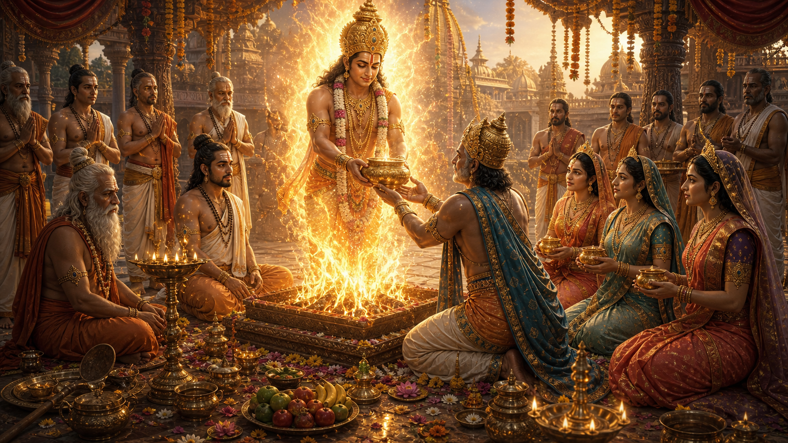
Chapter 3: Vishwamitra, the Bow of Shiva, and Sita of Mithila
Rama's youth unfolded under discipline. He and his brothers learned the Vedas, weapons, statecraft, and the subtle duties of kingship. Then sage Vishwamitra came to Ayodhya asking Dasharatha to send Rama to protect his sacrifice from rakshasas. Dasharatha hesitated like a father, but Vasistha understood the deeper plan. Rama and Lakshmana went with Vishwamitra, and the prince first displayed His protective purpose by subduing Tataka and destroying Subahu while driving away Maricha.
On that journey, Rama liberated Ahalya, wife of Gautama, who had been under a curse. The Ramayana remembers the touch of Rama as restoring her to honor and radiance. This quiet episode reveals Rama's nature before the great war: He does not only slay the wicked; He restores the fallen, the hidden, the shamed, and the waiting.
The path led to Mithila, ruled by King Janaka. There lived Sita, found by Janaka as an infant in a furrow while plowing the earth. In the swayamvara hall stood the great bow of Shiva, so heavy and sacred that kings could not lift it. Rama, at Vishwamitra's instruction, approached with humility. He lifted, strung, and broke the bow with effortless power.
Sita chose Rama. Their union is not merely royal marriage; it is cosmic companionship. Rama is dharma embodied; Sita is purity, Earth-born courage, and sacred strength. Lakshmana married Urmila, Bharata married Mandavi, and Shatrughna married Shrutakirti. The four brothers and four brides formed a radiant house of dharma, even as destiny moved toward exile and Lanka.
The meeting of Rama and Sita gathers earlier cosmic meanings into one tender moment. If Varaha lifted Bhudevi from the waters, Rama now accepts the hand of the Earth-born Sita before sages and kings. The Lord who once raised the Earth now walks beside her as a husband. The universe becomes a household, and the household becomes a field of dharma.
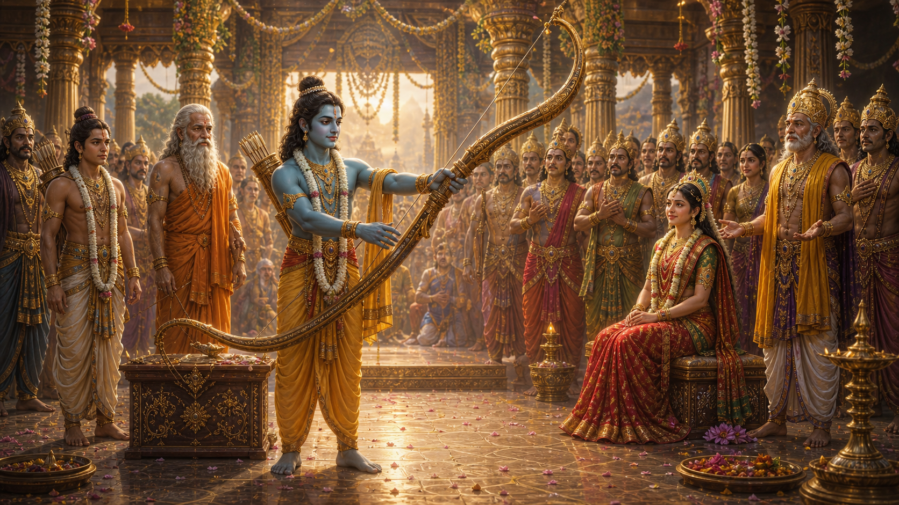
Chapter 4: The Coronation That Became Exile
Ayodhya prepared for Rama's coronation. Citizens rejoiced, elders blessed the day, and Dasharatha's heart overflowed. But destiny entered through an old promise. Kaikeyi, influenced by Manthara, claimed two boons Dasharatha had once given her: Bharata should be crowned, and Rama should go to the forest for fourteen years.
Dasharatha collapsed in grief, but Rama stood serene. Rama did not argue that the demand was unfair, though it was. He did not condemn Kaikeyi, though her request broke the king. He did not cling to the throne, though it was rightfully His. A father's word had been given, and Rama chose to protect that word at the cost of His own comfort.
Sita insisted on joining Him, teaching that marriage in dharma is not comfort-sharing only but destiny-sharing. Lakshmana too refused to remain behind. Together they removed royal ornaments, accepted forest garments, and walked away from Ayodhya. The people wept. Dasharatha's life faded under the weight of separation.
The early journey is filled with quiet sacredness. Guha, the Nishada chief, receives Rama with devotion near the Ganga. The royal prince accepts the friendship of a forest ruler without pride, showing that dharma recognizes love beyond social rank. Sumantra returns to Ayodhya with an empty chariot, carrying the sorrow of separation. Bharadwaja welcomes the exiles, and Chitrakuta becomes a place where grief and beauty share the same sky.
In this exile, Rama's greatness becomes sharper. Many can act noble when honored. Rama shows nobility when stripped of honor. The avatar does not avoid pain. He sanctifies it by refusing to abandon dharma.
Theologically, this is one of the most important movements in the Dashavatara. Earlier avatars display cosmic intervention: fish, tortoise, boar, man-lion, dwarf, and axe-bearing sage meet crisis through extraordinary force or form. Rama meets crisis by accepting limitation. He does not say that exile cannot touch Him. He shows that truth must be honored even when divinity itself walks barefoot through the forest.
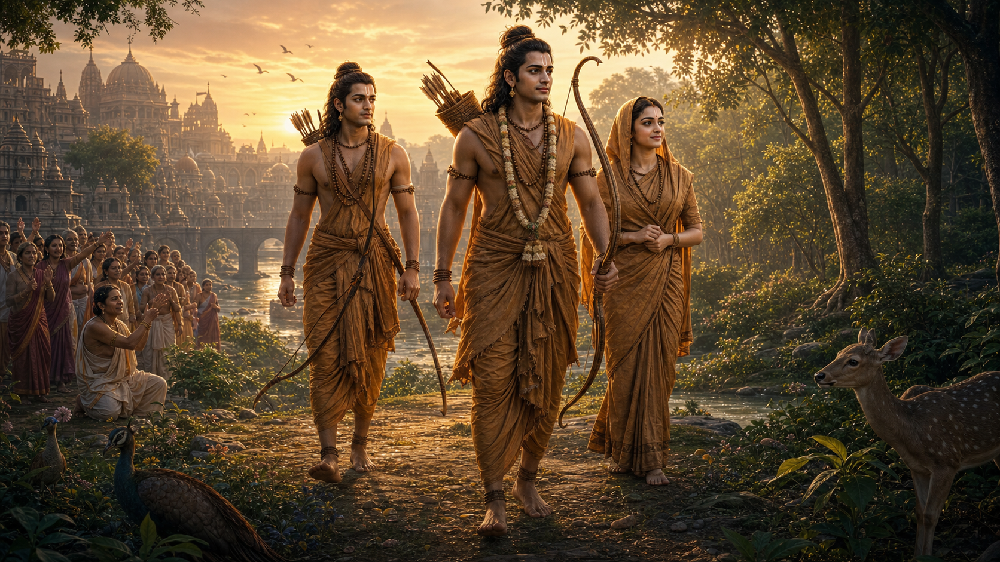
Chapter 5: Forest Dharma, Bharata's Sandals, and Hidden Grace
The forest years were not empty wandering. Rama visited hermitages, protected sages, honored ascetics, crossed rivers, and lived among trees as naturally as He had lived among palace pillars. The Ramayana's forest is sacred and dangerous at once. It contains rishis burning with tapas, rakshasas feeding on violence, quiet rivers, hidden curses, and souls waiting for Rama's touch.
At Chitrakuta, Bharata came with the citizens and begged Rama to return. Rama refused, not from hardness but from fidelity to Dasharatha's word. Bharata accepted Rama's sandals and ruled from Nandigrama as a servant-regent. Bharata's renunciation is one of the hidden lights of the epic: he had a kingdom in his hands and chose obedience instead.
Rama, Sita, and Lakshmana later moved deeper into Dandakaranya. The sages there asked protection from rakshasas who disturbed sacrifices. Rama promised to defend them. In the forest, dharma is not abstract philosophy; it is the duty to protect those who preserve sacred order. His bow becomes the shelter of the ascetic world.
They encountered Viradha and other dark forces of the wilderness, and again the pattern appears: Rama's journey releases beings bound by curse and destroys beings hardened by cruelty. Later, at the hermitage of sage Agastya, Rama received divine weapons and sacred counsel. Agastya's presence links the northern prince with the wider spiritual geography of Bharatavarsha, reminding the reader that Rama's path is not local politics alone but sacred protection across the land.
The story of Shabari shows another face of grace. She waited for Rama with simple devotion, offering fruits with love and receiving His blessing. The Lord of Ayodhya sat in a humble hermitage and accepted devotion unmeasured by status. Rama's path is lined not only with kings and warriors, but with the quiet faithful whom the world might overlook.
Shabari also becomes a doorway into the theology of waiting. She does not cross oceans, lift mountains, or command armies. Her tapas is patience, cleanliness of heart, and remembrance of her teacher's promise that Rama would come. When He arrives, her lifetime of waiting becomes a festival. The Ramayana honors many forms of devotion: Lakshmana's vigilant service, Bharata's renunciation, Sita's steadfastness, Hanuman's heroic action, and Shabari's simple expectancy.
Chapter 6: Shurpanakha, the Golden Deer, and Sita's Abduction
In Panchavati, the stillness changed. Shurpanakha, sister of Ravana, saw Rama and desired Him. Rejected by Rama and Lakshmana, and enraged by Sita's presence, she attacked. Lakshmana disfigured her, and the event set in motion a chain of revenge. Khara and Dushana came with rakshasa forces and were destroyed by Rama. News reached Ravana, whose pride could not bear the insult to his house or the defeat of his warriors.
Ravana sought the help of Maricha, the same rakshasa once driven away by Rama in Vishwamitra's sacrifice. Maricha warned him, but Ravana's desire had become deafness. Maricha took the form of a golden deer, enchanting Sita. Rama pursued it, and before dying Maricha cried out in Rama's voice. Sita, anxious, urged Lakshmana to go after Him. Lakshmana finally obeyed, leaving Sita physically alone.
The golden deer is one of the epic's clearest symbols. It is beautiful, impossible, and fatal when pursued without discernment. The scriptures do not blame Sita's innocence; they reveal how adharma weaponizes appearance. Ravana could not defeat Rama in open righteousness, so he created separation through illusion, borrowed voice, and false holiness. The war of Lanka begins in the subtle battlefield of perception.
Ravana came disguised as a mendicant. This is the darkness of adharma: it steals the appearance of holiness to commit violence. He seized Sita and carried her away in his aerial chariot. Jatayu, the aged king of vultures and friend of Dasharatha, fought Ravana with heroic devotion. He fell wounded, but not defeated in spirit.
When Rama found the empty hut, His grief shook the forest. The avatar does not pretend not to suffer. Rama wept, questioned the trees, and held dying Jatayu with tenderness, performing the bird-hero's last rites as if for a father. Dharma honors sacrifice, even when the sacrifice cannot stop the outer event.
Chapter 7: Hanuman Appears and the Alliance of the Vanaras
The search for Sita brought Rama and Lakshmana to the region of Pampa and Rishyamukha, where Sugriva lived in fear of his brother Vali. There Hanuman first approached them, disguised as an ascetic messenger. His speech was so refined, wise, and humble that Rama immediately recognized his greatness. In that meeting, bhakti found its perfect servant.
Hanuman is one of the most graceful figures in all sacred literature. He is strength without arrogance, scholarship without pride, service without hesitation. He brings Rama to Sugriva, and an alliance is formed. Rama promises to help Sugriva regain his wife and kingdom; Sugriva promises to help find Sita. Rama then slays Vali, an episode discussed deeply as a matter of kingship, justice, and hidden wrongdoing.
The Vali episode is often read with care because Rama acts from concealment. In the epic's moral reasoning, Vali had violated dharma by taking Sugriva's wife and kingdom, and as a ruler Rama held authority to punish such wrongdoing. Vali questions Him, and Rama answers as guardian of justice rather than private avenger. The episode keeps the reader alert: Rama is compassionate, but He is not sentimental about injustice.
Among the search parties, Hanuman's destiny shines. Guided by Sampati's knowledge that Sita is in Lanka, the vanaras reach the ocean. Jambavan reminds Hanuman of his forgotten strength. The son of Vayu expands with courage, leaps across the sea, and carries Rama's hope in his heart. Devotion becomes flight.
Hanuman's forgotten strength is an inner teaching of the Ramayana. The power was already within him, but it required remembrance, encouragement, and the purpose of service to awaken. The soul becomes vast when it stops asking how great it is and begins asking how it may serve Rama.
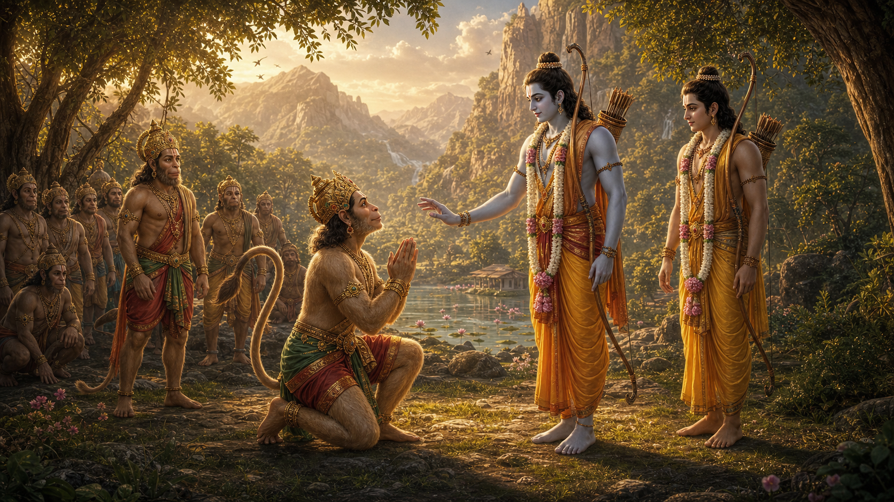
Chapter 8: Ashoka Vatika and the Ring of Hope
Hanuman entered Lanka at night, shrinking his form and moving with intelligence. He saw Ravana's city, its wealth, guards, palaces, and hidden fear. At last he found Sita in Ashoka Vatika, surrounded by rakshasi guards, thin from sorrow but unbroken in purity. Ravana tempted and threatened her, but Sita remained like a flame sheltered by truth.
Hanuman waited for the right moment, then revealed himself by speaking Rama's story from the branches above. He offered Rama's ring as proof. Sita received it as life itself. She gave Hanuman her chudamani as a token for Rama and spoke of her suffering, courage, and faith.
Hanuman offered to carry her away, but Sita refused. Rama must come openly, uphold kshatriya dharma, defeat Ravana, and restore honor before the worlds. This refusal is a moment of power, not helplessness. Ravana challenged the moral order of the worlds; therefore that order must be restored visibly.
This chapter is the devotional heart of the epic. Rama is not physically present in Ashoka Vatika, yet His ring carries His presence. Sita is imprisoned, yet no prison can touch her fidelity. Hanuman is alone in enemy territory, yet he moves with the Lord's name as armor. Divine nearness is not always visible as immediate rescue; sometimes it arrives as a sign, a word, a remembered promise, and the certainty that help is already on the way.
Hanuman then allowed himself to be captured after destroying the grove and defeating many warriors. His tail was set aflame, and with that fire he burned parts of Lanka, a sign of the destruction Ravana's own adharma had invited. When Hanuman returned, he gave Rama Sita's jewel and message. Sorrow became focused resolve.
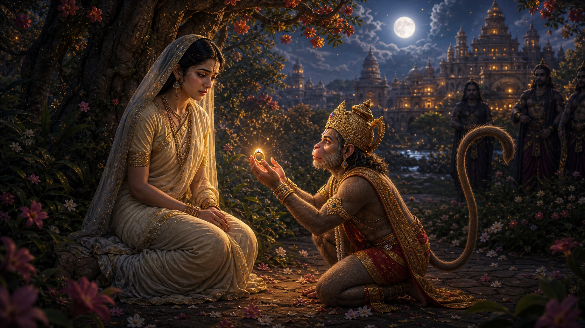
Chapter 9: Rama's Righteous Fury and the Ocean Pacified
At the shore of the great ocean, Rama did not rush blindly. For three days He prayed to Samudra, lord of the sea, seeking a path for the army. The ocean did not appear. Then Rama's patience became fierce. He took up His bow and prepared to dry the waters with a blazing arrow. This is the clearest scriptural moment where Rama's rage is revealed.
But Rama's anger is not ego. It is the fire of dharma when gentleness is ignored and the innocent remain captive. The ocean trembled. Samudra Deva rose from the waves with folded hands, acknowledging Rama's power and explaining the nature of the sea. He advised that the vanara Nala, gifted with the ability to build, should lead the construction of the bridge.
Rama accepted. His fury was pacified not by defeat, but by surrender, explanation, and the return of action to dharma. The army began to build Rama Setu. Stones, trees, mountains, and devotion became a bridge. When the Lord's purpose is clear, even the ocean gives way and service becomes architecture.
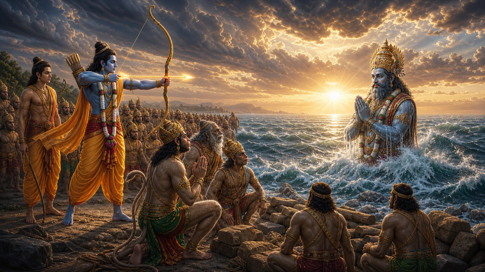
Chapter 10: Lanka, Vibhishana, and the War of Dharma
Before the war, Ravana received counsel. Mandodari warned him. Vibhishana urged him to return Sita and seek peace. Even Kumbhakarna, after awakening, recognized Ravana's wrong but remained bound by tragic loyalty. Ravana refused every path of humility. Pride had become his prison.
Vibhishana left Lanka and surrendered to Rama. Some in the vanara camp suspected him, but Rama declared a timeless vow: whoever comes to Him even once saying, "I am yours," must be given protection. This principle of sharanagati is one of the hidden jewels of the Ramayana. Rama sees the truth of refuge beyond birth and clan.
This vow is among the most cherished teachings of Vaishnava traditions. Vibhishana arrives from the enemy city, brother of the very tyrant who stole Sita, yet Rama's response is larger than suspicion. Protection given to the surrendered is not strategy; it is Rama's nature. In a world divided by birth, clan, and past action, sharanagati opens a royal road straight to grace.
The war unfolded with immense force. Indrajit used illusion and celestial weapons. Lakshmana fell unconscious from the Shakti weapon, and Hanuman carried the life-restoring mountain when he could not identify the herb. Kumbhakarna entered battle like a moving mountain and was slain. Indrajit was killed by Lakshmana. Each fall narrowed Ravana's world until he stood alone with the consequences of his desire.
Rama's army was not conventional imperial power. It was composed of vanaras, bears, surrendered Vibhishana, devoted Hanuman, and dharma itself. Ravana had ignored humans and forest beings in his boon. Those very beings now surrounded Lanka.
Chapter 11: Ravana Falls and Anger Becomes Compassion
The final battle between Rama and Ravana is the meeting of two kinds of greatness. Ravana is magnificent in power but ruined by appetite. Rama is magnificent in restraint and guided by dharma. Ravana's chariot, weapons, heads, and sorcery fill the battlefield, but Rama's arrows move with the calm certainty of divine justice.
In the Valmiki Ramayana, Rama is aided by Matali, Indra's charioteer, and receives the counsel of sages. The Aditya Hridayam, taught by sage Agastya before the decisive battle, turns Rama's mind toward solar glory. Strength and prayer meet. Rama releases the fatal arrow, and Ravana falls.
At that moment Rama's anger is pacified by completion. He does not dance over the enemy. He instructs Vibhishana to perform Ravana's funeral rites, declaring that enmity ends with death. He can destroy adharma without losing compassion. He can fight with full force and still honor the fallen as a being whose life has ended.
Sita is brought before Rama. The fire ordeal is among the most solemn and difficult parts of the epic. In the Ramayana's framework, Sita's purity is revealed before the worlds through Agni, and Rama's public role as king and upholder of social dharma is shown in painful tension with his personal heart.
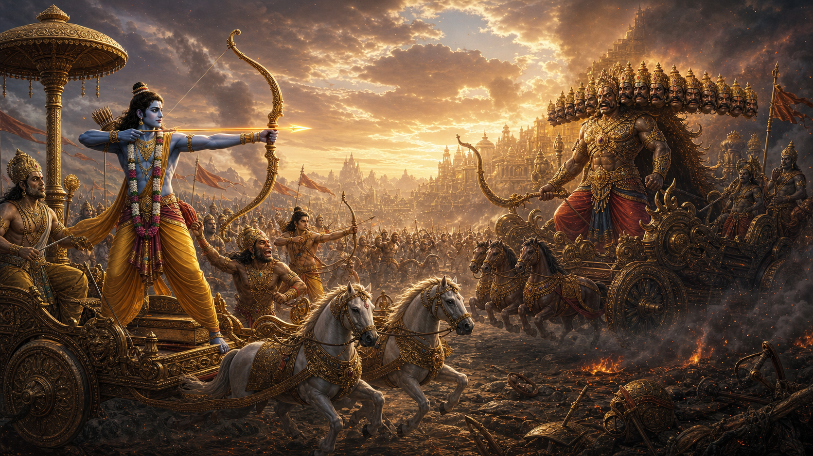
Chapter 12: Return, Coronation, and Rama Rajya
With Ravana defeated, Vibhishana was crowned king of Lanka. Rama, Sita, Lakshmana, Hanuman, Sugriva, and the allies returned to Ayodhya in the Pushpaka vimana. Bharata, who had lived in austerity awaiting Rama's return, received Him with tears. Ayodhya lit itself with joy, a memory cherished in later traditions as the light of Diwali.
Rama was crowned king. Sita sat beside Him. Lakshmana, Bharata, Shatrughna, Hanuman, and the elders stood in devotion. Rama Rajya became the ideal of righteous rule: truth honored, justice protected, people cared for, nature harmonious, and the king accountable to dharma rather than personal pleasure.
Rama Rajya is not nostalgia alone. It is a spiritual model of governance. A ruler must restrain himself before restraining others. Justice must protect the weak, not flatter the powerful. Public life must remain answerable to dharma. Rama's kingship is sacred because it is service wearing a crown.
In the coronation scene, the great personalities of the epic stand together like planets around a sun. Sita represents sovereign purity. Lakshmana represents tireless service. Bharata represents renunciation within responsibility. Shatrughna represents loyal strength. Vibhishana represents refuge accepted from unlikely places. Sugriva represents friendship restored through justice. Hanuman represents devotion that wants nothing but the Lord's work. Rama Rajya is built from all these virtues, not from royal power alone.
Hanuman asked for no kingdom, wealth, or celestial reward. His joy was service. In many devotional traditions, he remains wherever Rama's name is spoken. He is the proof that devotion is not escape from action; it is action made pure.
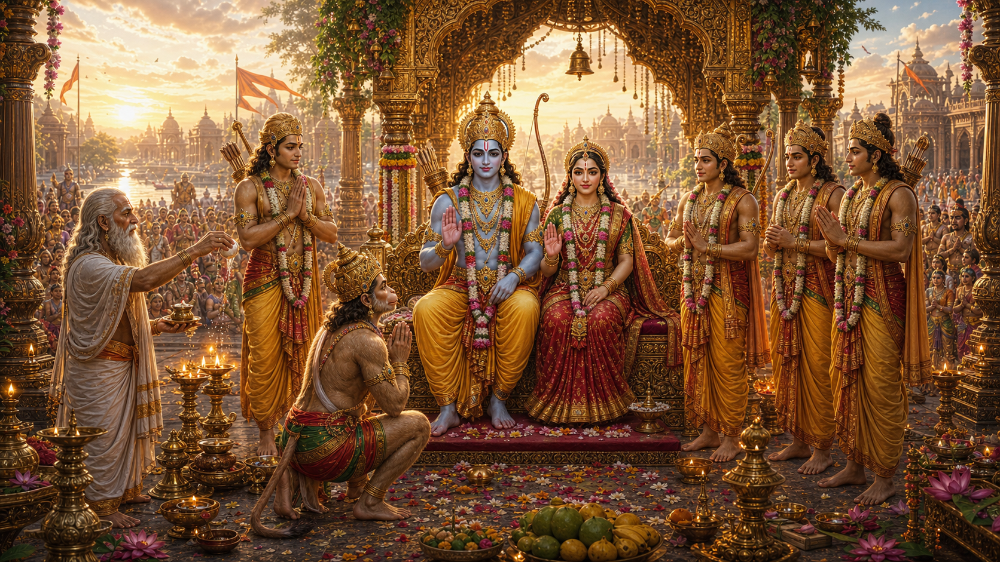
Chapter 13: Sita's Later Sorrow, Lava-Kusha, and the Sarayu Return
The later portion of Rama's life, especially in the Uttara Kanda tradition, carries profound sorrow. Public doubt about Sita's purity reached Rama's ears. As king, He faced the unbearable conflict between personal love and royal responsibility. Sita was sent to the hermitage of Valmiki, where she gave birth to Lava and Kusha. This episode is not easy, and it should not be made easy. It shows the terrible cost of kingship when public dharma and private tenderness are torn apart.
Valmiki raised the twins in wisdom and taught them the Ramayana itself. Later, Lava and Kusha sang Rama's own story before Him. The epic became self-revealing: the king heard his life as sacred poetry from his sons. When Sita was called to prove herself again, she appealed to Mother Earth. As Earth-born daughter, she returned to Bhudevi, her purity beyond worldly judgment.
Sita's return to Earth is not defeat. It is a final refusal to let worldly suspicion define her. The daughter of the furrow returns to the Mother who first revealed her. Rama remains the king, but the reader is left with a sacred ache: dharma on earth can be radiant, yet still heavy with sorrow. The epic does not hide that weight.
Rama continued His rule, but the sweetness of earthly life had thinned. At the end, He entered the Sarayu, returning to His eternal divine state. The Puranas remember this as the Lord's return to Vaikuntha, while devotional traditions speak of Saketa, the eternal Ayodhya. Rama's departure is not disappearance. It is the withdrawal of the visible form after the teaching is complete.
The Sarayu return gathers the whole avatar into silence. The prince born from sacrificial fire, the husband of Sita, the friend of Hanuman, the destroyer of Ravana, and the king of Ayodhya steps beyond earthly sight. Yet the name remains. The story remains. The path remains. This is how avatars continue after their visible work: they become memory powerful enough to guide civilization.
Chapter 14: Hidden Currents and Deeper Meanings
The Rama story is filled with hidden currents. Ravana's connection to Jaya and Vijaya links the avatar to Narasimha and Varaha. The Lord meets the same cosmic opposition again, but in a different mood. Narasimha breaks impossible pride instantly; Rama lets time, vows, exile, friendship, grief, and war reveal dharma step by step.
Sita's Earth-born nature connects Rama's story to Varaha's protection of Bhudevi. In Varaha, the Lord lifts the Earth from the waters. In Rama, He protects Sita, the Earth-born queen, from Ravana's seizure. The symbolism is delicate and powerful: adharma tries to possess Earth and woman as property; Vishnu restores both to honor.
Vedavati, remembered in later Ramayana and Puranic traditions, is another hidden thread. Ravana once violated the sanctity of her tapas, and she vowed to become the cause of his destruction. Some traditions connect her rebirth with Sita. Whether read as theology or sacred memory, the teaching is clear: violated purity is not powerless. It can become the force by which tyranny falls.
Rama's bow symbolizes responsibility. Hanuman's leap symbolizes faith. Lakshmana's service symbolizes alert devotion. Bharata's sandals symbolize leadership without possession. Vibhishana's surrender symbolizes refuge beyond birth. Shabari's fruits symbolize love beyond social status. Jatayu's fall symbolizes sacrifice honored by God Himself. Each character is a doorway into dharma.
The avatar also reveals the evolution of divine purpose across the Dashavatara. Matsya preserves knowledge from the flood. Kurma supports the churning of effort. Varaha raises the Earth. Narasimha shatters the arrogance that persecutes devotion. Vamana humbles cosmic pride through sacred intelligence. Parashurama cuts down corrupted force. Rama then shows how civilization itself must be ordered: family, promise, kingship, friendship, refuge, war, and compassion all brought under dharma.
For modern readers, Rama is not merely an ancient king. He is a mirror for difficult choices. How does one remain truthful when comfort asks for compromise? How does one hold anger without becoming cruel? How does one use strength for protection rather than domination? How does one grieve without abandoning duty? The Ramayana does not answer with slogans. It answers with a life.
Chapter 15: Where Rama Resides Now and the Timeless Hope of Dashavatara
Where does Rama reside now? In the scriptural vision, He returns to His eternal abode, celebrated as Vaikuntha or Saketa, the divine Ayodhya beyond decay. In the world of devotion, He resides in Ayodhya, in temples, in the Ramayana, in the name "Rama," and in the heart that chooses truth over comfort. He is worshiped as protector, king, friend, child, husband of Sita, and Lord of Hanuman.
Rama's eternal role is to protect dharma through maryada. He does not only rescue by miracle. He teaches how to live when duty hurts, how to speak when anger rises, how to rule when power tempts, how to love when separation burns, and how to fight without hatred. His life says that righteousness is not always soft, but it must always be pure.
In the evolutionary rhythm of Dashavatara, Rama marks the perfected human ideal before Krishna reveals divine play in full sweetness. Matsya saves knowledge, Kurma supports effort, Varaha restores the Earth, Narasimha protects devotion, Vamana measures pride, Parashurama corrects violent power, and Rama shows how a human life can become a bridge between earth and heaven. He is the king who suffers, the warrior who restrains, the son who obeys, the husband who grieves, and the Lord who never abandons dharma.
The hope of Rama Avataram is not that life will never be painful. The hope is that pain need not make us false. Exile can become sacred. Loss can become service. Anger can be pacified by wisdom. Power can become protection. Devotion can leap oceans. A bridge can be built where there was only water.
For seekers, Rama's path is practical sanctity. Speak truth even when silence would be easier. Keep promises even when the heart trembles. Protect the vulnerable without hatred. Honor friendship across boundaries. Let grief deepen compassion rather than harden the mind. In this way, the ancient journey from Ayodhya to Lanka becomes an inner pilgrimage from confusion to courage.
That pilgrimage remains open today.
May Rama's name steady the heart. May Sita's purity strengthen the world. May Lakshmana's loyalty, Bharata's renunciation, Hanuman's devotion, and Vibhishana's surrender guide seekers across the difficult ocean of life. And may the light of Dashavatara remind every age that whenever dharma trembles, Vishnu comes - sometimes roaring from a pillar, sometimes measuring the cosmos, sometimes carrying an axe, and sometimes walking quietly as Rama, the prince whose life became the path.
Krishna
Lord Vishnu's Krishna Avataram is the descent of the Supreme not only as protector, but as sweetness, wisdom, play, strategy, friendship, kingship, and love. If Rama reveals the majesty of maryada, the sacred dignity of righteous conduct, Krishna reveals the fullness of divine intimacy. He is the child of Gokula who steals butter and hearts, the cowherd who dances on Kaliya, the beloved of Vrindavan, the destroyer of Kamsa, the lord of Dwaraka, the friend of the Pandavas, the charioteer of Arjuna, and the speaker of the Bhagavad Gita.
This storybook follows the scriptural arc primarily from the Bhagavata Purana, Vishnu Purana, Mahabharata, and Harivamsa traditions, with the larger Dashavatara continuity remembered through the Puranas. It keeps the timeline clear: the burdened Earth, Kamsa's tyranny, Krishna's divine birth, the childhood leelas of Vraja, the humbling of pride, the liberation of Mathura, the founding of Dwaraka, the protection of devotees, the Mahabharata mission, the Gita, the pacifying of divine anger, the final teaching to Uddhava, and Krishna's return to His eternal abode.
- • Krishna reveals that the Supreme can be approached as child, friend, beloved, teacher, ruler, and inner Self.
- • Kamsa's fear shows that prophecy cannot be defeated by violence when dharma has already begun to move.
- • The Vraja leelas teach that pure love can bind the Infinite more powerfully than fear or ritual pride.
- • Krishna's protection is playful, strategic, tender, and fierce, always guided by dharma.
- • The Bhagavad Gita teaches action without selfish attachment, knowledge of the eternal soul, devotion, and surrender.
- • Krishna's departure teaches that even divine presence on earth follows cosmic purpose, yet His name and wisdom remain.
Chapter 1: The Burdened Earth and the Hidden Thread from Narasimha
The Krishna story begins with the Earth herself burdened by oppressive kings. In the Bhagavata Purana, Bhudevi approaches Brahma in the form of a distressed cow. The world is not merely suffering from one tyrant; many rulers have become heavy with arrogance, violence, and demonic tendency. Brahma, Shiva, and the devas go to the shore of the Ocean of Milk and pray to Lord Vishnu. The answer comes through divine assurance: the Supreme will descend in the Yadu line, and the devas should take birth among the Yadavas, cowherds, and allied families to assist the Lord's work.
This descent is also tied to the deeper current of the Dashavatara. In the Puranic memory, the enemies of Vishnu often appear through the curse of Jaya and Vijaya, the gatekeepers of Vaikuntha. They first came as Hiranyaksha and Hiranyakashipu, met by Varaha and Narasimha. They later came as Ravana and Kumbhakarna, met by Rama. In Krishna's age, the final current appears through Shishupala and Dantavakra, whose hostility toward Krishna ends in liberation when the Lord releases them from the last force of opposition.
This Narasimha connection matters because Krishna does not erase the earlier avatars; He gathers them. Narasimha's protective fury, Varaha's love for Earth, Vamana's subtle intelligence, Parashurama's correction of violent power, and Rama's royal dharma all shine differently in Krishna. He protects like Narasimha, restores like Varaha, humbles like Vamana, strategizes like Parashurama, upholds dharma like Rama, and then surpasses all expectation by playing the flute in Vrindavan.
The tyranny in Krishna's story takes many forms. Kamsa is the immediate terror, ruling Mathura through fear after hearing that Devaki's eighth son would kill him. Jarasandha becomes the relentless military threat. Shishupala embodies insult hardened into spiritual blindness. Duryodhana and the Kaurava court display political adharma. Krishna descends not into a simple world of one enemy, but into a web of fear, pride, and confused power.
For this reason, Krishna Avataram is not only a battle story. It is a complete spiritual universe. The Lord comes as a baby who must be hidden, a cowherd who must be loved, a prince who must overthrow tyranny, a statesman who must guide kingdoms, and a teacher who must reveal the eternal Self in the middle of war.
Chapter 2: Kamsa, the Prophecy, and the Prison of Mathura
In Mathura, King Ugrasena's son Kamsa was powerful, ambitious, and cruel. His sister Devaki was married to Vasudeva, a noble Yadava. As Kamsa drove the newly married couple in their chariot, a celestial voice declared that Devaki's eighth son would be his destroyer. The prophecy pierced Kamsa's heart like lightning. In that instant affection collapsed into fear, and fear became violence.
Kamsa raised his sword against Devaki, but Vasudeva spoke with wisdom and restraint. He promised to hand over each child born to Devaki. Kamsa accepted, but suspicion ruled him. Devaki and Vasudeva were imprisoned. Their children were born into chains, and Kamsa killed the first six sons. The scriptures remember this grief with great solemnity. The prison of Mathura is not only stone and iron; it is the world under fear, where innocence is sacrificed to preserve a tyrant's imagined safety.
The seventh child, Sankarshana, was mystically transferred by Yogamaya from Devaki's womb to Rohini's womb. He would be born as Balarama, the elder brother of Krishna, associated with Ananta Shesha, strength, support, and the plow that prepares the field. The world was being prepared quietly, even while Kamsa believed himself in control.
Then came the eighth birth. At midnight, in the dark prison, Lord Vishnu appeared before Devaki and Vasudeva in divine form, remembered in the Bhagavata Purana as bearing conch, discus, mace, and lotus. The parents praised Him with wonder and trembling love. Yet they also feared Kamsa. The Lord, compassionate toward their human hearts, assumed the form of an ordinary infant.
The chains fell. The prison doors opened. The guards slept. Vasudeva placed the child in a basket and walked into the storm toward Gokula. The Yamuna rose and made way. Ananta Shesha sheltered the child with his hoods. In Gokula, Yashoda had given birth to a daughter, Yogamaya. Vasudeva exchanged the infants and returned. When Kamsa tried to kill the girl, she rose from his hands as the goddess and warned him that his destroyer had already been born elsewhere.
This is Krishna's dramatic appearance: not merely birth, but a divine crossing from prison to pasture, from fear to love, from royal violence to cowherd tenderness. The Lord who will later reveal the cosmic form first allows Himself to be carried by His father through rain.
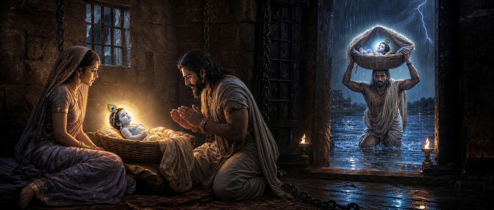
Chapter 3: Gokula, Yashoda, and the Infinite Bound by Love
In Gokula, Krishna grew under the love of Nanda and Yashoda. The Supreme, who cannot be contained by space, allowed Himself to be held, fed, bathed, scolded, kissed, and protected. This is one of the sweetest revelations in the Bhagavata Purana: divine greatness does not disappear in childhood; it becomes accessible. The same Lord who rests on the cosmic serpent now crawls in dust, steals butter, and fills the village with laughter.
Kamsa sent dangers again and again. Putana came disguised as a beautiful nurse, her breast poisoned, intending to kill the child. Krishna drank not only the milk but her very life. Yet the Bhagavata gives the episode a startling compassion: because Putana approached in the outward role of a mother, Krishna granted her a motherly liberation. Even a false offering, if touched by the Lord, can be purified beyond expectation.
Other dangers came: Shakatasura in the cart, Trinavarta in the whirlwind, Vatsasura among the calves, Bakasura like a monstrous crane, Aghasura like a devouring serpent. Each attack reveals a paradox. The villagers see a child; the cosmos sees the protector of worlds. Krishna's play is not frivolous. It is protection hidden inside childhood delight.
The Damodara episode reveals the heart of Krishna bhakti. Yashoda sees the universe in Krishna's mouth, yet her motherly love returns stronger than cosmic awe. Later, when Krishna steals butter and breaks pots, she ties Him to a mortar. The rope is always two fingers short until Krishna allows Himself to be bound. Devotional traditions cherish this as a mystery: the Infinite is bound by the devotee's effort and the Lord's grace. Neither alone completes the knot.
Dragged with the mortar, Krishna uproots the twin Arjuna trees and liberates Nalakuvara and Manigriva, sons of Kubera, who had been cursed by Narada because of pride and carelessness. Even in play, Krishna releases souls from hidden bondage. The child's courtyard becomes a sacred field where karma, grace, and love meet.
Chapter 4: Brahma Bewildered and the Secret of Vraja
One of the most hidden and profound stories of Krishna's childhood is Brahma-vimohana, the bewilderment of Brahma. After Krishna destroys Aghasura and shares a simple forest meal with the cowherd boys, Brahma wonders at the mystery of this village child. To test Him, Brahma steals the calves and boys and hides them. Krishna responds not with anger, but with a miracle of intimacy. He expands Himself as every calf and every cowherd boy for an entire year.
During that year, the mothers of Vraja love their children with even greater tenderness, because each child is Krishna Himself. The cows love their calves with overflowing affection, because each calf too is Krishna. Balarama gradually perceives the mystery. Brahma returns after what seems to him a short time and sees countless forms of Vishnu shining from the boys and calves. His pride collapses into humility.
This story reveals that Krishna is not only the object of love; He becomes the beloved in every relationship. The parents love their sons, the cows love their calves, the boys love their friend, and all of it is secretly Krishna loving and being loved. Vraja is not a place where theology is explained by lectures. It is where theology becomes milk, dust, lunch, friendship, and the call of a flute.
The Bhagavata Purana uses these leelas to reveal Krishna as Svayam Bhagavan, the Supreme Lord in a form of intimate sweetness. He is not less divine because He plays. His play is the freedom of the Absolute, the overflow of joy that creation itself cannot fully contain. Where fear sees God as distant power, Vraja sees God as the one who can be fed a handful of rice, followed by calves, and searched for when He hides behind trees.
Chapter 5: Kaliya, Mercy, and Anger Pacified by Surrender
The Yamuna was once poisoned by Kaliya, a serpent whose venom made the waters deadly. Birds fell from the sky, trees withered near the banks, and the people of Vraja feared the river. Krishna entered those waters and encountered the serpent. Kaliya rose with many hoods, full of pride and poison. Krishna subdued him by dancing upon his heads, turning battle into divine rhythm.
This episode is a key to understanding Krishna's anger and its pacification. Krishna is fierce when poison threatens innocent life. His dance on Kaliya is not cruelty; it is the stamping out of arrogance that has made a sacred river unfit for beings to drink. Yet when Kaliya's wives, the Nagapatnis, approach with folded hands and offer prayers, Krishna's force becomes mercy. Kaliya is spared, ordered to leave the Yamuna, and protected from Garuda by the marks of Krishna's feet.
In Narasimha, divine wrath blazes until Prahlada's devotion is honored. In Krishna, fierce correction is pacified by surrender and prayer. The Lord does not delight in punishment. He delights in purification. Kaliya's poison is removed, the river is restored, and the serpent leaves carrying the sign of grace on his heads.
The symbolism is luminous. The Yamuna is the inner current of life. Kaliya is the poisonous pride that coils in that current. Krishna's feet are divine awareness dancing upon ego until it bows. The Nagapatnis are the voice of humility that asks not for victory, but for mercy. The restored river becomes the restored heart.
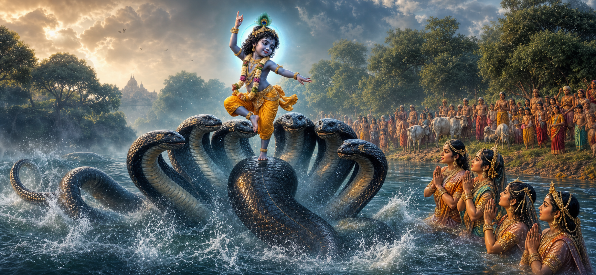
Chapter 6: Govardhana and the Humbling of Indra
In Vraja, the cowherds prepared an annual worship of Indra, lord of rain. Krishna asked why they should perform a ritual out of fear rather than gratitude toward the actual supports of their life: Govardhana hill, the cows, the land, and the duties of their community. He guided them to honor Govardhana instead. This was not a rejection of sacred order, but a correction of ritual pride. Worship must be rooted in truth, not mechanical anxiety.
Indra, angered by the interruption of his honor, sent terrible storms upon Vraja. Rain fell like destruction. The cowherds, cows, elders, children, and gopis rushed to Krishna. With effortless grace, Krishna lifted Govardhana hill on His little finger and held it like a vast umbrella for seven days. Beneath the hill, fear became wonder. The villagers looked at Krishna and realized that the child they loved was their shelter in every sense.
Indra's pride was broken. When the storm ended, he approached in humility. Surabhi, the celestial cow, also honored Krishna, and He was celebrated as Govinda, the protector and delight of cows, senses, earth, and devotees. Here Krishna protects without hatred. He does not destroy Indra; He reforms him. The storm becomes a teaching, and divine correction restores cosmic balance.
Govardhana also reveals the social vision of Krishna Avataram. The Lord stands at the center, but everyone is gathered beneath the same shelter: elders, children, women, men, animals, friends, and servants. No one is too small to be protected. The mountain of dharma becomes a home.
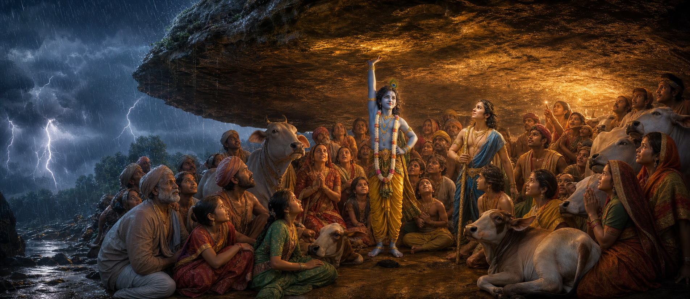
Chapter 7: The Flute, the Gopis, and the Sacred Mystery of Rasa
The Rasa Lila of the Bhagavata Purana must be approached with reverence. It is not worldly romance placed into scripture. It is the highest poetry of devotion, where the soul hears the call of the Divine and leaves behind every lesser attachment. On an autumn night, Krishna plays the flute, and the gopis of Vraja come to Him with hearts absorbed in love. Krishna first tests them, speaking of duty and return, but their devotion is unshakable.
Then the circular dance unfolds beneath the moon. Krishna expands so that each gopi experiences Him beside her. This is a profound theological image: the Supreme is one, yet fully present to every soul. The Lord is not divided by love. He becomes intimately available without ceasing to be infinite.
When a trace of pride appears among some gopis, Krishna disappears, and separation becomes a deeper form of union. The gopis sing in longing, remembering His walk, smile, words, and grace. Their love is purified from possession into surrender. The Rasa Lila teaches that the highest devotion is not control over God, but total offering to God.
Radha, though described with varying emphasis across traditions, stands in devotional memory as the supreme expression of love for Krishna. The Bhagavata's gopi devotion and later Vaishnava traditions contemplate her as the crest jewel of bhakti. The essential teaching remains scripturally rooted: divine love is the soul's deepest destiny, and Krishna's flute awakens that memory.
In the evolution of Dashavatara, this is a new revelation. The Lord does not only save the world from external danger. He draws the heart toward the sweetness for which it was created. Dharma protects life; prema fulfills it.
Chapter 8: Akrura, Mathura, and the Fall of Kamsa
Kamsa eventually summoned Krishna and Balarama to Mathura through Akrura, whose name means "not cruel" and whose heart was devoted to the Lord. Akrura's journey to Vraja is filled with longing. He knows he is carrying a royal command, but inwardly he rejoices that he will see Krishna. On the way to Mathura, he receives a divine vision of Krishna and Balarama in cosmic form, revealing that the cowherd boys are not ordinary children.
In Mathura, Krishna breaks the great bow prepared for Kamsa's festival. He and Balarama defeat the royal elephant Kuvalayapida and the wrestlers Chanura and Mushtika. The arena is filled with awe, fear, and destiny. Kamsa orders violence, but his own end has arrived. Krishna leaps upon the platform, seizes Kamsa, and kills him. The tyrant who tried to kill the unborn Lord is brought down by the very prophecy he tried to escape.
Krishna does not seize power for selfish pleasure. He restores Ugrasena to the throne, frees Vasudeva and Devaki, and honors His parents. The child hidden in Gokula now stands openly as the liberator of Mathura. Kamsa's death is not revenge alone; it is the release of a city from fear.
Afterward, Krishna and Balarama study under Sandipani Muni. As guru-dakshina, they restore the guru's lost son, a story cherished as proof that divine power bows to the sanctity of the teacher. Even after destroying Kamsa, Krishna submits to learning. His life never separates greatness from humility.
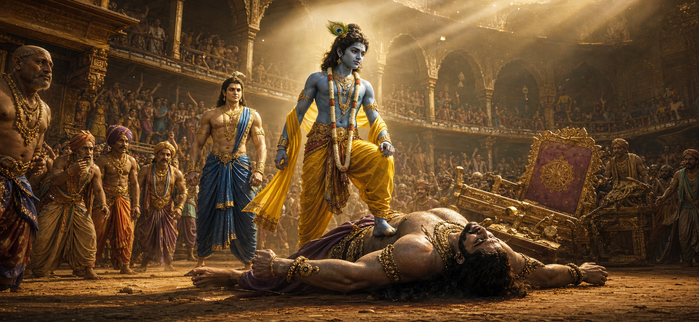
Chapter 9: Dwaraka, Rukmini, and the Lord of Sacred Strategy
Kamsa's death did not end conflict. Jarasandha, Kamsa's father-in-law and a powerful king of Magadha, repeatedly attacked Mathura. Krishna protected the Yadavas, but He also understood that endless siege would endanger the people. Therefore He moved His community to the fortified sea-city of Dwaraka, a radiant city remembered in the Puranas as protected by the ocean and divine planning.
This move shows Krishna's strategic wisdom. Dharma is not stubbornness. A protector does not expose innocent people merely to prove courage. Krishna's withdrawal from Mathura to Dwaraka is not fear; it is leadership. He preserves His people so that the larger work of dharma can unfold.
The story of Rukmini reveals Krishna as the protector of devoted longing. Rukmini, princess of Vidarbha, had heard of Krishna's virtues and accepted Him inwardly as her Lord and husband. Her brother Rukmi wished to marry her to Shishupala. Rukmini sent Krishna a letter of surrender, asking Him to rescue her before the unwanted marriage. Krishna came in His chariot, lifted her away with royal dignity, defeated opposing kings, and married her.
Rukmini's letter is one of the beautiful hidden treasures of Krishna devotion. She does not choose Krishna from passing attraction. She chooses Him through hearing His qualities, a central path of bhakti. The ear becomes the doorway of love. Sacred listening becomes destiny.
In Dwaraka, Krishna's household life expands through many sacred episodes: Satyabhama, Jambavati, the Syamantaka jewel story, the birth of Pradyumna, and the liberation of 16,100 imprisoned women from Narakasura. Krishna married those women to restore their dignity in society, showing that divine protection includes honor after suffering. His 16,108 queens in the Bhagavata tradition symbolize not indulgence, but the Lord's capacity to be wholly present to every surrendered soul.
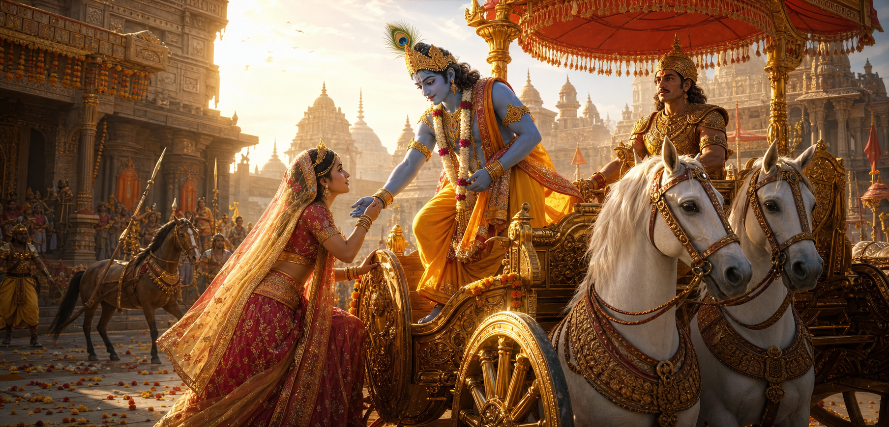
Chapter 10: Hidden Stories of Protection Across the Ages
Krishna's life contains many lesser-known streams of protection. When Kalayavana threatened Mathura, Krishna led him into the cave of King Muchukunda, who had been sleeping after serving the devas. Kalayavana kicked the sleeping king and was burned by Muchukunda's awakened glance. Krishna then blessed Muchukunda, turning a military crisis into spiritual instruction on time, exhaustion, and liberation.
Narakasura's fall is another important episode. Narakasura had seized celestial earrings, oppressed beings, and imprisoned thousands of women. Krishna, with Satyabhama in many traditions, defeated him and restored what had been taken. The liberated women feared social rejection, and Krishna accepted them with compassion. Here the Lord does not only defeat the oppressor; He heals the consequences of oppression.
Shishupala's story links Krishna directly to the older avatar cycle. Born with deformities, he was prophesied to be killed by the person in whose lap his extra limbs disappeared. That person was Krishna. Shishupala's mother begged Krishna for mercy, and Krishna promised to forgive many offenses. At Yudhishthira's Rajasuya sacrifice, Shishupala repeatedly insulted Krishna. When the limit was crossed, Krishna released the Sudarshana and killed him. The assembly saw Shishupala's essence enter Krishna, showing the end of Jaya and Vijaya's cursed opposition.
Dantavakra too, hostile to Krishna, met his end at Krishna's hands. These episodes are not mere violence. In the Puranic arc, they close a long cosmic story that began with the gatekeepers' fall from Vaikuntha and moved through Narasimha, Rama, and Krishna. Opposition is finally exhausted. The Lord's justice becomes liberation.
Krishna protects in different ways according to need. To Putana He grants unexpected liberation. To Kaliya He gives correction. To Indra He gives humility. To Rukmini He gives rescue. To the imprisoned women He gives honor. To the Pandavas He gives guidance. To Shishupala He gives release after long patience. This range is why Krishna is so beloved: His compassion is precise.
Chapter 11: The Pandavas, Draupadi, and the Road to Kurukshetra
Krishna's role in the Mahabharata is not separate from His avatar mission. The Earth is burdened not only by demons in obvious form, but by kings who twist law, kinship, and politics into instruments of greed. The Pandavas, sons of Pandu, are bound to Krishna through family, friendship, and dharma. Krishna loves them, advises them, protects them, and yet does not remove every hardship from their path.
Draupadi's humiliation in the Kuru court becomes one of the darkest signs of adharma. The tradition remembers Krishna as her unseen protector when she calls upon Him in helpless surrender. The endless garment is more than miracle; it is the principle that when worldly protection fails, surrender reaches the Lord. The court's failure becomes a wound that the war will eventually answer.
Krishna repeatedly seeks peace. He goes as messenger to the Kaurava court, asking for justice and even for a minimal settlement. Duryodhana refuses. He tries to capture Krishna, and Krishna reveals His divine majesty, showing that the one they attempt to bind contains the worlds. Still, the Kauravas choose blindness.
Before the war, both Arjuna and Duryodhana come to Krishna. Krishna offers a choice: His vast Narayani army on one side, and Himself, unarmed, on the other. Duryodhana chooses the army. Arjuna chooses Krishna. This is one of the epic's clearest teachings. Worldly calculation chooses force; devotion chooses the Lord. Arjuna receives not a weapon, but the charioteer of his soul.
Hanuman also enters Krishna's Mahabharata presence through Arjuna's banner, the Kapidhvaja. The great servant of Rama now stands as protective glory upon the chariot where Krishna speaks the Gita. Thus Rama and Krishna meet in sacred symbolism: Hanuman, devotee of Rama, watches over Arjuna while Krishna guides him.
Chapter 12: The Gita and the Cosmic Form
On the battlefield of Kurukshetra, Arjuna sees teachers, elders, cousins, friends, and loved ones standing on both sides. His bow slips. His heart trembles. He does not want victory soaked in the blood of kin. This crisis is not cowardice; it is moral anguish. Krishna allows Arjuna's confusion to become the doorway of the Bhagavad Gita.
Krishna teaches that the true Self is unborn, eternal, and not slain when the body is slain. He teaches karma yoga: perform the action that dharma requires without selfish attachment to its fruits. He teaches jnana: discern the imperishable from the changing. He teaches dhyana: steady the mind. He teaches bhakti: surrender the heart to the Supreme with love. He teaches that whenever dharma declines and adharma rises, He manifests age after age.
Arjuna asks to see Krishna's cosmic form. Granted divine sight, he beholds the Vishvarupa: countless faces, eyes, arms, weapons, suns, fires, devas, sages, worlds, time, creation, and destruction. The friend on the chariot is revealed as the Lord of all. Arjuna trembles, praises, apologizes for informal familiarity, and asks Krishna to return to the gentle human form he can love.
This movement is essential. Krishna does not reveal the cosmic form to erase friendship. He reveals it so that friendship can be understood as grace. The Infinite has been sitting beside Arjuna, holding reins. The Lord of time has chosen to serve as charioteer. The Gita's power lies in this union of intimacy and infinity.
Krishna's teaching does not glorify war for its own sake. It places action under dharma, self-knowledge, and surrender. Arjuna must fight because he is a kshatriya facing an unjust order that has rejected peace. But he must fight without hatred, ego, or greed. This is the razor edge of the Gita: act fully, but belong inwardly to God.
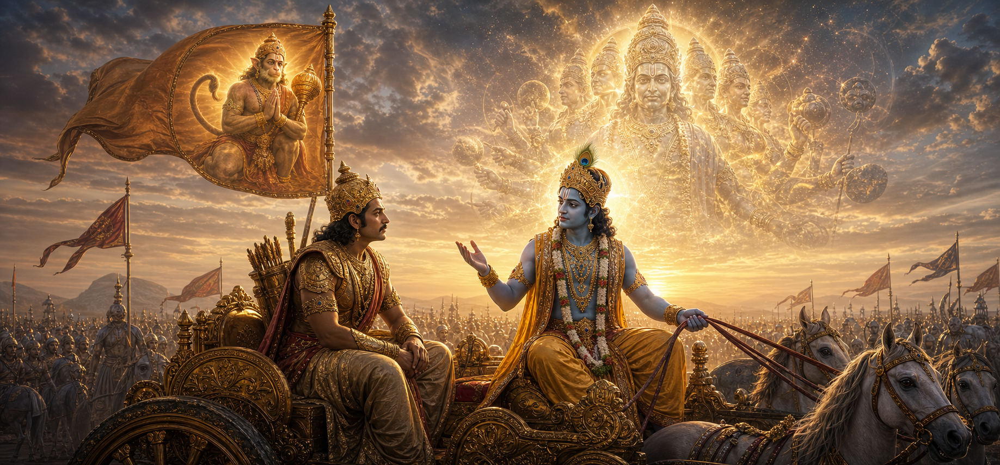
Chapter 13: Krishna's Fury, Bhishma, and the Promise Pacified
The Mahabharata also shows Krishna's fierce side in a profound way. Krishna had vowed not to wield weapons in the war. Yet when Bhishma, the grandsire, fought with overwhelming force and Arjuna hesitated, Krishna's protective anger rose. In one famous episode, He leapt from the chariot, seized a broken chariot wheel, and rushed toward Bhishma as if to strike him down.
Bhishma welcomed the sight with devotion. To die at Krishna's hands would be a blessing. Arjuna, alarmed that Krishna's vow would be broken because of his own weakness, ran after Him and restrained Him. Krishna's fury was pacified by Arjuna's plea and by the deeper purpose of the vow. The Lord had shown that He values His devotee's protection even above His own promise, yet He allowed Arjuna to restore the balance.
This episode answers the question of Krishna's rage. His anger is not personal irritation. It is love in its fierce form when dharma and the devotee are endangered. It rises like Narasimha's fire, but in the Mahabharata it is drawn back through relationship: Arjuna's devotion, Bhishma's surrender, and Krishna's own commitment to the role He has chosen.
Bhishma later falls on a bed of arrows, choosing the time of his departure. Krishna stands before him as he teaches Yudhishthira about kingship, duty, and devotion. The warrior who once faced Krishna's rushing wrath now departs with Krishna in his sight. Even conflict with the Lord becomes sanctified when the heart is devoted.
The war continues through terrible turns: Drona's fall, Karna's fate, Shalya, Ashvatthama's night violence, and the grief of survivors. Krishna's strategies are often subtle because adharma itself has become subtle. The Mahabharata does not present a clean battlefield of simple appearances. It asks how dharma can be preserved when every choice has cost. Krishna guides that difficult preservation.
Chapter 14: After the War, Gandhari's Curse, and the Uddhava Gita
After the war, victory did not feel simple. The field of Kurukshetra was heavy with loss. Yudhishthira grieved. The women of the fallen wept. Gandhari, mother of the Kauravas, saw Krishna and spoke from the fire of grief. In the Mahabharata tradition, she cursed that Krishna's own Yadava clan would one day perish in internal destruction. Krishna accepted this, because the cosmic work of removing the Earth's burden included the end of the Yadavas after their role was complete.
Krishna remained in Dwaraka and continued to guide. The Bhagavata Purana's Eleventh Canto preserves the Uddhava Gita, a final teaching given to Uddhava before Krishna's departure. Uddhava, beloved friend and devotee, senses that the Lord will soon withdraw His visible form and asks for instruction. Krishna teaches detachment, devotion, the nature of the world, the discipline of the mind, and the path by which the soul turns toward the Supreme.
The Uddhava Gita has a different mood from the Bhagavad Gita. The battlefield teaching is urgent, given amid conches and armies. The Uddhava teaching is twilight wisdom, given as the visible leela draws toward its close. Krishna prepares His devotee not for war, but for separation. He teaches that the wise should see the Lord everywhere, remain steady amid change, and take refuge in devotion.
Among the remembered teachings is the Avadhuta's wisdom from many teachers in nature, showing that the world itself can instruct a seeker who looks with awakened intelligence. Earth teaches patience. Air teaches freedom. Fire teaches purity. The ocean teaches depth. The Lord's wisdom is not confined to palace, battlefield, or forest. It speaks through existence.
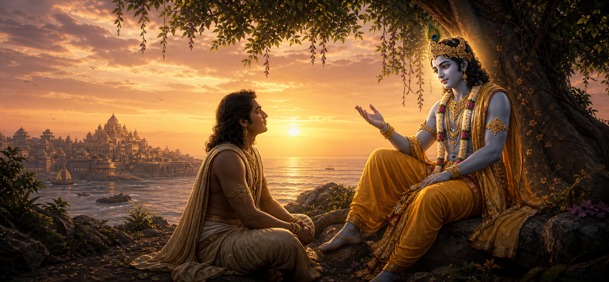
Chapter 15: The Yadavas' End and Krishna's Return to His Abode
The end of Krishna's earthly leela is solemn. The Yadavas, powerful and protected for so long, become instruments of the final burden-removal. A curse connected to Samba and the sages leads to the iron mace that becomes the seed of destruction. At Prabhasa, intoxication and destiny overtake the clan, and the Yadavas destroy one another. This is not random tragedy. In the Bhagavata's vision, the Lord withdraws the dynasty that had become too powerful for the earth after its divine purpose was fulfilled.
Balarama departs in yogic majesty, associated with the return of Ananta. Krishna sits beneath a tree, serene. The hunter Jara, mistaking the Lord's foot for a deer, releases an arrow. Krishna consoles him, grants him grace, and prepares to leave the visible world. The Lord is not conquered by the arrow. He uses even that moment to complete the leela and return to His own eternal abode.
Dwaraka is later swallowed by the sea, and Arjuna escorts the surviving women and families, though he discovers that without Krishna's visible presence his former strength no longer acts as before. This detail is spiritually piercing. The might of heroes, the glory of cities, the confidence of weapons, and the brilliance of dynasties all depend on the divine presence. When Krishna withdraws, an age closes.
Where does Krishna reside now? The scriptures say He returns to His own eternal abode, and Vaishnava traditions speak with love of Goloka, the eternal Vrindavan, where His divine play is ever fresh. He is also worshiped in Dwaraka, Mathura, Vrindavan, Puri as Jagannath, Nathdwara as Srinathji, Udupi, Pandharpur, and countless temples and homes. More inwardly, He resides wherever the Bhagavad Gita is contemplated, wherever the Bhagavata is sung, wherever the name Krishna is remembered with love, and wherever the heart chooses surrender over fear.
His eternal role is protector, teacher, beloved, and inner guide. He protects children from hidden dangers, devotees from poison, communities from storms, queens from dishonor, friends from despair, and seekers from ignorance. He does not always protect by preventing difficulty. Sometimes He protects by becoming the wisdom within difficulty.
Chapter 16: The Symbolism and Timeless Hope of Krishna Avataram
Krishna represents divine completeness. Rama shows the ideal human life governed by duty; Krishna reveals the divine life overflowing through love, intelligence, music, play, politics, and philosophy. He is not easily reduced to one role because existence itself cannot be reduced to one mood. Childhood, friendship, sacred love, war, kingship, teaching, grief, and departure all become sacred in Him.
Kamsa represents fear trying to murder the future. Putana represents false nurture. Kaliya represents poisoned consciousness. Indra's storm represents pride in status. Brahma's bewilderment represents intellectual arrogance before simple love. Shishupala represents hatred sustained despite repeated forgiveness. Duryodhana represents entitlement that refuses peace. Arjuna represents the sincere soul confused before duty. Uddhava represents the devotee learning to live after visible closeness changes into inner remembrance.
Krishna's flute is the call of the Divine. His butter theft is the Lord stealing the softened heart. His dance on Kaliya is the purification of poison. His lifting of Govardhana is the shelter of grace. His chariot reins are the mind guided by God. His Gita is the lamp of discernment. His departure is the reminder that forms pass, but the Supreme remains.
In the evolutionary rhythm of Dashavatara, Krishna is the flowering of consciousness into intimacy with the Absolute. Matsya preserves wisdom, Kurma supports effort, Varaha rescues Earth, Narasimha protects devotion, Vamana humbles pride, Parashurama corrects violent power, Rama establishes righteous conduct, and Krishna reveals the sweetness and depth of God in every relationship. After Krishna, the later avatars continue the work of guiding beings through compassion and renewal.
The hopeful message of Krishna Avataram is that the Divine meets the world at every level. When the world is imprisoned, He is born in prison. When the river is poisoned, He dances on poison. When pride storms, He lifts a mountain. When a devotee sends a letter, He comes by chariot. When a warrior collapses in confusion, He speaks the Gita. When a friend fears separation, He gives final wisdom. When an age ends, He withdraws the visible form but leaves the name, the teaching, and the path.
May Krishna's flute awaken love. May His Gita steady action. May His Govardhana hand shelter the vulnerable. May His friendship with Arjuna guide every confused heart. May His grace toward Putana, Kaliya, Rukmini, Draupadi, Uddhava, and all devotees remind us that no life is outside the reach of divine transformation. And may the light of Dashavatara assure every age that Vishnu comes again and again, not only to destroy adharma, but to teach the soul how to love the Eternal.
Buddha
Lord Vishnu's Buddha Avataram is the descent of divine compassion into an age wounded by confusion, violence, pride in ritual, and the endless ache of suffering. In the Dashavatara tradition, Buddha appears not with weapon raised, but with eyes lowered in meditation; not to conquer kingdoms, but to quiet the inner battlefield where craving, fear, and ignorance bind beings to sorrow. He is remembered in the Puranas as a form of Vishnu who redirects those hostile to dharma and turns hearts away from cruelty, and in the traditional Buddha life as Siddhartha Gautama, the Shakya prince who became the Awakened One.
This storybook honors both streams carefully. The Bhagavata Purana names Buddha among Vishnu's avataras and describes a divine purpose in the age of Kali. Vaishnava Puranic traditions also speak of the Lord appearing to restrain misuse of sacred rites and to bewilder those who opposed the devas. Traditional Buddhist accounts narrate Siddhartha's birth, renunciation, awakening at Bodh Gaya, first teaching at Sarnath, long ministry of compassion, and Mahaparinirvana at Kushinagar. Read together with reverence, these streams reveal Buddha Avataram as a sacred medicine: the Lord answering rage with stillness, violence with compassion, and blind ritual with awakened seeing.
- • The Puranic Buddha avatar protects dharma through compassion, restraint, and the redirection of harmful ritual pride.
- • Siddhartha's four sights reveal the universality of aging, illness, death, and the need for liberation.
- • The Middle Path avoids both indulgence and self-torture, turning discipline into wisdom rather than violence against the body.
- • The Four Noble Truths and Noble Eightfold Path reveal suffering, its cause, its cessation, and the way of awakening.
- • Buddha's "rage" is best understood as the world's violence and inner turmoil pacified by bodhi, karuna, and equanimity.
- • In the Dashavatara rhythm, Buddha shows that divine protection can arrive as silence, non-harm, and clear seeing.
Chapter 1: The Burdened Age and the Puranic Purpose
Buddha Avataram begins in a different mood from the avatars of weapon, roar, and royal war. In earlier forms, Vishnu lifted the Earth, burst from the pillar, humbled Bali, corrected violent kings, and walked as Rama through the full dignity of human duty. In Krishna, the Lord filled the world with sweetness, wisdom, and strategy. In Buddha, the divine response becomes inward: a still flame placed before a world fevered by craving and violence.
The Bhagavata Purana lists Buddha among the avataras of Vishnu and describes his coming in the age of Kali, connected with the region of Kikata and with a purpose that involves bewildering those hostile to the devas. Other Vaishnava Puranic traditions present a similar theological theme: the Lord appears in a form that restrains beings who misuse sacred knowledge and pulls them away from violent sacrificial excess. This must be understood carefully. The Puranic Buddha is not a casual dismissal of wisdom; he is a divine strategy within a cosmic drama where adharma can wear the robes of religion.
The tyranny in this avatar is therefore subtle. There is no single Hiranyakashipu or Ravana with a boon standing in the doorway. The tyrants are ignorance, cruelty, pride in ritual, and the restless hunger that keeps beings circling through suffering. The "boons" are not granted to one demon; they are the mistaken protections that ego gives itself: status, argument, power, habit, and the belief that outward performance can replace inner purity.
This is why Buddha Avataram is linked in spirit to Narasimha yet moves in the opposite register. Narasimha's roar protects Prahlada from visible persecution. Buddha's silence protects beings from invisible bondage. Narasimha tears apart the arrogance that says God is nowhere. Buddha dissolves the ignorance that says peace can be found through craving, harm, and delusion. Both are compassion; one burns like lightning, the other cools like moonlight.
The avatara also reveals that divine timing is merciful. Before the age reaches the final severity associated with Kalki, the Lord offers a path of restraint. He gives beings the chance to awaken voluntarily, to lay down cruelty before correction arrives, and to discover that the deepest enemy is not outside the gate but inside the unexamined mind. Buddha is therefore not an interruption in the Dashavatara; he is the compassionate pause that asks creation to remember peace.
That pause is itself protection. It gives the violent time to soften, the grieving time to understand, the proud time to bow, and the sincere seeker time to recognize that liberation begins where honesty begins.
Chapter 2: Two Sacred Lenses: Vishnu's Avatar and Siddhartha's Life
To tell Buddha Avataram faithfully, CosmicTrotter must honor two sacred lenses without forcing them into a careless sameness. The Vaishnava Puranas remember Buddha as an avatara of Vishnu with a cosmic purpose inside the unfolding ages. Traditional Buddhist biographies remember Siddhartha Gautama, born among the Shakyas, who renounced royal life, attained enlightenment, taught the Dharma, and entered Mahaparinirvana. The popular Dashavatara tradition often identifies these streams devotionally, while scholarly and sectarian traditions may describe them with different emphases.
Scriptural care is important here: the Puranic Buddha and the traditional Shakyamuni biography are not always narrated with identical names, places, and purposes. This story therefore names Puranic claims as Puranic, and traditional life events as traditional accounts. Symbolic links to Narasimha, Rama, Krishna, and Kalki are devotional readings of the Dashavatara sequence, not separate incidents claimed as Purana episodes.
The story that follows therefore speaks reverently: in the Dashavatara frame, Buddha is Vishnu's compassionate descent; in the historical-devotional Buddha frame, he is Siddhartha, the Awakened One. The shared moral radiance is unmistakable. Both streams remember a figure who appears when beings are lost in suffering, who turns attention from outward domination to inward release, and who teaches non-harm, discipline, compassion, and awakening.
Unlike Ravana or Kamsa, Buddha's story is not organized around defeating a tyrant in battle. It is organized around seeing. He sees old age. He sees sickness. He sees death. He sees the possibility of renunciation. He sees craving. He sees the end of craving. He sees the path. In that seeing, a world changes.
In the Dashavatara rhythm, this is a profound evolution. The Lord who once saved the Vedas from the flood now points seekers toward direct realization. The Lord who once raised the Earth now raises awareness. The Lord who once wielded axe and bow now lays down weapons and teaches the victory of awakened compassion.
Chapter 3: Queen Maya's Dream and the Auspicious Birth
Traditional Buddha accounts begin with auspicious signs. Queen Maya, wife of King Shuddhodana of the Shakya clan, dreams of a radiant white elephant entering her side, a symbol of purity, royal destiny, and spiritual greatness. The dream is not narrated as ordinary sleep; it is the cosmos whispering that a great being is descending. The palace is still, but destiny has already crossed its threshold.
When the time of birth approaches, Maya travels toward her parental home and stops in the grove of Lumbini. There, beneath the trees, Siddhartha is born. The traditions remember signs of wonder surrounding his birth, and sages interpret the child's destiny: he may become a universal monarch if he remains in the world, or a supreme spiritual teacher if he renounces it. King Shuddhodana, loving his son and attached to royal hopes, wishes to protect him from the sorrow that might turn his mind toward renunciation.
The child's name, Siddhartha, means one whose aim is accomplished. Yet the world does not know what that aim will be. The palace hopes for a king. The devas know a teacher is coming. The Puranic eye sees Vishnu's compassionate purpose unfolding beneath human events.
This birth is dramatic in a quiet way. There is no battlefield, no pillar splitting, no ocean roaring. Instead, there is a mother, a dream, a grove, a child, and a prophecy. Buddha Avataram begins by showing that the greatest revolutions may enter the world as tenderness.
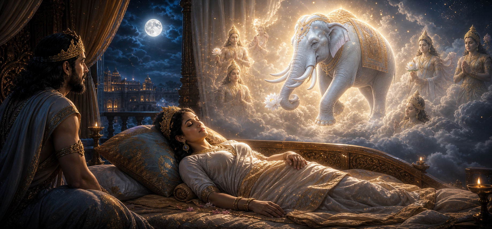
Chapter 4: Palace Splendor and the Four Sights
Prince Siddhartha grows within the comfort of the Shakya palace. His father shields him from harshness, hoping that pleasure, youth, music, gardens, and royal responsibility will keep him turned toward worldly rule. Siddhartha marries Yashodhara, and their son Rahula is born. Yet no palace wall can permanently hide the truth of existence. The soul that has come to awaken the world cannot remain asleep in luxury.
On journeys outside the palace, Siddhartha encounters the four sights. He sees an old man and realizes that youth fades. He sees a sick person and realizes that the body is fragile. He sees a dead body and realizes that every embodied life is touched by death. Then he sees a calm renunciate, a seeker who has turned from grasping toward liberation. These sights do not merely disturb him; they open him.
The four sights are not pessimism. They are the end of denial. Siddhartha's compassion is born from refusing to look away. He does not seek awakening to escape others; he seeks it because all beings are caught in the same net of aging, illness, death, and craving. The palace can give pleasure, but it cannot answer impermanence.
In the Puranic frame, this is the beginning of the avatar's medicine. A world drunk on outer acts must learn to see inward truth. A mind that sees clearly can no longer worship cruelty as religion, power as security, or desire as happiness.
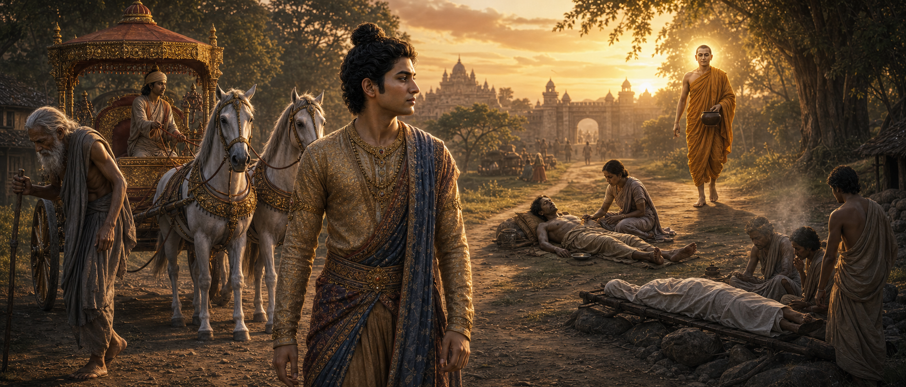
Chapter 5: The Great Renunciation
The night of renunciation is one of the most moving scenes in sacred biography. Siddhartha looks upon Yashodhara and the newborn Rahula, not with coldness, but with a heart torn between love and the universal sorrow he has seen. He understands that if he remains only a prince, he may protect one kingdom for a time. If he discovers the path beyond suffering, he may serve beings across ages.
With Channa and the horse Kanthaka, Siddhartha leaves the palace under the cover of night. Traditional accounts say the devas quiet the sound of the horse's hooves so the city does not wake. This detail is beautiful because renunciation here is not rebellion for its own sake. It is a sacred crossing. The prince moves from guarded pleasure into the open uncertainty of the seeker.
At the edge of the forest, Siddhartha cuts his hair, removes royal ornaments, and exchanges palace identity for the life of a mendicant. The outer transformation mirrors the inner one. He is no longer defined by inheritance, beauty, youth, or power. He becomes a question walking through the world: What is the end of suffering? What is freedom? What can be trusted when all conditioned things pass?
In the Dashavatara rhythm, this renunciation is a new kind of heroism. Matsya saves scripture, Varaha lifts the Earth, Narasimha tears pride apart, Rama walks into exile to keep a promise, and Buddha leaves luxury to search for liberation. The battlefield has moved inside the human heart.
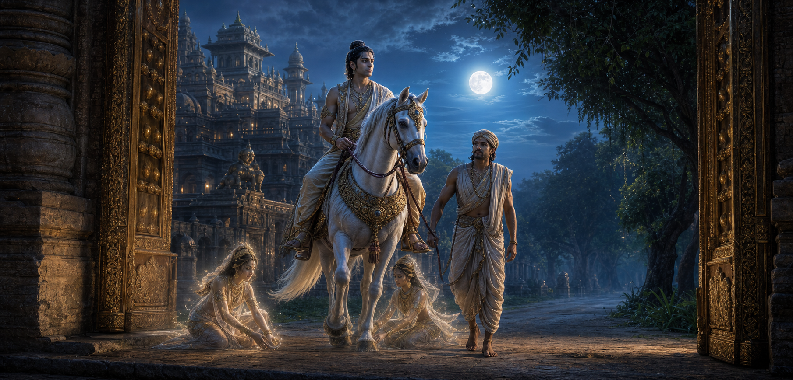
Chapter 6: Teachers, Austerity, and the Middle Path
Siddhartha first studies under renowned meditation teachers, traditionally remembered as Alara Kalama and Uddaka Ramaputta. He masters refined states of concentration, but realizes that even elevated meditative absorption does not fully end the roots of suffering. Respecting the teachers yet continuing onward, he refuses to confuse temporary attainment with final awakening.
He then practices severe austerity with five companions. For years he restrains the body almost to the point of death. His frame becomes thin, his strength nearly gone, and still the final truth does not open. This is one of the most important corrections in the Buddha story. If indulgence binds, self-torture also binds. Violence against the body is not wisdom.
At last Siddhartha accepts nourishment from Sujata, traditionally remembered as a village woman who offers milk-rice. His five companions think he has abandoned the quest, but he has discovered the Middle Path. The body is not to be worshiped as the self, nor punished as the enemy. It is a vessel to be steadied, purified, and used for awakening.
This Middle Path is the pacification of a subtle rage. The seeker's intensity had turned against his own body; now wisdom cools that violence. Buddha Avataram teaches that dharma is not extremism. The string must be tuned: too loose and it will not sound, too tight and it will break.
Chapter 7: Beneath the Bodhi Tree and the Assault of Mara
Siddhartha comes to Bodh Gaya and sits beneath the pipal tree that will be remembered as the Bodhi tree. He makes a solemn resolve not to rise until awakening is attained. The night gathers around him. The entire arc of human restlessness seems to arrive at that seat: fear, memory, desire, pride, doubt, and the whisper that liberation is impossible.
Mara appears in traditional accounts as the force of temptation, death, and delusion. Mara's armies, storms, and daughters are not merely external demons. They are the inner movements that shake the seeker: terror, longing, distraction, vanity, and despair. Siddhartha remains still. When Mara challenges his right to awaken, Siddhartha touches the earth. The earth becomes witness.
This is the answer to the user's question of Buddha's rage. Buddha does not burn with personal anger. The rage in this avatar is the storm of samsara itself: violence, craving, self-torment, ritual pride, and the panic of ego before truth. It is pacified not by counter-violence but by immovable awareness. The hand touches the earth, and the storm loses its authority.
Where Narasimha's claws answer the arrogance of Hiranyakashipu, Buddha's stillness answers the arrogance of Mara. Both moments are divine protection. One protects a child devotee from an outer tyrant. The other protects all beings by revealing that inner tyranny can be seen through and released.
Chapter 8: Awakening at Dawn
Through the watches of the night, Siddhartha's insight deepens. Traditional accounts describe knowledge of past lives, understanding of the arising and passing of beings according to karma, and the direct realization of the ending of the taints that bind consciousness. At dawn, as the morning star shines, Siddhartha becomes the Buddha, the Awakened One.
He realizes the Four Noble Truths: suffering exists; suffering has a cause in craving, ignorance, and clinging; suffering can cease; and there is a path leading to that cessation. That path is the Noble Eightfold Path: right view, intention, speech, action, livelihood, effort, mindfulness, and concentration. These are not abstract doctrines alone. They are a complete discipline of seeing, speaking, living, working, practicing, and awakening.
From the Vaishnava perspective, this moment can be contemplated as Vishnu's compassion assuming the form of wisdom. The Lord does not simply remove suffering from outside; He reveals the law by which suffering is made and unmade. Dharma becomes diagnosis, medicine, and path.
The Bodhi tree therefore stands like a silent temple. No empire is conquered, yet an empire of ignorance is shaken. No enemy bleeds, yet Mara is defeated. No scripture is shouted, yet a wheel of teaching is about to turn across centuries.
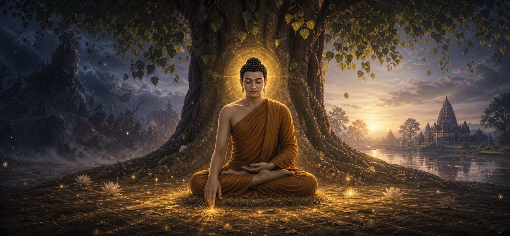
Chapter 9: The First Sermon at Sarnath
After awakening, Buddha at first contemplates the subtlety of the truth he has realized. The Dharma is deep, quiet, and difficult for minds caught in craving. Yet compassion moves him to teach. He goes to the Deer Park at Sarnath, near Varanasi, where his five former companions are staying. They had left him when he accepted nourishment, believing he had abandoned the quest. Now they see a serenity in him that cannot be explained by weakness.
There Buddha gives the first teaching, remembered as the turning of the wheel of Dharma. He teaches the Middle Path, avoiding both indulgence and self-mortification. He teaches the Four Noble Truths and the Noble Eightfold Path. Kondanna, one of the five ascetics, understands, and the Sangha begins.
The image of the wheel is powerful. A wheel turns, travels, and carries beings forward. Buddha's teaching is not meant to remain a private ecstasy beneath a tree. It must move through speech, practice, community, discipline, and compassion. The silence of Bodh Gaya becomes the teaching of Sarnath.
For the Dashavatara, this is a remarkable moment. Vishnu's protection does not appear as an army but as a path. The avatar offers no threat, yet a wheel begins turning that will cross kingdoms, languages, mountains, and centuries. Dharma becomes portable: a way of seeing, living, speaking, remembering, and awakening.
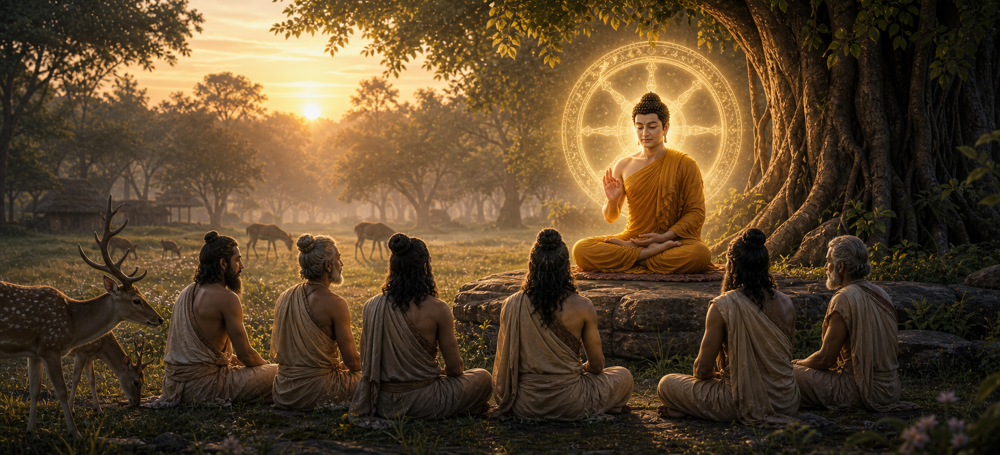
Chapter 10: The Sangha and the Compassionate Ministry
For decades, Buddha travels across northern India teaching kings, householders, merchants, farmers, monks, nuns, skeptics, and grieving families. His ministry is not confined to one class or one temperament. He speaks according to the capacity of the listener. To some he teaches generosity. To some, discipline. To some, meditation. To some, impermanence. To some, silence.
King Bimbisara of Magadha becomes an important supporter. Anathapindika, a great lay devotee, offers Jetavana monastery. Sariputta and Moggallana become chief disciples. Ananda becomes the beloved attendant, famed for memory and devotion. Mahapajapati Gotami, Buddha's foster mother, seeks ordination, and the community of nuns arises in the traditional accounts. The Dharma takes form as Sangha, a community walking the path together.
The Sangha matters because awakening is not only an individual flame. It needs protection, discipline, memory, and shared practice. The Buddha teaches precepts against killing, stealing, sexual misconduct, false speech, and intoxication. These are not arbitrary prohibitions. They are ways to stop feeding the forces that cloud the mind and harm beings.
The spiritual mood is gentle but uncompromising. Compassion does not mean carelessness. Non-harm requires vigilance. Mindfulness requires training. Speech must be purified. Livelihood must be examined. Desire must be seen honestly. Buddha's path is pleasant in its compassion and rigorous in its clarity.
Chapter 11: Hidden Stories of Grace: Angulimala, Kisa Gotami, and the Wounded World
The Buddha traditions preserve many stories that reveal the living texture of compassion. Angulimala, feared as a violent bandit, meets Buddha and is transformed. The Awakened One does not flatter his crimes, but neither does he deny his capacity to turn. Angulimala becomes a monk, showing that even terrible momentum can be interrupted by awakened presence and sincere repentance.
Kisa Gotami, grieving the death of her child, asks Buddha to restore him. He tells her to bring mustard seed from a house untouched by death. She searches and discovers that every family has known loss. Her private grief opens into universal understanding. Buddha does not erase death by miracle; he teaches a wisdom that can hold sorrow without being destroyed by it.
These stories are not ornamental. They show the avatar's healing method. Narasimha protects Prahlada by destroying the persecutor. Rama honors Jatayu by performing rites. Krishna protects Draupadi when the court fails. Buddha protects by teaching beings to see the roots of violence and grief. He does not merely rescue from pain; he reveals how pain can become compassion and awakening.
In this light, Buddha Avataram becomes deeply relevant across time. A world filled with anger needs more than victory over enemies. It needs the transmutation of anger. It needs the courage to see suffering without turning away, and the discipline to stop adding to it.
Chapter 12: The Puranic Meaning of Non-Harm and the Delusion of the Proud
The Vaishnava Puranic account of Buddha often emphasizes a difficult theme: the Lord appears to bewilder those hostile to the devas. This can sound strange unless read within the larger Puranic world, where asuras and arrogant beings may misuse sacred rites, mantras, and sacrifices for power. When religion becomes a weapon for cruelty, divine compassion may arrive as disruption.
In this frame, Buddha's teaching restrains harmful ritualism and exposes the emptiness of outer religion without inner purity. The point is not that truth is destroyed, but that false possession of truth is broken. Those who cling to power while wearing the language of holiness are led away from the very weapons they misuse. The avatar protects dharma by preventing adharma from hiding inside dharma's clothing.
This is where Buddha connects to the user's requested theme of tyranny and boons. In this avatar, tyranny is not only a king; it is the mind's claim that violence is sacred because it is authorized by pride. The boon is the ego's confidence that ritual status makes it untouchable. Buddha's compassion dissolves that false protection. He teaches that conduct, intention, wisdom, and non-harm matter more than display.
The teaching of ahimsa, non-harm, is therefore not weakness. It is spiritual strength refined to the point where domination is no longer mistaken for power. In the evolutionary arc of Dashavatara, Buddha shows that the highest conquest may be conquest over cruelty itself.
This also clarifies why the Buddha avatar can appear puzzling beside more visibly heroic forms. In many stories, adharma is easy to identify because it carries a weapon or issues a cruel command. In Buddha's age, adharma may sit beside a sacred fire and call itself holy while the heart remains untouched by compassion. Vishnu's answer is subtle because the disease is subtle. The Lord comes as a teacher who removes the inner permission for harm.
The Puranic idea of bewilderment is therefore not random deception. It is divine counter-strategy against beings who have already separated sacred knowledge from sacred conduct. When the outer shell of religion is being used to strengthen ego, the avatar loosens that shell so the deeper law can reassert itself. Buddha's compassion does not abolish dharma; it protects dharma from becoming a mask.
Chapter 13: Final Journey and Mahaparinirvana
As Buddha's earthly life nears its end, the traditional accounts show him still teaching, walking, advising, and comforting. His body ages, but the clarity of awakening does not dim. This is important: Buddha does not deny impermanence by escaping it outwardly. He embodies the teaching through the aging of his own form. The Awakened One also walks through the law of conditioned existence.
Near Kushinagar, in a grove of sal trees, Buddha prepares for Mahaparinirvana. Ananda grieves, and the disciples gather. The scene is not one of defeat. It is the completion of a teaching-life. Buddha reminds his followers of impermanence and the need for diligent practice. The body will pass, but the Dharma remains as guide.
Mahaparinirvana means the final passing beyond the cycle of birth and death, as understood in Buddhist tradition. In the Vaishnava Dashavatara frame, this can be contemplated as the withdrawal of the avatar's visible work after the mission of compassion has been set in motion. The Lord's form appears for a purpose, fulfills that purpose, and leaves behind a path powerful enough to continue moving through human hearts.
The sal blossoms fall like quiet offerings. There is no thunder, no celestial weapon, no final duel. Buddha Avataram closes in peace. The avatar who came to pacify violence departs without violence. The final teaching is lived as completely as it is spoken: all conditioned things pass; awaken with diligence.
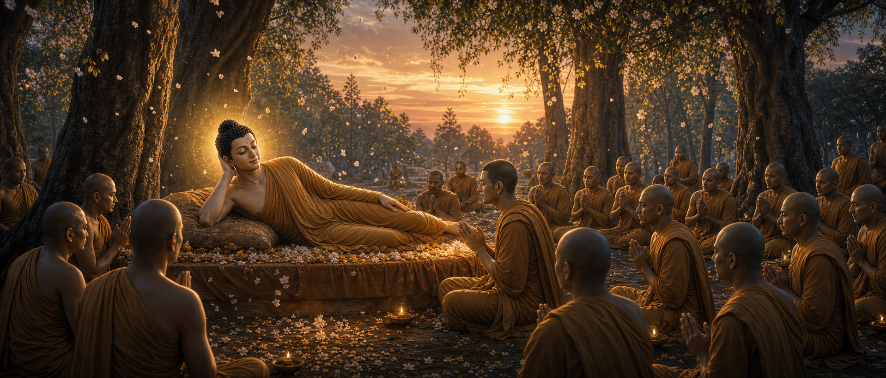
Chapter 14: Where Buddha Resides Now
Where does Buddha reside now? Traditional Buddhist language speaks carefully, because the awakened one is not confined to ordinary categories after final liberation. The Dharma-body, the living truth of awakening, is encountered through the teaching, the Sangha, meditation, ethical conduct, and the direct realization of impermanence, non-clinging, and compassion. The Buddha is present wherever the Dharma is practiced sincerely.
In the sacred geography of the world, his memory shines through Lumbini, Bodh Gaya, Sarnath, Kushinagar, Rajgir, Shravasti, Nalanda, and many other holy places. The Bodhi tree becomes a cosmic axis of awakening. Deer Park becomes the place where the wheel first turns. Kushinagar becomes the grove of final peace. These places are not merely historical markers; they are spiritual reminders that a human life can become transparent to truth.
In the Vaishnava imagination, Buddha as Vishnu's avatar returns to the Lord's eternal mystery after completing the work of compassion. He also remains in the world as a protective principle: whenever religion becomes cruel, whenever pride hides behind sacred language, whenever beings suffer because no one will look directly at suffering, Buddha Avataram is remembered as the divine medicine of non-harm and awakened seeing.
His eternal role is therefore protector through pacification. Narasimha protects by terrifying the tyrant. Rama protects by upholding duty. Krishna protects by wisdom, play, and strategy. Buddha protects by interrupting the cycle of harm at its root. He asks the mind to stop, see, breathe, understand, and release.
He also resides in the practices that continue his work: in a hand that refuses to kill, in speech that refuses to wound, in a mind that notices anger before obeying it, in a community that feeds the hungry without pride, and in the quiet courage to sit with suffering until wisdom appears. Sacred presence is not only location. It is transformation.
Chapter 15: Hidden Meanings and Untold Lights
The hidden stories of Buddha Avataram are not "secret adventures" added to scripture. They are deeper meanings already present within the scriptural and traditional accounts. Queen Maya's dream means that awakening is conceived in purity before it becomes visible. The four sights mean that denial must end before wisdom begins. The Great Renunciation means that love for the world can require leaving comfort, not because the world is hated, but because beings need a deeper gift.
Sujata's milk-rice means that nourishment can be sacred when it supports awakening. The failure of extreme austerity means that violence toward oneself is still violence. The earth-touching gesture means that truth does not need ego's witness; reality itself supports the awakened mind. Mara's defeat means that temptation loses power when it is seen without fear. Sarnath means that private realization must become compassionate teaching.
The Sangha means that dharma needs community. Angulimala means that even a life gone terribly wrong can turn. Kisa Gotami means that grief can open into universal wisdom. Mahaparinirvana means that impermanence is not a doctrine for others; even the teacher's visible body becomes part of the teaching.
Another hidden light is the dignity Buddha gives to direct experience. He does not ask seekers to imitate holiness while remaining inwardly asleep. He asks them to look carefully: at breath, sensation, intention, impermanence, and the arising of craving. This careful seeing is itself a sacred discipline. It prevents spirituality from becoming performance and returns the seeker to honest transformation.
In relation to Narasimha, Buddha reveals a complementary mystery. Prahlada is saved by unwavering devotion in the face of persecution. The beings addressed by Buddha are saved by awakening from ignorance, cruelty, and craving. Narasimha's form says, "No boon can protect adharma from God." Buddha's form says, "No craving can protect the mind from truth." Both are fierce in compassion; one outwardly, one inwardly.
In relation to Vishnu's wider avataric work, Buddha stands as the great pause before Kalki. Before the final correction of an age, the Lord offers non-violence, introspection, compassion, and the possibility of awakening. If beings can be turned by wisdom, the sword need not be lifted. Buddha is therefore a mercy before severity, a lamp before the storm.
Chapter 16: The Symbolism and Hope of Buddha Avataram
Buddha represents the divine power of awakened compassion. His empty bowl is humility. His robe is simplicity. His lowered gaze is inward seeing. His earth-touching hand is unshakable truth. The Bodhi tree is the stillness in which ignorance ends. The Dharma wheel is wisdom moving through the world. The deer at Sarnath are gentleness gathered around teaching. The sal trees of Kushinagar are impermanence blossoming into peace.
For modern times, Buddha Avataram is painfully relevant. Humanity still suffers from craving, anger, distraction, status, ideological pride, and the temptation to make violence seem righteous. Buddha does not ask us to become indifferent. He asks us to become awake. Compassion is not numbness; it is the courage to see suffering clearly and respond without hatred.
His path is also a healing answer to spiritual exhaustion. Many people know what is right yet feel scattered, reactive, or afraid. Buddha's discipline begins where a person actually stands: with breath, conduct, attention, and one honest moment of awareness. The cosmic becomes practical. Liberation begins not in some distant heaven, but in the next intention purified by wisdom.
The evolutionary purpose of the Dashavatara becomes luminous here. Matsya preserves wisdom. Kurma supports the churning. Varaha lifts the Earth. Narasimha protects devotion. Vamana humbles pride. Parashurama corrects corrupted power. Rama sanctifies duty. Krishna reveals divine intimacy and wisdom. Buddha then turns the light inward, showing that the next battlefield is the mind itself. Before Kalki's final renewal, Buddha offers the possibility that beings may transform through insight.
The hopeful message of Buddha Avataram is that peace is not weakness, and stillness is not emptiness. A silent seated figure beneath a tree can shake the foundations of cruelty. A single clear teaching can outlive empires. A path of right view, speech, action, livelihood, effort, mindfulness, and concentration can turn ordinary life into sacred practice.
Short reading gives one jewel: do no harm. Deep reading reveals an entire cosmos behind that jewel. Non-harm is not only refusing physical violence; it is purifying intention, speech, economy, memory, and desire. It is learning how suffering is manufactured and how it may cease. This is why Buddha's gentleness is not small. It reaches into the machinery of samsara and loosens the wheel from within.
May Buddha's compassion soften the world. May his clarity dissolve the pride that hides inside religion. May his Middle Path heal the extremes of indulgence and self-harm. May his Dharma wheel continue to turn in every heart willing to see clearly. And may the light of Dashavatara remind every age that Vishnu protects creation not only by roaring, fighting, measuring, and ruling, but also by sitting in perfect stillness until ignorance itself grows quiet.
Kalki — The Future Warrior
At the edge of the final age, when the world weighs heavy with falsehood and the sacred flame of dharma flickers in only a few hearts, Lord Vishnu will appear as Kalki, the tenth and last avatar. This luminous story is drawn from the Bhagavata Purana (Canto 12), the Vishnu Purana, the Kalki Purana, and other authentic Hindu scriptures. It is told here with sacred epic grace, deeper spiritual resonance, and the hidden truths that rise from the oldest rishi traditions.
Kalki is the warrior who arrives not out of rage alone, but out of the Divine’s unending promise: when the age of Kali has reached its nadir, the Lord will restore righteousness, protect the few remaining seekers, and prepare the world to blossom again. His descent is the final hinge of the Dashavatara, the culmination of a long history of protection, correction, and renewal.
- • Kalki arrives when the world is steeped in Kali Yuga’s darkness, but the Divine light still waits in hidden hearts.
- • Shambhala is a hidden refuge and a living prophecy, a place of sages, pure families, and secret preparation.
- • Narasimha’s righteous fury and Parashurama’s disciplined correction are the spiritual lineage of Kalki’s mission.
- • The boons of Kali make adharma subtle and pervasive; Kalki’s work is to uproot hidden corruption as much as visible tyranny.
- • After the battle, Kalki’s rage is pacified by devotion, the voices of sages, and the same mercy that guides all avatars.
- • Kalki already exists in waiting — a protector in hidden places, a guardian of the promise that dharma will return.
Chapter 1: The Twilight of Kali Yuga — When the World Calls for Kalki
The Bhagavata Purana and Vishnu Purana paint a vivid, sorrowful picture of the end of Kali Yuga. Kings become thieves, priests recite mantras without faith, and the record of dharma decays. The world is filled with greed, falsehood, hypocrisy, and the abandonment of yajna. The Earth herself groans as Bhudevi bears the burden of countless sins. The Vedas, once living scripture, are nearly forgotten in the mouths of men.
This is the age when adharma is not only loud in courts and cities but hidden in the smallest acts of life. Kali, the demon who embodies this age, is granted boons that allow him to exist in impure places: in the dust of the marketplace, in the instruments of thieves, in places where hospitality is denied, and in the hearts of those who choose falsehood. His presence makes the age corrosive from within.
When the world reaches this nadir, the Divine promise awakens. The Lord will appear to restore dharma, not only by uprooting sinful kings but by cleansing the hidden rot of the age. This is why Kalki’s story matters for both short and deep readers: it is the tale of the last restoration, the final reweaving of the world’s moral fabric.
- • A twilight city where temple lights dim and shadows of false kings stretch across cracked stone.
- • Kali slipping through market dust into the eyes of dishonest merchants, showing the age’s hidden corruption.
Chapter 2: Shambhala — The Hidden Village and the Secret Geography
Shambhala is the sacred refuge where Kalki is born and where the final promise is preserved. The Kalki Purana describes it as a hidden village, a pure land removed from the corrupt world. It is the home of sages, Vedic families, and the small, sacred flame of dharma that endures when the outside world grows dark.
Although the scriptures do not fix its precise geography, rishi commentaries place Shambhala beyond the northern ranges and the lost course of the sacred Saraswati, in a valley where clear springs flow and the night sky remains pure. Some traditions describe it as an upper Himalayan enclosure hidden by mists and prayer flags; others see it as a spiritual refuge accessible only through purity of intention. In all accounts, it is a place where the sound of mantras lingers like a river and the air itself feels sanctified.
Vishnuyasha and Sumati, the parents of Kalki, live there in simple devotion. They tend sacred fires, offer daily prayers, and preserve ancient mantras. Their son grows up under the guidance of learned sages who train him in the Vedas, in martial skill, and in the discipline of humility that every avatar must carry. Kalki learns that the warrior’s greatest strength is not only the sword, but the steady heart that chooses justice over vengeance.
- • A hidden valley with white pines, crystal streams, and a luminous village centered around a temple fire.
- • A young Kalki receiving blessings from sages beneath a canopy of stars in a sacred courtyard.
Chapter 3: The Descent of Kalki and the Boons of Kali
The Kalki Purana tells that when the age is finally ripe, Kalki is born with the marks of Vishnu and the gaze of a protector. He receives the white horse Devadatta and a sword blazing like the morning sun. The devas themselves witness his birth and rejoice, for the promise of the last age is being fulfilled.
At the same time, the boons of Kali become dangerous revelations. Kali’s ability to dwell in impure places means that adharma spreads not only by force but by subtle degradation. He can enter the womb of a woman who profits from falsehood, the vessel of a thief, the dust of a palace, and even the bones of the dead. This hidden story, present in the Purana tradition, explains why the final avatar must act both outwardly and inwardly. The age’s evil is not simply visible tyranny; it is the quiet poisoning of society’s roots.
Thus, Kalki’s mission is twofold. He is the visible warrior who destroys corrupt kings and armies. He is also the invisible purifier who pulls the age’s secret poison out from its hiding places. His sword is the sharpness of discrimination that separates dharma from adharma wherever it hides.
Chapter 4: The Hidden Lineage — Parashurama, Narasimha, and the Training of Kalki
Kalki’s strength is rooted in an ancient lineage of divine correction. Before he rides out, he seeks Parashurama, the immortal Brahmin-Kshatriya warrior who renounced his own crown twenty-one times and then retreated to Mahendra mountain in meditation. Parashurama’s role is vital in the Kalki Purana: he is the guru who passes on the knowledge of weapons, the Vedas, and the subtle art of using fury without falling into hatred.
This connection is more than martial training. Parashurama embodies the principle that power must be guided by dharma. He is the one who taught Bhishma, Drona, and Karna in ancient times, and now he stands as the mentor of the final avatar. Kalki therefore inherits the strength of a thousand warriors, tempered by the discipline of a sage.
Narasimha’s influence is also unmistakable in Kalki’s lineage. Narasimha’s story is one of righteous wrath and protection: a form that appeared precisely to fulfill the conditions of Hiranyakashipu’s boon, neither man nor beast, neither day nor night, neither inside nor outside. Kalki carries this same sacred logic. He is the final avatar that appears precisely when the conditions of Kali’s boons have made the world unbearable. His wrath becomes the protective shield of the faithful and the corrective fire for the wicked.
- • Kalki meeting Parashurama on a misty mountain ledge, with divine weapons laid before them.
- • A fresco-like echo of Narasimha in the background, suggesting the spiritual ancestor of righteous fury.
Chapter 5: The Special Focus on Narasimha — Fury That Protects Devotion
Narasimha is the avatar of blazing protection. His arrival destroyed the demon Hiranyakashipu, who had become arrogant with boons that made him invincible by normal means. The hidden teaching in Narasimha’s story is that the Lord honors both the letter of cosmic law and the devotion of a pure heart. He could not kill the demon by day or night, by man or beast, inside or outside; so he became the precise doorway of correction.
That same principle guides Kalki. Kali’s boons allow him to dwell in the impure and the hidden. Kalki therefore does not simply charge into battle with blunt strength. He becomes the precise instrument of dharma, appearing at the moment and in the manner required to restore the cosmic balance. His fury is not a blind explosion; it is the focused flame of a protector.
The hidden story from the scriptures is that when Narasimha’s rage was complete, it was the devotion of Prahlada that softened the Lord. In parallel, Kalki’s rage too is destined to be pacified by the voices of sages and the cries of the righteous. His anger is a function of justice, not revenge. It protects the good and corrects the corrupt, just as Narasimha’s did when he emerged to protect his devotee.
Chapter 6: The Dramatic Appearance of Kalki — Sword of Light, Horse of Purity
The Kalki Purana describes the moment of Kalki’s arrival with a forceful intensity. The heavens tremble. Celestial omens appear in the skies. The earth quakes as if the final age itself is giving birth. From Shambhala comes the white horse Devadatta, shining brighter than a thousand lamps. Kalki mounts him, and his sword blazes like the midday sun.
He rides swiftly across the earth. People who have held to dharma see him as a guardian angel. Those who have embraced falsehood see a terrifying storm. His horse’s hooves strike like thunder, and his sword cuts through the armies of corrupt kings, the barbarian hordes, and the hidden hosts of Kali. The Puranas say that he will annihilate millions of the wicked and reinstate the proper order of varnas and ashramas.
But the deeper story is that Kalki’s true victory is not only the defeat of visible enemies. It is the restoration of the conditions for dharma to flourish again. It is the protection of the righteous, the preservation of the Vedas, and the creation of a fertile ground for the new Satya Yuga.
Chapter 7: How Kalki’s Rage Is Pacified
The scriptures make it clear that the Divine warrior’s rage does not remain forever. After the final battle, Kalki’s fury is soothed by the presence of sages, the faithful, and the same devotion that once calmed Narasimha. The Kalki Purana narrates that the sages ask him to lay down his sword and to allow the world to breathe. His anger melts into sorrow for the suffering that necessitated such a descent.
His pacification is the most important part of his story. It teaches that righteous anger has a beginning and an end. Its aim is correction, not domination. Once the age has been cleansed, Kalki returns to the posture of the watchful guardian. He does not remain a warrior unleashed. He becomes, instead, the protector of the new order.
In this way, Kalki embodies the highest teaching of the Dashavatara: force without compassion is incomplete. The Lord’s might must always be balanced by mercy, and the end of battle must bring the birth of peace.
Chapter 8: Where Kalki Resides Now and His Eternal Role
Beyond the battle, Kalki continues to exist as a hidden guardian. The Kalki Purana and rishi traditions state that he resides in Shambhala even before the end of Kali Yuga. He sits in meditation, surrounded by the sacred fires and the scriptures of the ages. Some sages say his dwelling is near Mahendragiri, the mountain of Parashurama, where the air is thick with tapasya and the earth is kept safe from corruption.
From this hidden abode, Kalki surveys the world. He is like a watchman on a distant hill, aware of the sorrows and prayers of the faithful. When the time ripens, he will ride forth. Until then, he remains a silent promise, a protective presence enfolded in the same divine consciousness that sustains the Vedas.
There are even scriptural hints that Kalki can appear in the form of an ascetic to test the hearts of those who seek dharma. This is a hidden, esoteric story: the Lord’s presence is veiled until the world is ready. The righteous may not always know him by sight, but they feel his protection in the preservation of sacred knowledge and the quiet continuity of the spiritual path.
Chapter 9: The Evolutionary Purpose of Kalki in the Dashavatara
Kalki is the final expression of an evolutionary arc that begins with Matsya and ends with the restoration of Satya Yuga. Each avatar has a purpose:
- • Matsya preserves knowledge through the flood, safeguarding the Vedas.
- • Kurma supports the churning of truth and poison.
- • Varaha lifts the Earth from the depths of ignorance.
- • Narasimha protects devotion and destroys tyranny at the threshold.
- • Vamana humbles pride and restores cosmic measure.
- • Parashurama corrects corrupt power and teaches disciplined renunciation.
- • Rama models righteous leadership and duty.
- • Krishna reveals the inner law of the self and the path of loving surrender.
- • Buddha offers mercy, introspection, and the inward turn of awakening.
- • Kalki ensures the final restoration so the cycle of ages may begin again.
In this sequence, Kalki is not a departure from the earlier avatars. He is their fulfillment. He completes the work of saving the world through knowledge, support, protection, correction, duty, wisdom, and mercy. His fierce arrival is the last act in a divine story of evolution toward the greatest possible renewal.
Chapter 10: The Hopeful Conclusion — The Timeless Message of Dashavatara
As the story of Kalki draws to its conclusion, the deepest message of the Dashavatara becomes clear: no age is without remedy when the Divine is present. Even in Kali Yuga, the spark of dharma remains in the hidden hearts of the righteous. The arrival of Kalki is a promise that the cosmos is guided, that the cycle of creation is preserved, and that the Lord will intervene when the world can no longer sustain itself in falsehood.
This story is both a warning and a comfort. It warns us that adharma can become subtle and pervasive, not only through great tyrants but through the quiet compromises of ordinary life. It comforts us by reminding us that the Divine never forgets the good. Kalki’s presence in Shambhala, his hidden guardianship, and his final appearance to cleanse the age assure us that light always returns.
For CosmicTrotter readers who seek both short insight and deep immersion, this Kalki tale offers a sacred epic tone, a scriptural foundation, and a hopeful conclusion: the Dashavatara is a living cycle, and the timeless message is that dharma will be restored, the Vedas will endure, and the world will be renewed in the golden morning of Satya Yuga.